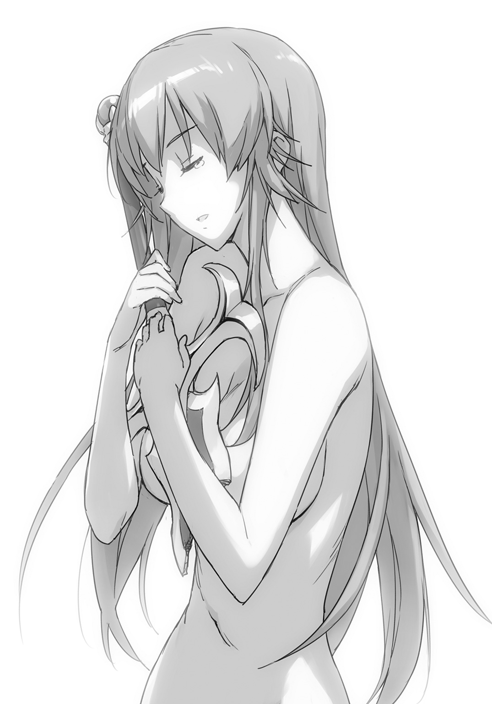

| 英雄教室 5 | |
| 新木伸 | |
この本は縦書きでレイアウトされています。
また、ご覧になる機種により、表示の差が認められることがあります。
ＣＯＮＴＥＮＴＳ
「ローズウッド学園の驚愕」
「ガールズミッション①丸刈りジェームズ」
「ローズウッド学園の対抗戦」
 ダッシュエックス文庫DIGITAL
ダッシュエックス文庫DIGITAL
英雄教室５
新木 伸
第一章「ローズウッド学園の驚愕」
第一話「キス魔ブレイド」
○ＳＣＥＮＥ・Ⅰ「国王とお姉様」
いつもの朝。いつもの校舎の中。
行き交う生徒たちが、国王に気がつくと、挨拶をしてゆく。
「おはようございます。陛下」
「ああおはよう」
「学長陛下。おはようございます」
「うんおはよう」
ブレイドはそんな様子を、ぼんやりと眺めていた。
こいつ。人望があるのは確かなんだよなー。国王のくせに。
生徒たちは親しみをこめて、挨拶をしてゆく。これが「普通」ではないことを、ブレイドは知っている。他国の王もたくさん知っているが、他国では、どこも、ガチガチに凝り固まって、格式張った挨拶をするのが常だった。
「よいお天気ですね。陛下ー」
「ああそうだね。マリア。今朝の起こしかたは最高だったので、また明日もあのプレイで頼むよ」
「そういうことを言うと、もっと〝きつく〟しちゃいますからね？」
「はっはっは......、よろしく頼むよ」
なにを話しているのだろう。マリアと国王、二人の会話は、難しすぎてわからない。ローズウッド学園初代生徒会長に就任したマリアは、お寝坊さんの国王を叩き起こす係であることは、まあ、わかるのだが......。
たまに思う。
ごく、たまに......。ほんとうに、ごくたまに思ったりするのだが――この男、ギルガメシュ・ソウルメーカーが、痴れ者でうつけ者を〝演じて〟いるのではないかと......。そう思わないこともない。周囲の者にフランクに振る舞ってもらうために、わざと〝だめな大人〟を演じているのだと――。
いや。まさかな。
ブレイドは馬鹿な考えを、頭を振って打ち消した。
「どうしたのかね？ ブレイド？ ......君は挨拶をしてはくれないのかね？」
「わざわざ俺のまわりをうろついて、わざわざ皆の挨拶を浴びていたのは、それが理由か」
ブレイドはそう言った。
やっぱ〝これ〟は、だめな大人のほうだろう。こうなってはならない〝見本〟のほうだろう。うん。そうに決まった。
「こんなところにいたのですか。――ギル。早く執務室に来ていただけないと困ります。書類と仕事が山積みです」
かつかつと、かかとの高い靴を鳴らして歩いてきたのは、セイレーン女史だ。
国王の側近として、国の実務の一切を取り仕切る女性である。国王の数ある〝愛人〟――通称〝お姉様部隊〟のリーダーでもある。
もっとも――。〝愛人〟というのは、ブレイドには、よくわからないのであるが――。
どうも、自分と魔王も〝愛人〟のカンケイであるらしい。すると〝愛人〟というのは、〝トモダチ〟と似たような種類のものではないかと、そんなふうに、うすらぼんやり、漠然と理解している。
「やあおはよう。セイレーン。今日は一段と綺麗だね」
「ばかなことを言ってないで、仕事を――」
近づいてきたセイレーン女史の腰を抱く、頤に指をあて、顔を上に向かせて――。
口を、口で――吸った。
じたじたじた。
暴れるセイレーンの手が、国王の厚い胸板を、ぽかぽかと叩く。
しばらくして――。
「な、なに――するんですか。こんな......、人前でっ。みんな......、見てますっ」
セイレーンは弱々しい声でそう言いながら、口元をぬぐっている。
「うむ。君を可愛いと思ったのでな。......つい、だ」
「つい、じゃありません......。こういうことは、その......、夜でないと......」
と、そこまで言ったセイレーンは、はっ、と顔をあげて周囲を見る。
そこらにいて、じーっと見ていた女子生徒やら男子生徒やらが、さささーっと、彼女の視線に追い立てられて、立ち去ってゆく。
ぽつんと、ブレイドだけが、一人、その場に残った。
「なーなー？」
ブレイドは、国王に向けて、そう訊いた。
「うむ？ なにかね？ ブレイド」
「いまの。......なに？」
「いまの、とは？」
国王は首を傾げた。
「だから......、いまの、それ」
「セイレーン。彼が不思議がるようなことを、私はなにか、やったかね？」
「いま。私にキスをしましたけど......。そのことでは？」
「ああ。これか。これはキスという行為だ。通常はこれをきっかけにして性行――」
ごすっ、と、音がした。
セイレーンが国王を鉄拳制裁した音だ。
「痛いよ。セイレーン」
「本気で怒りますよ？」
うん、いまのは本気だ。彼女の怒りのオーラは肉眼で目視できる。ほとんど固形物なほどの密度があった。
「うむ。まあ。挨拶のようなものだね」
国王は、そう言った。
「そっか」
ブレイドは、納得した。
親しい者に対して行う――挨拶の一種なんだな。
いいこと聞いたー。
○ＳＣＥＮＥ・Ⅱ「おはようのキス」
「おはよう」
教室のほうに向かうと、皆がいた。
廊下をずんずんと歩いてゆきながら、ブレイドはとりあえず、一番手近な者に声をかけた。
「おはよう。ブレイド」
ソフィが挨拶を返してくる。
そこに顔を近づけていって、その唇に――ちゅっとやった。
顔を離すと――まばたきもせずに、見つめ返してくるソフィの顔が、そこにあった。
「どうしたの？」
「いや。朝の挨拶」
「そう」
ソフィは何事もなく、そう返事を返してきた。
うん。やっぱいいんだ。これは挨拶の一種だった。
ブレイドは確信を深めた。
まえにソフィとほっぺたをくっつけあったとき、ドキドキしたことがあった。唇をくっつけるのも、そんな感じになるんじゃないかと思ったが――。
単なる挨拶だった。親愛の情だ。トモダチ同士の、なんの変哲もない、ごく普通の〝挨拶〟だった。
どきどきするほうが、変なのだ。
国王の言った通りだった。
「親さまー。おはようなのじゃー」
「ああ。おはよう」
クーが飛びついてきたので、ひろいあげるようにして、抱っこする。
朝起きたときにも「おはよう」と挨拶を交わしたけど、きちんとした「挨拶」はしていない。
なので、ぶちゅー、とやる。
「あははは。親さまー。くすぐったいのじゃー」
クーの唇は、ソフィの唇とは、すこし違った感触だった。ちょっと小さい。そして体温が高いのか、すこし熱い。
「......替わる？」
ソフィがそう訊いてきた。
ブレイドを静かに見つめつつ、自分の唇に指先をあてている。
「ん？ 替わるって？ ――誰と？」
ブレイドは、きょとんと訊き返した。
「......４？」
ソフィの中には、いま現在、五人の姉妹たちが棲んでいる。四番目のカトルは、大鎌使いの子だ。性的な子だ。
「いや出さなくていいぞ」
朝から性的なのは違うだろう。よくないだろう。そういうのはよくわかんないが、もしあるとしても、きっと〝夜〟のほうのはず。
こんな爽やかな朝なんだから、もっと爽やかに〝挨拶〟をするべきだ。
「マスターおはようございます。おはようございます。そしておはようございます。素晴らしい挨拶だと思います。ぜひ私とも挨拶をかわしましょう」
「もう挨拶したじゃん」
まとわりついてくるイオナを完全放置して、ブレイドは教室に入った。今日の一限目は座学で戦術。まだ授業ははじまっていないが、皆の姿は半分くらいは揃っている。
ブレイドは手近な者から、声をかけてゆくことにした。
「おはよう。マリア」
うちのガッコの委員長――じゃなかった。初代生徒会長。〝せんきょ〟で〝みんしゅてき〟に選ばれてから、なぜか彼女は〝委員長〟と呼ばれるようになってきた。なぜ皆は〝生徒会長〟と呼んであげないのだろうか。まあそれはいまはどうでもいいのだが――。
「ああブレイドさん。おはようござ――」
口で口を塞ぐ。〝挨拶〟をする。
マリアはつづく言葉を言えなくなっていた。じたじたじたと、手足を上げ下げするばかり。邪眼を封じる眼鏡の下で、目を白黒させている。
ブレイドは挨拶のできる男なのだ。普通きわまりない、平凡かつ平均的な一般人であるから、このように、平凡な〝朝の挨拶〟だって、もちろん、行えるのであった。
ブレイドがそろそろ挨拶を終えて、口を離そうかと思ったところで――、がしっと、マリアの腕が、ブレイドの首を抱え込むように回されてきた。
いや。――魔王ちゃんか。三つ編みだった髪がほどけている。
身中に二つの人格を宿すマリアは、三つ編みのときには地味で真面目で人の痛みのわかる生徒会長の〝マリア〟であり――髪を下ろしたときには、魔王の娘の傲岸不遜な〝魔王ちゃん〟となるのだった。
「ふん。ブレイド......。ここでするのか？ 我は一向に構わんが」
一度、口を離した魔王のやつは、そう言ってから、もう一度、情熱的に口を押しつけてきた。
舌が侵入してくる。
――が、ブレイドは慌てていなかった。
さっき国王とお姉様の〝朝の挨拶〟を見ていたからだ。挨拶をかわす〝体内〟において、どんなことが起きているのかも、きちんと把握している。
口の中で相手の舌がぐるんぐるん回ったりするのが〝普通〟だということは既に知っていた。
挨拶をする側の舌が、相手の口内に侵入するというのが、さっき〝学習〟した一般例であったが――その逆の〝リバース〟もありで、これもまた普遍解であるのだと、元勇者の超絶的な学習能力により、いま、超学習した。
「おい。離せって」
魔王の足がブレイドの腰のあたりに絡みついてきている。がっしりと腰の裏側でホールドしている。
「太古の文献によりますと、その体勢は〝だいしゅきホールド〟と呼ばれています」
イオナがいらん解説をする。
「人目があるほうが好みだとはな。――この外道め」
魔王のほうも魔王のほうで、紅潮した顔で、なにか意味のわからないことを言っている。
人目？ とか思って、まわりを見ると――。
教室の皆は、まじまじと目を見開いて、口をぽかーんと半開きにして、こちらを見ていた。
ブレイドがなにか超生物的なことをやらかしたときに向けてくる――いつものおなじみの顔だった。
おいおい。みんな、どうしたんだ？ こんなの単なる挨拶じゃないか？
「おまえが我を押し倒し、机の上で〝交尾〟に及ぼうとしていると、皆は、そのように理解しているようだな」
まったまたー。そんな。女医じゃあるまいし。
「ああほら。そんな、エロ女医みたいな、なんとかホールドとか、おまえがしてくっから――、みんなが誤解するんだろうが」
なまめかしい太腿を引き剝がして、ブレイドは言った。だーら、ぱんつ押しつけてくんなっつーの。スカートまくれてんぞ。
ようやく魔王から解放されたブレイドは、皆に向かって歩いた。
「マスターようやく私の番ですね。いつでもウェルカムです。いついかなる時においても私には準備ができています。私のハイスペックな機能を持ってすれば、口内で行われていた動作を推測し、たった一度の観察をもってその舌技を完全に再現することなど、まったく造作もありません。私のハイスペックな舌技を堪能してください」
うるさくつきまとうやつを、ほぼ脊髄反射のみで、手刀で叩いて落として――。ブレイドは皆に向かって、足を踏みしめた。
「ひっ――」
引き攣るような声をあげて、皆が息を呑む。
ブレイドが一歩足を進めるあいだに、ぎくしゃくと半歩ほど下がってゆく。
速度差の、そのままで――一番手前の一人に追いついた。
「やあー。クレアー。おはよー」
クレアの手首を摑んだ。
くるりと回して引き寄せて、抱きしめ、〝挨拶〟しようとすると――。
「ひっ。......ま、まって。まってまって――ブレイド君っ！ こ――心の準備がぁ！」
「あははっ。なに言ってんだよ。クレア」
ブレイドは笑いかけた。
心の準備なんていらないよー。挨拶に。
「あー、ねー、ブレイド君――ちょっとクレアは、勘弁してあげてくれないかなー？」
イェシカが体ごと割りこんできた。ブレイドとクレアのあいだに、自分の体を強引に押しこんでくる。
勘弁ってなんだ？ 俺はただ〝挨拶〟をしようとしているだけなんだが......？
「かわりに、私だったら生け贄になってあげても――むぐう」
ああ。うん。イェシカが先でもいいや。
ブレイドはイェシカの口をすでに塞いでいた。
〝挨拶〟を行う。
具体的には、舌を入れる。何回転もさせる。数十くらいのコンボ数を数秒のうちに叩き出す。
「あ......、うんっ......、......じょーず♡」
一度は、口を離したのだが――。
ネクタイを摑まれて、ぐいと引き戻された。
「だぁーめっ、......つづきぃ♡」
イェシカは机の上にお尻を載せていた。足でこちらの腰をがっちりと挟みこみ、股間をすりつけてくる。こちらも魔王とおんなじで、すっかり、なんちゃらホールドの体勢だった。なんだっけ？ だいしゅきホールド？
「ちょ！ ――イェシカ！ だめ！ 正気にもどって！ 人！ 人いるからっ！」
「はっ。そうだった」
イェシカが正気に返る。ホールドが解かれる。
足から解放されたブレイドは、速やかに、さっき手を出せなかったクレアに〝挨拶〟を行った。
「む......、むーっ！ むーっ！」
じたばた――と暴れていたクレアがおとなしくなって、くてんと力が抜けて脱力するまで、数秒ほど――。
ブレイドはクレアをぽいっと放り出して、次のトモダチに狙いを定めた。
まだまだ、〝挨拶〟をすべきトモダチは、たくさんいた。
百八人と一匹と一体と二羽。いま四人と一匹と挨拶をかわしたので（一体は自動的に除外するとして）、残りは、百四人と二羽――。
皆は、なぜだか、悲鳴をあげながら、逃げまどいはじめた。
がたがた、がったん――と、机と椅子とが、ひっくり返る。
教室のドアから我先にと逃げ出す生徒たちがいる。「わー！」「きゃー！」「に、逃げろおお！」「犯されるぅ！」など、まるで怪物から逃げようという顔で、皆は距離を取ろうとしている。
ブレイドは、仏の顔で、歩みを進めた。
ちょっと特殊な歩法を利用して、対象との距離五メートルを、〇・〇一秒で詰めた。そして〝挨拶〟を行う。
女子の一人が、くてんと脱力。そして次の〝トモダチ〟へと――。
「ま、待て！ ブレイド！ 俺は友達として――そして一人の男としてッ！ おまえを止めなければならないッ!!」
クレイが真剣を構えて、立ち塞がっていた。
なんで抜刀して、剣先をこちらに向けているのか、まるでわからないが――。
ブレイドは笑顔を浮かべた。
「やあ。クレイ。――おはよう」
捕らえた。頤に手をあて、優しく顔をこちらに向かせて――。
そして〝挨拶〟を行った。
「――!? ......!! ...!! ......っ!?」
腕のなかで、クレイの体が、びっくんびっくん、跳ね回る。
しかしブレイドは腕を緩めなかった。
クレイは特に親しい〝トモダチ〟だったから、念入りにやった。
舌をぐるんぐるんと、大回転。
クレイはそのうちに、静かになった。
「お......、男も見境なしだあぁぁ!?」
誰かが騒いでいる。
あったりまえじゃないか。
ブレイドはそう思った。女だろうと男だろうと、皆、〝トモダチ〟だろ？
「ぎゃあああ!!」
悲鳴があがった。誰もかれもが、右に左に逃げ惑っていた。
○ＳＣＥＮＥ・Ⅲ「アーネスト」
「なに？ 騒がしいわね」
教官とともに教室に向かって歩いていたアーネストは、聞こえてくる騒ぎに、廊下で足を止めた。
「待っていてください。見て参りますので」
教官に〝指示〟を出して、そこに留まらせ、自分は教室の中に入る。
わー、きゃー、ひゃー。――と、まるでジュニアスクールの昼休みのような大騒ぎだった。
びきびきと、アーネストは、こめかみに青筋を浮き立たせた。
「アテンション！」
彼女が、鋭く、一喝すると――。
皆は条件反射的に、静止した。
「いったい何事！ 誰か説明のできる者は!!」
怒鳴った。怒っていた。
栄えあるローズウッド学園の生徒たる者たちが。なんたる様。
せっかく――。自分が直々に――この教授にだったら、ちょっとは教わってもいいかな――とかいうステキな人材を見つけてきて、アカデミーなんかで教えていたから、あらゆる権謀術数を駆使して引っこ抜いてきて、学園の教官に据えたというのに。その初授業だというのに。
この女帝たる、わたしの面子を潰してくれたのは、いったい――誰っ!?
仁王立ちとなって、周囲を睥睨する。
「女帝――！ 逃げてーっ！」
そのアーネストに、周囲から声が投げつけられる。
逃げる？ なぜ？ なにから逃げるって――うわぁっ!!
アーネストは、剣を抜き放ちながら――屈み込んだ。
飛びかかってきたブレイドのことを、《アスモデウス》で、一刀両断に――。
ええっ!? ――しちゃったぁ!!
愕然としながら、剣の先を見やる。
だが――《アスモデウス》の刃先は、ブレイドの二本の指によって、受け止められていた。
「あぶないぞー。アーネストー」
鋭利な刃を指先で摘み避けながら、ブレイドは言う。
「だ、だって......、と、飛びかかってくるから......、いきなりだったし！」
「逃げてーっ!! 女帝ーっ!!」
また皆が叫ぶ。
もう。さっきからうるさい。なんなのよ。もう。
皆のほうに顔を向けて、「わかんないわよ」という顔をしたアーネストは、ブレイドに顔を戻すと――。
「ブレイド。あのね。今日は新しい教官の初授業でね......？ すこし静かにしてもらえると嬉しいんだけど。......なんの遊びで騒いでいるんだか、しらないんだけど」
騒ぎの首謀者がブレイドだとわかったら、どうにも、叱りづらい。
もう。自分はこんなに、丸い人間だったろうか？ なんでブレイドに対してだと、きつく言えないのだろうか？
理由がまったくわからない。
「遊びじゃないぞ？ 本気だぞ？」
「逃げてーっ!! 女帝ーっ!!」
悲鳴に近い声が浴びせられる。
アーネストは、また、皆のほうに顔を向けた。
もう。だから、なんなの？ さっきから。うっさい。
――なんなのよ？ なんでみんな、あんな、遠巻きにしてんの？
女子の一部なんて、殺されるみたいな悲鳴をあげている。男子たちのあれは、悲鳴は悲鳴でも......なにか、期待するような目付きで？ ......なにを？
そんなことを考えていたら、ブレイドのやつが、また飛びかかってきた。
「きゃっ！」
「あぶない！ マイロード！」
レナードが、割って入って、飛びこんできて――。アーネストをかばって、ブレイドに捕まっていた。
ブレイドはレナードに顔を寄せると――。寄せると――。
え......？
なにあれ？ なに？ なんなの？ なに......してるの？
「なんで......、キス、してるの？」
じゅるるるるっ、じゅるるっ、とか、二人の口の接点からそんな音が聞こえる。レナードのほっぺたが、内側から凹んだり凸ったりしている。
ブレイドの舌が内側で暴れているのだ。――と、アーネストにはわかった。
キスって。舌なんて入れるんだ。
なんで。男同士で、キスしているのか。まったく、わけがわからない。
レナードの端整な顔が、次第に歪んでゆく。
いや、歪んでいるように見えるんだけど、あれは実はそういうんじゃなくて、だからつまりその、「苦しい」の逆っていうか――。
アーネストには、ぜんぜんそっち方面の知識などなかったが、上気して紅潮したレナードの顔が、そういう感じのときの、それな感じの、そういう顔であることは、容易に想像のつくものであって――。
うわー。やだーっ。
はじめて見ちゃったーっ！
レナードはあれでもいちおう美形であることだし。アーネストは、蹂躙されて歪んでゆくレナードの顔を、ちょっとドキドキしながら見守った。
女子が「きゃー！」と悲鳴を上げながら見ている。レナードは親衛隊なんてものが結成されるくらいの人気のある男子なので、それなりの数の合唱があがる。
アーネスト自身も「きゃー！」とか口にしかけたが、レナードの親衛隊じゃないので、ぐっと声をこらえて自粛した。なにより「きゃー！」なんて、女の子みたいだし......。
レナードが、ぴくぴくして、白目を剝いて――、ぐったりとなって、脱力しきって、ブレイドにぽいっと打ち捨てられるまで――。
アーネストは身動きもできずに、二人の情熱的かつ濃厚きわまりないキスシーンを、見つめていた。
――が。ブレイドが、「こー。ほー」と吐息を漏らしつつ、こちらに向けて歩いてくるのを見て、はっと、我に返った。
「え？ ちょ――ちょっと？ ブレイド？」
ブレイドの目は、アーネストにロックオンしている。
え？ え？ え？ ――つぎぃ、わたしぃ？
「マスター！ マスターマスター！ つぎはそろそろ私の番である蓋然性および必然性が、そろそろ無視できない領域に差し掛かっております！ マスターマスターマスター！ マスター！ マスター！ マスター！ マスターマスターマスターマスター!!」
ぴょんぴょん跳ねていたイオナが、首筋への手刀の一発で機能停止させられる。
「ふはー!!」と、白い吐息を吐きながら、ブレイドが、ゆらりゆらりと、肩を揺らして、歩いてくる。
「――!!」
アーネストは息を呑んだ。
そして悲鳴をあげるかわりに――。
「総員――！ 待避ーっ！ ――第一級戦闘配置っ！」
アーネストは叫んだ。指揮官として。
○ＳＣＥＮＥ・Ⅳ「対ブレイド戦」
すでに脱落した数人を除いた、九十数名と、一超生物との、全校を舞台とした局地戦が行われた。
アーネストたちは、よく訓練された兵士として戦った。
しかし相手が悪かった。それはおよそ、〝戦闘〟と呼べるものでさえなかった。
なによりも腹立たしいのは、アーネストたち――〝よく訓練された兵士〟を、圧倒的かつ一方的に蹂躙してゆく、その存在が、その行為を〝戦闘〟とさえ認識していないことだった。
〝それ〟は、「挨拶するぞー」とか、わけのわからないことを言いながら、一人一人、捕まえていっては、蹂躙していった。
皆は次々と捕まり、そして、各個撃破されていった。
すべての者が、屠られた。
そしてアーネストは、最後の一人となっていた。
○ＳＣＥＮＥ・Ⅴ「最後の一人」
「ぶ、ブレイドっ!! ――そ、そこよりこっちに、近づいてきたら！ だ！ だめだかんね！」
炎をまとった《アスモデウス》を振るって、床の上に一直線の線を引く。
融解した石の、その線を、もしも踏み越えてくることがあれば――ッ!!。
たとえブレイドであっても――斬るッ！
「あとはもう、おまえだけだぞー。アーネストー」
――ってえぇ!! あっさり越えてくるしぃ!!
「マスター、マスター、私が残っています。アーネストより前に、ぜひ私を――」
横からぴょんと飛びついてきたイオナに、ブレイドが瞬間・破竜饕餮を撃ち込んでいる。......ひどい。
アーネストは壁際まで追い込まれた。もう逃げ場がない。
ブレイドは一歩一歩、歩いてくる。「挨拶ー」とか、例のわけのわからないことを口にしている。
もう、どうしようもない窮地に立たされて、アーネストは、決意をした。
殺すしかない。
――じゃなくて。
あれをやるしかない。
「《アスモデウス》っ！ 我が身に来たりて――我を焼け！」
《応っ！》
灼熱の炎が、アーネストの全身を覆い尽くす。
肉体が、燃えあがった。
皮膚が、皮下脂肪が、筋肉が、腱が、神経が、骨が――あらゆるすべてが燃えあがる。固体から灼熱のプラズマへと相転移を遂げる。
アーネストは《炎の魔人》と化した。
物理的には無敵の存在と変わる。
さあ！ ――これでどう？
アーネストは、非実体となった体で、すらりと立った。
もうこれでブレイドは、自分に触れることはできない！
触れること能わず！
よって！ キスすることも能わず！
「ん？ なんだアーネスト。炎化なんかして？」
《ふんっ！ これでもう！ 不埒な真似には及べないでしょうよ！》
「不埒な真似？ なんだそりゃ」
「ふ。......マスター。この私のハイスペックな修復能力にかかれば、この程度のダメージなど、一〇五・七二秒フラットで回復できます。さあ私にもマスター流の素晴らしい〝挨拶〟を、ぜひお願――」
「どらぐいーたー」
ブレイドが気怠げにつぶやく。イオナがまた超螺旋に呑みこまれて、吹き飛んでいった。
最近、〝マザー〟とやらとの回線が復旧したとかで、ばらばらになっても平気なので、ほんと、容赦がない。
《可哀想でしょ》
「ああ。これ？ 不埒ってこれのこと？ ――ああ。まあそうかもしんない。壁も壊しちゃったしな。次は壁壊さないようにする。イオナだけ上手に壊すよ」
《そこ？ 言うとこ、そこ？ ......もう、あちこち突っこみどころ満載なんですけど。てゆうか。壊さないでおいてあげなさいよ可哀想でしょ。あ、〝挨拶〟......くらい、してあげなさいよ、あれだけ、して欲しがっているんだから》
「だから。あと残っているのは、おまえだけだってば」
ブレイドは、一歩前に出てくる。
《だーかーらー！ い、イオナちゃんを先に......、生け贄にっ》
「イオナはまだぶっ壊れているよ」
なぜ自分は、後退しているのか？
炎化した以上、物理存在など恐るるに足りないはず。
たとえブレイドがキスに及ぼうとしたって、実体のないこの体に触れることはできない。
そればかりか、高熱の炎で焼かれるだけで――。
《ほ、炎よっ？ あ、熱いわよっ!?》
「関係ないな」
《か、関係ない――って!?》
「俺が挨拶をするかどうかと、そのこととは、関係ないだろ。俺はとにかく挨拶をする。そう決めたんだ」
だめだ。こいつ。頭おかしい。超生物に言葉が通じるとか思った自分がバカだったーっ!!
アーネストは壁際に押さえつけられた。
頭の脇に、どん――と、手を突かれ、逃げ場をなくされる。
ブレイドから壁ドンされる。
《じゅうじゅう言ってる!! 焼けてる!! 焼けてるからっ!!》
もうブレイドの肉体は焼けはじめていた。
しかしこいつは――この超生物は、顔色一つ変えないのだ。
まあたしかにアーネスト自身も、痛みと苦痛には耐性があるが――。炎化変身する際に、全身が焼き尽くされる苦痛にも、最近は顔に出さずに耐えるようになってきたが――。
「んー......」
ブレイドは顔を近づけてきた。目を閉じたまま、その唇を近づけてくる......。
アーネストは、ついに観念した。
そして炎化を解いた。
裸身として――ブレイドの腕の中に実体として戻る。
「お？ 戻った」
ブレイドが目を開ける。嬉しげに笑う。
その顔についた火傷の傷痕を、愛おしげに撫でながら――アーネストは、言った。
「もう。ばか。......そんなに私と、キスしたかったの？」
「へ？」
「へ？......じゃなくて。だから。キス。みんなにして回っていたでしょ？ 私にも、するんでしょ？ 私と、最後に、したいんでしょ？」
アーネストは言った。すでに自分以外は、全員が餌食となっている。除くイオナ。
「いや。俺がしていたのは〝挨拶〟だけど？」
「なにそれ？」
そういえば、ブレイドはずっと〝挨拶〟などと言い続けていた。そのことをアーネストは思い出していた。
「挨拶......って、なにが？」
「だから。これ」
ブレイドは不意に顔を近づけてきた。
「すなっ！」
ぐーっと、手を突っぱって、近づいてきた顔を遠ざける。
「それはキス！ 挨拶とちがう！ あんたバカ!?」
「ちがくないって。国王のやつに、きーたんだ」
顔をてかてかと光らせて、得意げな顔をして、ブレイドは言う。
あーもー、そういうコドモっぽい顔、きらいじゃないんだけどぉー。
「これ。親しい者のあいだでする、挨拶なんだってな。だから俺。みんなと――、百八人と一匹と二羽と――、ああ、あとで、アインとツヴァイにもしてこないと」
「えーと、ね......。ブレイド、あのね」
なんと言ったらいいのやら――。アーネストは頭を抱えたくなった。
ああ。そうだ。どう言えばいいのか。――思いついた。
「陛下の言うこと、信じるほうがバカ」
「――はっ!?」
ブレイドの顔つきが、瞬時に変わった。
一瞬にして、理解した。――そんな顔だ。
「あっ、あっ、あっ......、あのっ......、ええと？」
ブレイドは、こわごわと、後ろを振り返った。
皆は、にこにこと笑顔を浮かべている。一部、笑顔の脇に、青筋が浮かんでいる顔もあったりする。
「ご、ごめん？ ――ごめんなっ？」
ブレイドは、一歩、二歩、後じさる。
「ごめんよーっ！」
そこから、猛然とダッシュを決めた。開いてる窓から飛び出して、ぴーっと口笛で飛んできたアインにキャッチしてもらって、空へと逃げる。
その間わずか二秒――。ものすごい〝逃げ足〟だった。
「まったく......、ブレイドらしいっていうか、なんていうか――」
レナードから渡されたマントを、全裸の上に羽織りながら――。アーネストは、校舎内の惨状に目を向けた。
床。壁。廊下。あちこちが破壊されている。教室内もめちゃくちゃだった。皆の本気の戦闘が校舎内で行われた、その結果だ。
「まったく。もう。......仕方ないんだから」
薄く微笑んだアーネストだったが、ふと、指先を自分の唇にあてた。
なにか重要なことを忘れているような気が......？
「マスター。ひどいです。私はまだ〝キス〟をされていません」
ブレイドの逃げていった窓辺で、イオナが言っていた。
「ああーっ！」
アーネストは叫んだ。
「私だけ......、キスされてなくなくね？」
「アーネスト。ご安心ください。私もマスターからキスをされていません」
「私だけ......、キスされて......、なくなくなくね？」
「ですからアーネスト。私もです」
「キスされて......、なくなくなくなくね？ なくなくなくなくなくなくね？」
「奇遇ですね。アーネスト。私もです」
「なくなくね？ なくなくなくなくなくなくなくなくね？」
「ですから私もです。アーネスト。私もです。偶然かつ奇遇です」
イオナとアーネストの合唱は、いつまでも続いた。
第二話「アダルト・クー」
○ＳＣＥＮＥ・Ⅰ「クーフーリン」
いつもの寮の食堂。いつもの昼時。
ブレイドはいつものように、皆と食事をとっていた。
クーを膝の上に載せて、好物のカツカレーを、いつものように食べていた。
最近はクーのやつも自分で食べるようになってくれているので、スプーンを往復させて給餌してやる必要はない。
――が、たまには、こちらのスプーンで、あーんとやってやると、クーのやつは、大変喜ぶ。
カレーを食わせると、辛いのが苦手なクーは、ぽっと火を吐いたりしてちょっとおもしろい。
いや。子供で遊んじゃいけないな。親として。
「どうしたのじゃ？ 親さま」
「ん？ どうした？」
そんなことを考えていると、クーのやつが、首をねじ上げて、訊いてきた。
「座り心地が、わるいのじゃー」
「おう。そうか」
「親さま、椅子失格なのじゃー」
「そうか失格か」
もぞもぞ動いていたのが良くなかったのか。〝椅子〟に失格してしまった。
「ふふっ」
アーネストが、こっち見ている。
「なんだよ？」
その微笑みに、ブレイドは訊ねた。
「べつにー」
「へんなやつー」
なんで笑われたのか。よくわからんが。まあいいか。
「親さまー」
また膝の上のクーが言う。
「なんだー？」
「椅子失格なのじゃー。座りにくいのじゃー」
「と言われてもなー」
なんか、いつもと違って、クーが重たくて。載せてやっている足がしびれるというか。位置を変えようと、もぞもぞ動かしていると、椅子失格にされてしまうというか。
「なんか重いんだよ」
「うっわブレイド。いまあんた全世界の女の子を敵に回したわよ？」
アーネストがなんか言ってる。ぶっちゃけ意味がわかんない。
「クーちゃんは子供だもんねー。だから重たくなるんじゃなくて、大きくなる、だもんねー」
クレアがすごく優しい目でクーを見て、撫でくり、撫でくりと頭を撫でる。クーはうっとりと目を閉じて、頭を撫でられている。
こんな光景を見ることができるのも、前に、皆が力を合わせて〝人間の強さ〟をクーに教えこんでくれたからだ。
竜種という生物は、〝強者〟しか認めない。百八人全員による集団戦闘で、竜種の幼体は見事に敗北。あれからずいぶんみんなも強くなったから、いまなら百八人で成竜が余裕かもしれない。
まあ成竜の上には、壮竜もいるし古竜もいるし。上には上がいるということだ。人が勝てるのはだいたいそのあたりまでが上限とされている。
竜種の場合には、さらにその上に、長老格とか、最長老まで控えていたりする。知ってるか？ 山脈かと思ったら、竜だったんだぜ？
それはそうと、クーと皆はすっかりトモダチだ。ブレイドだけがちょっと〝特別〟で、〝親さまー〟とひっついてきて、片時も離れようとしないわけだが。皆にも完璧に懐いている。
「我はコドモではないのだー。レディなのだー」
「はっはっは。コドモだろー」
ブレイドはクーの頭を撫でた、首をぐりんぐりんと回した。
「タマゴだって、もうすこししたら、産めるようになるのだー」
クーはそんなことを言った。その発言に、男子の一部が、ざわっと騒いで――、女子一同は微笑ましい目を向けてきた。
「ざわっ？」
「なに口でつぶやいているのよ？ ブレイド？」
「いや。俺。ふつーだから。ふつーの男子だから。〝ざわっ〟――のほうな？」
「......はい？」
アーネストは、わからない顔を浮かべている。
ブレイドだってわからない。いま一般的男子がどのへんに〝ざわっ〟ってなったのか。どのあたりが〝ざわっ〟ポイントだったのか。
しかしブレイドは普通極まりない一般人男子であるから、わからなくても、わかるのだ。
「ざわっ。ざわっ」
「だから。なんなのよ。それっ」
アーネストが、目を細めて、笑っている。
「......ところでさ。クー」
膝の上のクーに言う。
「なんなのだ？ 親さま？」
ブレイドはクーの腋の下に手を入れて、ぶらーんと、持ちあげた。
「やっぱり、おまえ、なんかちょっと、重くなってないか？」
ぶらーんと、ぶら下げて、重さを計る。
「んー。やっぱ。重くなってねえ？ 太った？」
「親さまー。それは育ったというべきなのじゃー。全女性の敵なのじゃー」
クーが人間の女の子みたいに言う。いやいやいや。竜種というのは、まず〝太って〟、その後に〝筋肉〟へと転換されて強くなってゆく生物だ。だからこの場合、〝太る〟でもって、正しいはず。
「あら？ ね、ねえ......、ブレイド？」
アーネストが言う。
「ん？ なんだー？」
「クーちゃん......、その......、大きくなってない？」
「ん？」
捧げ持って、向こうに向けていたクーを、ひっくり返して、こっちを向かせる。
「ふむ？」
手で〝それ〟に触れてみて――。確認。
ぽにょん。ぽにょん。
「おっぱいだ」
ブレイドは言った。
前はほんのわずか、皮膚の下に張り付いていた感じの、薄っぺらい皮下脂肪的な趣だったのだが。
ちゃんと......、ある？ それなりに......、ある？
もうこれは立派に〝おっぱい〟と呼べる物体ではなかろうか。
「あはははー、くすぐったいのだー、親さまー」
「なあソフィ。ちょっといいか」
「いいわ」
黙々と食事を続けていたソフィに、そう言って、ちょっと失礼させてもらって――。
右手と左手とで、比べてみる。
「ちょ！ ブレイド！ なにやってるのよ!? ――手！ ――手ぇ!?」
アーネスト。うるさい。
うーん......。おんなじくらい？
「クー。......おまえ、本当に大きくなってるぞー」
「我は育ちざかりなのじゃー。おかわりー！」
皿を突きだして、クーが叫ぶ。
おー。カツカレー。食えるようになったかー。辛いの苦手を克服したかー。いいこ。いいこ。
おっぱいから離した手で、ブレイドはクーの頭を撫でた。
○ＳＣＥＮＥ・Ⅱ「いつもの昼食」
ざわつく昼時。いつものざわついてる食堂。
ブレイドはいつものように、カツカレーにぱくついていた。
このルーとライスとカツの絶妙なハーモニーが。ハーモニーが。ハーモニーががががががががが！
「親さま。まだ二杯目なのか？ 我はもう三杯目だぞ」
「なにをー。負けるもんかー。はっはっはー」
ずずっと飲み物のように残りのカレーを片付けて、つぎの皿に移る。
「はっはっはー」
クーもブレイドと同じように、片付けて、笑って、四杯目を食っている。
カレーは誰かが持ってきてくれて、そこに置いていってくれる。
ありがたい。これで我が親子は、食うことだけに専念できる。
親子で並んで食事をしていた。カツカレーうめえ！ マジうめえ！
ざわざわっ――。
ブレイドとクーの周囲だけ、ざわざわとしている。まあ昼食時の食堂なんて、ざわざわしていて「普通」なので、ブレイドはまったく気にしていなかった。
「普通」の昼時の食堂で「普通」に食事をしている、ごく「普通」の親子の「普通」の団らんの光景に過ぎない。
「いやちょっとさすがに、これ、おかしいでしょ？」
アーネストが言う。
「どこが？」
ブレイドは、スプーンをくわえて、訊き返した。
なんでなのか――。みんな、立ちっぱなしで、こっちを見ている。ブレイドとクーの親子を見つめている。
「クーちゃん。......育ちすぎでしょ。あきらかにおかしいでしょ。なんでわかんないのよ？ だからあんたは超生物って言われんのよ」
「だから、どこがだっつーの？」
超生物呼ばわりされるのは、とても嫌だったので――。
ブレイドは、目を細めて、我が子をじっと観察した。
カレーの皿に顔を、突っ込みかねない仕草で、一心不乱に食べているクーを、よく見てみる。
うん。かーいー。かーいー。......じゃなくて、観察を行う。
クーのやつは......。
いつものように、長い髪で、黄色で。頭には角があって、それは人と違っている部分だ。
ボディの上半身にはペインティングみたいな模様が浮かんでいて、あれは皮革の〝服〟に見えているんだけど、じつは〝自前〟で、皮革も皮膚で――。
〝すっぽんぽんではないのか疑惑〟が一時は持ちあがったが、クーのやつが服を着るのを嫌がるので、そのままとなった。
あと、チェックすべきところといえば――。
手が二本。足が二本。尻尾が一本。目と鼻と耳の穴が二つずつ。口が一個。長い髪を左右に二つにまとめて垂らしていて――。これはブレイドが、毎朝、結ってやっているもので――。
あと！ そうそう！ 忘れていた！ ――〝雌型〟であることだ！
しばらく前までは、〝男〟と〝女〟の違いというものに関して、よくわからないブレイドであった。
だが最近の猛烈な〝普通〟修行において、なんとブレイドは、ほぼ一〇〇パーセントという恐るべき高確率で、男女の違いを見分けられるようになっているのだった！
髪の長さで区別をつけるなんていうのは、シロウトの判別法だ。玄人であれば、別なところに目をつける。〝プロ一般人〟であるブレイドが、最近、編み出した、〝ブレイド式男女判別法〟によれば――こうだ。
むにゅっ――。
ブレイドは手を伸ばして、愛娘のおっぱいを揉んだ。
うん。よし。おっぱいがあるなっ！
つまり――、クーは〝雌型〟であるということだ！
「なにも変わってないじゃん」
すべての確認作業を終えて――ブレイドは、アーネストに、そう言った。
「どこ見てんのよ！ なんでわかんないのよ！ てゆうか！ なんでおっぱい触る必要あるのよ！」
「いや？ もしかしたら......？ 〝雄〟に変わっていたりしてないかなー、って？」
「変わるわけないでしょ！ ばか？ ばかなの？」
うん。知ってる。竜種は性別が変わるタイプの魔獣ではない。魔獣のなかには一定サイクルで性別が変わるやつらもいるが......、竜種は違う。雌は雌。雄は雄。一生変わらない。ただ、タマゴのときには性別はまだ決まっていなくて、なんだか、タマゴが孵るときの温度とかなにかで性別が決定されるらしいが......、学者でもないので、詳しくは知らない。
「もういっぺん！ よく見てみなさいよ！ 変でしょ！ あきらかに変でしょ！ どう見たって！ 誰が見たって！ 一目瞭然で！ もう絶対になにかがおかしいでしょ！」
「えーっ......？」
ブレイドは口を尖らせた。よく見たのに。
「えーっ、じゃない！ クーちゃんを見なさい！ この超生物っ!!」
〝超生物〟と呼ばれるのは、嫌なので、......もういちど、よく見た。
さっき確認した点を、ひとつひとつ、見てゆく。髪の色って黄色だったよな？ ――とか、あたりまえすぎるところも、いちいち、意識してチェックしてゆく。
そして最後に――。
むにゅん、むにゅん。
愛娘のおっぱいを揉んでみた。
「だからなんでおっぱい揉むの!? そこ触る必要ある!?」
「うるさいなー。もー。集中できないだろ？」
いまなんか、違和感があったような......？ ブレイドは掌の感触に集中した。
「あははははー。親さまー。くすぐったいのだー」
「ブレイド......、どうだ？」
男子たちが固唾を呑んで、見守ってくる。いや。〝どうだ？〟――とか言われたって......。大きいぞ。
ん？ ......大きい？
むにゅん。むにゅん。
「ん？ ん？ んー？」
もみん。もみん。
たゆん。ゆややん。
「んー？ んー？」
「ブレイドそれわざとやってる？ わざとやってる？ わざとやってるって、もし言ったらぁ！ ――斬ってやるからあぁ!!」
「おまえなに半ベソになってんだよ？」
「だって！ だってだって！ だってぇ！」
「おい。クー、アーネストが変だぞー？」
クーの両方のおっぱいを摑んだまま、その体をひねって、アーネストに向けさせる。
「ブレイドがっ！ ブレイドがっ！ ――クーちゃんに浮気してるぅ！」
「どうどう」
アーネストが、イェシカとクレアの胸に顔をうずめる。
なんだよ。おまえだって、二人のおっぱいに顔をうずめにいってるじゃん。なんで俺だけおっぱい触っていると叱られるんだ？ まるでわけがわからん。
――あっ！
ブレイドは手に返ってくる手応えのなかに、答えを見つけたような気がした。
「......大きい？」
「そう！ それ！ ――ブレイド！ あなたにもわかったのね！ わかるのねっ!?」
アーネストが顔をあげてくる。涙を流してブレイドを見てくる。
「いや待て！ ......早まるな!? 結論を早まるなよ！」
ブレイドは慎重に、思索を重ねた。
早々と結論に飛びついて、失敗するような愚を――元勇者は犯さない。
「これは......、これはっ、クーのおっぱいが大きくなったんじゃないんだ。......もしかして、ひょっとすると......？」
「もしかすると......？」
期待に顔を輝かせているアーネストに、ブレイドは、力強く、うなずき返した。
もう、答えが、わかった。――確信していた。
「クーが！ おっきくなった!?」
「そうよ！ その通りよ！ あなたなら気づいてくれるって信じてたわ！ ブレイド！ あなたやったわ！ できたのよ！ ついに気づいたのよ！ やったじゃない！ あなたはやればできるひとだって、わたし！ 信じてた！」
「うん！ うんうん！」
俺とアーネストは、手と手を取りあって、喜びを分かちあった。
しかし、なんでか、皆は石像の顔をして立っていて――。
「外見年齢、いまこれ、一四歳くらいかしらねー」
「クーちゃん。ちょっとジャンプしてくれないか。うん。ぴょんぴょん。そうそう。――どうだ？ カシム？」
「一四歳だな」
「死ねばいいのに」
なんか女子と男子がクーの年齢測定などをやっている。
あとなんか、女子の一部が、カシムにゴミ虫を見るような目を向けている。クレイは同罪にならなくて、カシムだけ有罪なのも、なんでなのだろうか？
「なーなー。まえって、あれ、何歳くらいだったんだ？」
「九歳か一〇歳......くらいだと思う。......ねえ？」
クレアの言葉に女の子たちが揃ってうなずく。この質問に答えてくれたのは――おもに女の子たちばかり。男子勢は首を傾げたっきり。
なんでだろ？
「ったく。なんだよ」
ブレイドは唇を尖らせた。
「たったの四歳しか違わねーじゃん。んなの。わかるわけねーよ」
「いや。わかるって」
皆から責め立てられた。「あたりまえだろ」「当然だろ」的な勢いで、まるでわからないこちらが悪いかのような勢いで、責める目線を向けられた。
だからっ！ ――なんでっ!?
とりあえず、クーが一四歳相当に成長したということは――わかったのだが。
○ＳＣＥＮＥ・Ⅲ「いつもの昼食Ⅱ」
いつもの食堂。いつもの昼時。
いつもの愛娘との並んで昼食を。いつものカツカレーを、二人で楽しんでいると――。
ざわざわざわ。
ざわざわ。
ざわっ。
ブレイドとクー、二人の周囲には人だかりができていた。
そいつらが、ざわざわとしていて――。
「うるさいよ、おまえら」
ブレイドはついに放置しておくことができなくなって――振り向いて、そう言った。
「いや。しかしな」
クレイが言う。カシムもうなずく。
なんでか。男子が多い。
首をぐりっとねじ向けたままで、見てみれば――。人だかりを構成しているメンバーの多くは、男子ばかりだ。
「おまえら。さっきから。なんなの？」
なんでうちの娘を見んの？
「いや。ブレイド。変だろ？」
クレイが言う。
「なにが？」
ブレイドは訊く。
「だから。見ろって」
「なにを？」
「隣にいる。クーを」
見た。
「見たけど？」
「気づけよ！」
「なにを？」
「もういちど！ よく見てみろ！」
見た。
「親さま、どうしたのじゃ？」
「いや。よくわからんが。おまえを見ろって」
「見て、どうするのじゃー？」
「いや。ぜんぜんわからん」
「わかれよ！ 頼むよ！ ――頼むから！」
「なんか懇願されてるんだけど。俺」
「親さまは人望があるのじゃー。下々の頼みを聞いてやるのは勇者の務めなのじゃー」
「いや。俺勇者ちがうし」
クーが物騒なことを言う。だがみんなは冗談だと思ってくれたようで――。そこに騒ぐ者は、いまは一人もいなかった。
「――だから。なに騒いでんの？ おまえら？」
「だから――！ だから！ クーのカラダがっ！」
ブレイドはクーを見た。もう何度目かに、よく観察した。
「ああ。おっぱい出てるな。――だから？ 一四歳相当になったって、このまえから、わかってたことだろ？ なにいまさら騒いで――」
「――どこが一四歳だよ！ どう見てもいまのそれは！ もっと上だろ！ 二四歳だろ！ なんでわかんないだよ！ わかれよ！ 頼むよ！ 頼むからあぁ！」
クレイが錯乱している。
錯乱するほどのことか？
親友が涙ながらに訴えてくるので、ブレイドはしかたなく、もういちどクーを観察した。もう何度も何度も観察していて、それとわかるような大きな変化は、なにひとつ見当たらないのだけど......。
腕だって二本揃ってるし。カレー食うのにも不都合はないし。
仲間が片腕をなくしていたことに気づかなかったことは、勇者時代にはあったが......。だって戦闘力変わってなかったし。自分が片腕をなくしていることに気づかないことだってあるから、仲間の片腕の消失に気づくのは、けっこう難しいことなのだ。
だがそこも確認した。クーはきちんと両腕揃っている。目だって両方ある。
そして戦闘力は、微妙に増えていて――。
おや？ 一四歳相当になったこのあいだと比べて、すこし増えてないか？
ん？ ん？ ん？
んー？
ブレイドは、なにか違和感を覚えはじめた。
「いや。待てクレイ。早まるな。二四歳という仮説はあくまで〝下限〟の話であって、熟れ加減からいっても、二四歳以上である可能性が、もっとも高いと、俺たち検討委員会は、そう結論せざるを得ない」
検討委員会まで出来てしまっているようだった。しかしカシムにその喋りかたは、まったく似合っていない。イライザかイオナみたいな真面目きわまりない学者喋りをしていると、なんだか知的に見えるので、ぜんぜん似合わない。
「私。詳しい人に、いろいろ聞いてきたんです。イライザちゃんと女医センセと、あと魔獣学の先生と......」
クレアが言う。
「魔獣は――特に竜種は、戦闘力と年齢とが比例関係にあるって。正確には食べて〝身〟についた分と、見た目の大きさ――〝年齢〟とが比例するって。クーちゃん。最近いっぱい食べたもんね。それで大きくなっちゃったのかな？」
「ここのごはんは、うまうまなのじゃー」
クーが言う。
そこで見ていたマダムが、うんうん、とうなずく。
「いっぱいお食べ。それで大きくなりなよー」
「うむ。大きくなったのじゃー」
「いや大きくなりすぎでしょ！ 大人すぎるでしょ！ アダルトすぎるでしょ！ なんだってこんな短期間で二十四歳相当とかになっちゃうのよ！」
アーネストが言う。おまえだって、このまえ、ごく短期間で、何倍にも肥えてたじゃんよー。十歳から二十四歳になったクーは、たかだか二・四倍程度だぞ？ 倍率からいって、そんな騒ぐほどのことでもないぞ？ おまえのときと比べたら。
「なーなー。これ？ 二四歳くらいなの？」
ブレイドは訊いた。
「そうだよ。確実に女医さん超えてるだろ？ だろ？ だろ？ だろおぉ？」
いや同意を求められても......。訊いているのは、こっちなのだが。
「クー。こっちこーい」
「なんじゃ親さま？」
クーを呼ぶ。膝の上に呼ぶ。
向かいあう形で、膝の上に座らせる。
「お、おれ俺俺、これ知ってる......。対面座位っていうんだろこれ？」
男子たちが、また〝ざわっ〟となってる。ほうっておく。
「あー、たしかに、大きくなってるなー」
ちょうど目の前にきた二つの膨らみを、手で揉んでみる。
「揉んだああぁ！」
「こっちでも確認するか」
手だけでなくて、顔でも確認する。
「顔うずめたあぁぁ！」
よく女医が〝発情〟して迫ってくるときに、そのでかいおっぱいを押しつけてくる。ディオーネも発情はしていないが、よく顔をそのデカい胸に埋めさせられる。
あの二人がちょうど二十四歳相当ってあたりのはずだ。
「ああ。うん。たしかに二十四歳相当か、それ以上だ」
確認し終わったので、ブレイドは――そう言った。
「す――、すげえ......。そ、そんな確認方法があったなんて......。俺たちには、考えもつかねえ......、考えたって、できやしねえ......、すげぇ......、痺れる......、憧れる......」
もはや、なにをどうやったところで、男子たちは〝ざわっ〟となってしまうようだった。
どうすりゃいーのよ？
ブレイドはため息をついた。
○ＳＣＥＮＥ・Ⅳ「添い寝禁止」
「禁止だから」
夜、クーを連れ立って部屋に入ろうとすると、女子一同に、部屋の前に立ち塞がられた。
アーネストを筆頭に、皆、コワい顔になって、ブレイドのことを睨んできている。
除く。ソフィ＆イオナ。あと魔王とイェシカ。
「ね？ ソフィだって、そうよね？」
いつもの無表情でいるソフィに、アーネストが訊く。
「ブレイドが気持ちいいなら......、私はそれでいいわ」
ソフィはいつも、そういう感じ。ブレイドのありのままを認めてくれる。
「ほらね。......イオナは？」
アーネストは、つぎにイオナにうながした。
「マスターマスター。私も混ぜてください。そして私のハイスペックな機能をぜひご堪能ください」
イオナはいつもこんな感じ。こいつの言うことは、いつも、わからない。てゆうか。わかりたくない。
「ほらっ」
二人の証言がいったいなんの証明になるのか。アーネストは、よくくびれた腰に手をあてて、ドヤ顔になった。
「じゃあ、つぎはマオ」
「我は妾でよいとは言ったが。その竜の仔......いやもう仔ではないか。立派なメスだな。それに取られるのは、少々、癪であるな」
「ほうら、みなさいってば」
アーネストはまたまた勝ち誇った。
うん？ なんかいまのは、ちょっと抗議っぽかった。しかし、いったいなにを抗議されているのか、さっぱりではあるが。
あと魔王は口ではそう言いながらも、顔は笑っている。
「まあ、ブレイドは、そろそろ覚えたほうがよいのではないか？ ――そうすれば我にも早く〝順番〟が回ってきそうだ」
「だめだめだめ！ ぜったいだめ！ だいたいマオ！ あなた生徒会長なんだから！ 寮の規律を乱すようなことを言わないの！」
「生徒会長は我ではなくマリアだが？」
「おなじじゃないの」
「なーなー、俺、......寝てもいいの？」
「だめっ！ 絶対だめえぇ！」
「ねむねむなのじゃー、親さまー、早く寝るのじゃー」
かふー、と、クーのやつがあくびをしている。
女子たちは、まだ話があるようだ。
「あと、睨んでないのっていうと......。イェシカだけ？」
「え？ えっ？ あたしぃ？」
イェシカは自分の顔を指差して、そう言ってきた。
「あたしはぁー、べつにー、ブレイド君が超進化しちゃってもー、まー、男の子だしー、しかたないと思うしー」
「順番が回ってくるかもしれんしな」
「いやこないし」
イェシカは魔王の頭にチョップを入れている。
なんだよ？ 超進化って？ だからなんの順番？
「ほら」
またドヤ顔になって、アーネストは言う。だからこれらは、いったいなんの証明になっているんだか。
「ということで。睨んでいる娘も睨んでない娘も、全員、反対だし禁止だし。だから絶対！ だめなんだから！ 禁止禁止！ 大禁止っ！」
「アーネスト。おま。さっきも禁止って言ってたろ」
ブレイドはため息をつきながら、そう言った。
夕食も終わって、風呂に入ろうとしたときのことだった。
アーネストが部屋に乱入してきたのだ。今日は面倒くさいからテルマエに行かずに、部屋の風呂で済まそうとしたら、「ぜったいダメ馬鹿変態信じらんない！ テルマエ行ってきなさい！」と、タオルと桶と石鹼をぶつけられて、クーと二人で露天の風呂へと追いやられた。
いったいなにを〝禁止〟されていたのだろう？
部屋の風呂ではだめで、野外の風呂だとＯＫになるのは、なぜゆえなのか？
「だってテルマエは混浴でしょ。おかしくないでしょ」
アーネストに自信満々で言われた。
うーん......？
ブレイドは腕組みをして、考えた。むずかしいカオになって、考えてみた。
うーん......。うーん......。
だめだ。わからん。
横を見ると、我が子が、おんなじポーズを取って、おんなじように考えこんでいる。
「わかるか？ クー？」
「わからないのじゃー」
「だよなー」
「なのじゃー」
「わかりなさいよ。この超生物親子」
「やめろよ。そりゃ竜種は超生物かもしれんけど。俺は普通だってばー」
「我は親さまとおんなじでー、ほんのりと嬉しいのだー」
「そうか。ほんのりか」
クーの頭を撫でてやる。クーが幸せなら、ま、いっか。
「とにかく！ 混血禁止っ！ 大禁止っ！ 相姦も禁止っ！ 超禁止っ！」
「じゃ。ま。そういうことで――」
ドアを開けてクーと二人で入って、ドアを閉めようとすると――。
「ちょ！ ちょちょ！ ちょおおぉぉぉ！ 聞いてたの!? いま聞いてたよねっ!? 禁止って言ってるでしょ!? だめって言ってるでしょおぉぉ!?」
アーネストの指がはさまっていて、閉められない。
「ちょ！ ちょおっ！ ちょおおおぉ！ 指はさまってる！ 指はさまってるってえぇ！」
抜けよ。
なおも、ドアを閉めようと、何度もばんばん、開け閉めを試みていると――。
「ムガあぁぁぁ!!」
アーネストが怪獣化した。ドアをこじ開けて、部屋の中に入ってくる。
「なんで入ってくるんだよ？」
「私！ ついてるから！ ――みんな帰って大丈夫よー！」
アーネストはドアの向こうに声を投げている。
「だから。なにが大丈夫なんだってば？」
ブレイドは本日何度目かのため息をついた。
「心配だからに決まってるでしょ」
「なにが？」
「親さま。我にはなんとなく、わかるのだが」
「お？ おまえ？ わかるのか？ えらいえらい。えらいぞー」
クーの頭を撫で撫でとしてやる。
「――で？」
「皆は親さまが我に〝いやらしいこと〟をしないか、心配なのではないか？」
「いやらしいこと？ なんで？ ――ていうか、いやらしいことって？ 具体的には、どーゆーこと？」
「我は〝いやらしいこと〟をしたことがないので、それがどういうことなのか、具体的には、よくわからないのじゃー」
「そうだよなー。俺だってそうだぞー。女医にはいつも迫られてるけど、未遂だしなー」
「迫られてるのっ!? いつもっ!?」
「そこ。うるさいよ」
ブレイドは言った。人の部屋にきてまで騒ぐアーネスト。ほんと。うるさい。
「我がこんなナイスバディになってしまったので、皆は心配なのじゃ。アーネストは特に心配なのじゃー」
「べ、べつに。心配なんかしてないしっ」
なんか女同士の対決がはじまってしまっているようだった。それは放置しておいて、ブレイドはベッドの準備をはじめた。
「ウソなのじゃ。我があまりにも女らしいボディを手にしてしまったので、アーネストは心配で心配でたまらないのじゃ」
「ち、ちがうものっ」
「ふふっ。......ではこうなのじゃ？」
クーは髪をかき上げて、身を反らせ、お尻を突き出すポーズを取った。
豊かなバストを誇り、くびれたウエストを折るほどに曲げ、逞しいともいえるヒップを扇情的に突き出す。
「ちょ――！ なんでそんなカッコ!? やめ！ やめなさい！ クーちゃん!?」
「魔王に教わったのじゃー。夜魔族は人間の男性を誘惑して捕らえて、ぱっくんちょって、食べるのじゃー」
「あんのクソ魔王ビッチ」
「ほらほらー。どうじゃー？ どうなのじゃー？」
クーが次々とポーズを変える。まえに、イェシカが中心となって、うっふん、あっはん、とやっていたときのポーズのようなものを、次々に取る。
「むちむちなのじゃー」
「うっ」
「だゆんだゆんなのじゃー」
「はうっ」
「ぼん、きゅっ、ぼん、なのじゃー」
「ぐはぁ」――とか。アーネストがダメージをくらって、その場に膝をつく。
「ま、負けたわ......。完敗よ」
「はっはっは。メス度でアーネストに勝ったのじゃー。親さまー。アーネストが負けを認めたのじゃー」
「あー、そうかー。よかったなー」
すでにベッドにのっていたブレイドは、隣のスペースを、ぽんぽんと叩いた。
「だからだめって言ってるでしょ！」
負けてくたばっていたはずなのに、アーネスト、まだうるさい。
「もう寝るんだからいいかげんにしてくれよ。ほら。クー。ここ。こいこい」
「だからだめー！ だめったらだめー！ 一緒に寝るの！ だめー絶対っ!!」
「おやすみー」
もう聞いてやんない。クーがすべりこんできたので、布団をひっかぶった。
「私は!? 私はどこで寝ればいいの!? 床!? 女の子に床で寝ろと!?」
「もー。うるさいなー。床で寝てもいいし、部屋の隅で正座していてもいいし」
ブレイドは起き上がってそう言った。
部屋の端を顎で示す。そこにいたイオナが――。
「アーネスト。こちらへどうぞ」
「ひいィッ！」
いま気づいたのか――、アーネストがイオナを見て悲鳴をあげている。
イオナはいつも置物のようにそこにいる。
「一緒にマスターの寝姿を見守りましょう。寝返りを何度打ち、呼吸と脈拍が何回刻むかを確認するのは、大変、楽しいですよ」
アーネストは、えぐえぐと泣きながら、イオナの隣に行った。正座した。
「あー、もう」
ブレイドは、また、布団を剝いで飛び起きた。
「アーネスト。おまえ――こっちこい」
布団をばんばんと叩いて、呼びつける。
「ぴゃっ!?」
アーネストは、へんな声をあげると、正座したまま数センチばかり飛び上がった。――器用なやつ。
「だ、だめよ、だめだめ......、そんないきなり......、心の準備がっ。我が校の最優秀生徒である私がっ、皆に手本を示すべき、フレイミング家の子女が、そんな淫らな行いをするわけにはいかないわ。......それにクーちゃんいるしっ、イオナだって見てるしっ」
「はぁ？」
「マスター。３Ｐですか？」
「はァ？」
「４Ｐ希望です。マスター考えてもみてください。３Ｐも４Ｐも、１しか違いはありません。誤差範囲です」
「とにかく、こい。――アーネスト」
「う、うん......」
アーネストがやってくる。
ブレイドは場所を譲った。自分はベッドから降りた。
「あれ？ え？ 一緒に......寝ないの？」
「三人だと狭いだろ。クーのやつは、誰かにしがみついてないと眠れないんだ。だから頼むわ」
「え？ え？ え？ ......しないの？」
「なにを？」
ブレイドはベッドの下へと潜りこんだ。
床とのあいだの狭い空間が、居心地よい。元勇者としては、柔らかくてふかふかのベッドより、固い木の床のほうが慣れているので安眠できる。
クーが来てから、この場所で眠れず、しかたなくベッドで寝ていたわけだが――。アーネストがクーの〝抱き枕役〟を替わってくれるというなら――。
ぐう。
「あの、あの......ね、ブレイド？ 私はべつにね？ さっきは嫌って言ったけどね......。でもあの。準備が。覚悟がっ。できてないっていうだけで。......もう。いいんだけど？」
アーネストの声だけが室内に響く。
寝息が二つ。部屋のなかにある。
ブレイドと、そしてクーの寝息だ。
「アーネスト。みんな。もう寝てます」
イオナの声が、そう告げた。
○ＳＣＥＮＥ・Ⅴ「もどったクー」
いつもの食堂。いつもの昼時。
いつものように、食堂は「ざわざわ」としていた。
「なんでざわざわしてんだよ。もう戻ったじゃないか」
ブレイドは言った。
膝の上にいる愛娘の頭を、撫で撫でとしながら、「ざわざわ」の元である周囲の男子たちに訊いてみる。
しばらく、アダルトでナイスバディで、だいーんの、ばいーんの、むっちーんで、ぼん、きゅん、ぼん――だったクーだが、いつのまにか、元の大きさに戻ってしまっていた。
いちおう医者（女医）に診せたが――。「カロリーを消費すれば、そりゃ戻るでしょ」とのお言葉。
なるほどー。アーネストと同じ仕組みか。
「ねえ？ いまなんか、私、見てた？」
「見てないぞ」
ブレイドは言った。アーネストのお腹のあたりをじつは見ていたが、そう言った。
「戻ったんだから。いいじゃないか。......なんでおまえら騒いでるんだよ？」
「だからじゃないか......」
男子の一部のグループが、涙を流しながら、惜しんでいる。
どこに泣くほどのことがあったのだろうか。
だいたい、男の子は、泣いちゃいけないんだぞ。男の子が泣いていいのは、誕生日を祝ってもらったときだけだ。昔、誰かが、そおゆってた。
「ところで？ これ。減ってるんだよな？ 戻った――で、いいんだよな？」
膝の上のクーのつむじを、ぐりんぐりんやりながら、ブレイドは周りの人間に訊いてみた。
「おまえ。そこまでかよ......」
「おいおいおい？ ちゃんとわかってるぞ？ こうして、ほら――？ クーは膝乗りになっているだろ。それで重たくない。つまり重量的には元に戻ったということだ。――それはわかっているんだ」
「それしかわかってないのかよ......」
男子たちは、またダメージを受けていた。
なんでダメージを受けているのか、やはり、まったくわからない。
「我にはわかるぞ。親さまー」
「おー、わかるのかー。えらいえらい」
賢い我が子の頭を、ぐりんぐりんと回してやった。
「なんで、みんな、がっかりしているんだ？」
「我の肉が減ってしまったからじゃー」
「そうか。肉か」
「肉の量が問題なのじゃー」
「そうか。肉の量か」
「このオスどもは、我の、胸についていた肉と、尻についていた肉とが、減ってしまったことに、がっかりしておるのじゃー」
「そうだけど......」
両手足をついて、男子たちが――がっくりと、うなだれる。
「そうらしいぞ？」
ブレイドは、クーの頭を、ぐりんぐりん回した。すごい。正解だ。
「このオスどもは、つまり、我と、交尾したかったのじゃー」
「そうなのか？」
ブレイドは訊いた。
「い、いや......、ちがうっていうか、そうだっていうか......、うううう......」
泣いた。泣いた。誰だ？ 泣かしたの？
「だが。ざーんねんっ♡なのじゃー。我は、我より〝個〟として弱いやつと、交尾する気など、絶対にないのじゃー。人間は集団で我よりも強いが、個としては、そうではないのじゃー。だから。......ざーんねんっ♡」
「よし！ ――訓練にいくぞ！」
男子たちは、すっくと立ち上がると、試練場のほうに歩き出してしまった。
「おまえも罪なやつだなー。個としておまえより強い人間の男なんて、ここにいるわけないじゃん？」
カレーのスプーンをくわえながら、ブレイドはいった。愛娘の頭を、ぐりんぐりんと回す。
「そうでもないぞ？ 親さま？」
「ん？ いるの？ どこにどこに？」
「わりと近くにいるようだぞ？ 親さま？」
「え？ どこどこ？」
ブレイドは周囲をきょろきょろと見回した。
誰もいないけど。
「アーネストならいるけどなー。これはー、メスだしなー」
アーネストと目が合う。
「ばかねー」
彼女が、笑ってそう言った。
なんで笑われたのか、よくわからないなりに、ブレイドも笑った。
第三話「ハイウィザード・ブレイド」
○ＳＣＥＮＥ・Ⅰ「うららかな授業」
「そうよ！ そうだわ！」
いつもの授業。午後のうららかな講義がつづく、いつもの講堂――。
急に叫んで立ちあがったアーネストに、皆の視線は集まっていた。
「アーネスト君。授業中なので......。座っていただけると......、大変......、助かるのですが」
黒板に向かっていた教授は、チョークを手に、困った顔で訴えた。
最後のほうとか敬語になっている。
「そうだわ！ なんで気がつかなかったのかしら！ ふふふ――いける！ これならいけるわ！」
アーネストのほうは、ぜんぜん、聞いていない感じ。
隣にいたイェシカが、アーネストの服の袖を引く。
「ほらー、アンナー、先生、困ってるわよー？ アンナが連れてきた先生だよー？ 授業、きこうよー？」
「イェシカ！ 大変なの！ イェシカ！ 私！ すごいこと思いついちゃったの！ ほんとすごいの！ ぜんぜんすごいの！ ついに！ ついに人類は〝アレ〟を倒せるかもしれないの！」
「どうどう。アンナー、落ちついてー、ねー、落ちついてねー」
首根っこ摑まえられて、がくんがくん、と、揺さぶられながら、イェシカはアーネストをなだめようとしている。
ブレイドはその様子を、頰杖をついて眺めていた。
親友も、大変だなー、と、そんなあたりの感慨にふける。
アーネストがなにを思いついたのかにも、ちょっとくらいは興味があったが、まあ、どうせたいしたことじゃないんだろう。〝アレ〟を倒せるとか、どうとか言っていたので、狩りかバトルの話なのだろうと見当はつく。
〝アレ〟って強いのかなー？ まー、どーでもいっかー。
「そうだ！ こうしちゃいられないわ！ ぜひ国王陛下に進言を！」
しきりに止める親友の話も、アーネストには聞こえていない。
「じゃ！ 私！ 行ってくるから！」
王国式の敬礼を、ずびし、と決めて、アーネストはつかつかと歩いて、教室を出て行ってしまった。
「えー......、ではー、授業を続けます。Ａ．Ｈ．一七二七にグレモア帝によって編み出されたこの武装解除の魔法式は、戦場において、戦闘力を奪う有効な手段として、広く使われるようになり――」
おお。すげー。この〝きょうじゅ〟とかゆーひと。俺の知らないことを知ってる！
すげー！ すげー！ 勉強しなきゃ。覚えなきゃ。ノートとらなきゃ。
ブレイドはすげえ勉学に勤しんだ。
○ＳＣＥＮＥ・Ⅱ「国王直訴」
「陛下！ 陛下！ こんな真っ昼間からこちらにいらっしゃったのですか！ 執務室にいらっしゃらなかったのでこちら寝室ですけど失礼します!!」
「おお。アーネスト君かね。――混ざってゆくかね？」
国王はベッドの上から鷹揚に応じた。
隣のセイレーン女史から、ぽかすかとお仕置きを受けているが、まるで動じない。いきいきと活力に溢れた覇王の視線が、アーネストを真正面から見据える。
普通の人間であれば金縛りにあうくらいの力のある視線だが、アーネストはごく平然と正面から見つめ返して――。
「陛下。陛下。進言いたします」
「うむ。なにかね？ たいへん期待のできる話のようだね」
「はい。本日ただいまより！ ローズウッド学園は！ ローズウッド魔法学園となります！」
「それは〝進言〟ではなく〝決定〟ではないかと思うのだがね。――しかし、うむ！ じつに良い案だ！」
「でしょ！ でしょう!? 陛下もそう思われますよね!? よねっ!?」
ぴょんぴょんしている心を抑えきれず、アーネストは、ぴょんぴょんと実際にジャンプした。
「うむ。素晴らしい名案だ。さすが我が校の最優秀生徒だ。アーネスト・フレイミング。君のアイデアはまったく賞賛に値する」
「もっと褒めてください！」
「では混ざってゆくかね？ 褒美を取らせるが？」
セイレーン女史がコロス勢いで、ばしばし枕でぶっ叩いている。
「いえ！ ご許可が頂けましたのでッ！ 私はすぐにでも準備に取りかかりたいと思います！」
「うむ」
アーネストは、一礼をして出て行こうとした。そのアーネストを、国王は呼び止めた。
「ああ。待ちたまえアーネスト君」
「はい？」
「すべての責任は私が取ろう。存分にやりたまえ。......言っている意味は、わかるね？」
「はい、もちろんですわ......、陛下」
国王とアーネストは、揃って、同じ笑みを浮かべた。
悪い顔になって、ほくそ笑みあった。
そうして......。赤い髪の少女が出て行ってしまったあと......。国王は、傍らにいるセイレーンに首を向けた。
彼女はシーツを身に引き寄せて、縮こまっている。
「ですからこんな時間にこんなことは嫌だと何度も申し上げました。なのにギルは止まってくれずに無理矢理に――」
「うむ。その件に関しては、問題ない。私が思うに、彼女は――アーネスト君は、目に入っていなかったようだね。きゃあ、の一つもなかったことが、その証拠だよ」
「徹頭徹尾、貴方しか目に入っていませんでしたよ。まったく......。真っ直ぐすぎて、まぶしいくらいです」
「ところで、セイレーン？ 私も、まだ、〝真っ直ぐ〟なままなのだがね？」
「手早く済ませてください。――執務が滞っておりますので」
「善処しよう」
二人はシーツの海へとダイブした。
○ＳＣＥＮＥ・Ⅲ「ローズウッド魔法学園」
「おー。この新制服ー、いいなー」
「でしょお？」
ぴかぴかの新しい制服を見せると、アーネストは、うんうん、とうなずいてくれた。
「おまえのそれも、似合ってるぞー」
ブレイドはそう言った。アーネストの着ているのは新制服の女子版だ。
まえに誰かがゆってた。女が着替えたら、いついかなるときでも褒めねばならない。それがルールであり物理法則であり、もしそれに違反したなら、万死が待っているのだと。褒めるというのは、具体的には、「似合ってるぞー」と言えばいいらしいので、ブレイドにとっては、造作もないことだった。
ブレイドは〝普通〟のわかる男なのだった。
「うん。うん。べつにいいのよー。ご褒美はー、あとで、たーっぷりとー、もらうからー」
アーネストは、わかんないことを言ってる。
「アテンション。――さあさあ！ みんな並んで」
ぱんぱん、と手を打って、皆を呼ぶ。
なぜか今日のアーネストは雰囲気が丸い。ご機嫌だ。いつもの「アテンション!!」は、恐るべき出力の怒号であり、お迎えの近いお年寄りの方なら、軽く数年分ぐらい寿命が縮まって、素早くお迎えが来てしまうぐらいであるのだが――。本日の「アテンション」は「！」の一個さえも付かず、むしろ「あてんしょん」というような柔らかさまである。
「みんなには、もう伝えた通り――。本日より、我が学園は、〝ローズウッド魔法学園〟となりました」
「うおー!!」
なんでか。歓声が上がる。男子も女子も喜んでいる。
ブレイドもよくわからないなりに、皆に合わせて「うわーい」と声をあげた。普通のわかる男であるからして、皆と同じ反応ができるのだ。当然なのだ。
「はーい！」
イェシカが手を挙げる。アーネストから顎で指されて、質問を言う。
「国王陛下はー、ご存じなんですかーっ？」
「ええ。もちろん」
アーネストは慈母の笑みで微笑んだ。
「――全面的かつ絶対的に支持していただきました。素晴らしい。名案だ。賞賛に値する。数々のお褒めのお言葉を賜りました」
「あー......。なるほどー......。まー、そうよねー......」
イェシカは片手を挙げたポーズのまま、苦笑いをしている。
なんかへんだぞ？
――と、ブレイドはこのあたりで気がついた。
元勇者の研ぎ澄まされた鋭敏な知覚だからこそ気づくことのできた、微細な違和感だった。
皆はどうして――、〝国王〟が絡んできているのに、嫌な顔ひとつしない？
もうとっくに学習済みとなっていたはずだ。
国王が絡んできたことで、物事が、良いほうに転がった試しなど――ないことを。
「そして国王陛下は、こうも、宣われました。――すべての責任は私が取ろう。存分にやりたまえ。――と」
「うおおおおおお――っ!!」
突然、周囲の皆が、歓声を上げる。物凄い声が上がった。
ブレイドはびくりとして――なにっ？ と、周囲を見回した。なんでみんな、こんな、ノリノリなの？
これからいったい、なにが起こるの？
「はい――。そこ」
疑問符を頭にいっぱい浮かべていたら――。
アーネストが、しゅぴっと、手にした魔法の杖の先端で、こちらを指し示してきた。
「え？ 俺？」
「いま起きていることの説明をなさい」
「え？」
「状況もわからないで、一方的に狩られちゃったら、かわいそうだから......。せめて状況認識をさせてあげるって、言ってるの。これは親切であり慈悲なの。あるいは圧倒的上位に立つ側の特権でありお楽しみタイムなの」
「後半のほうは、よくわかんないが......。つまり、うちのガッコが、魔法学園になったってことだろ？」
「それで？ ほかには？」
「いまみんなが――俺もアーネストも、着ている新しい制服は、魔法使い用だよな？ 魔法戦闘向けで、軽い魔法障壁も織りこんである。これすげえなぁ。正規兵の魔法部隊でも、こんなの着てないぞ？」
「そうなの？ 陛下が用意してくれたのよ。――で、ほかには？ 服なんかいいから、もっと大事なことがあるでしょう？」
「魔法学園なんだから。武器および武術の行使はだめなんだろ？」
「そうよ。魔術のみをもって用い、魔術のみをもって戦う。――それが、我がローズウッド魔法学園の歴史ある由緒正しい校風ですから」
「歴史なー。......三十分ぐらいしかないけどなー」
ついさっき。今朝がた。
アーネストが皆を呼んで、新制服を配って、「魔法学園になったからねーっ！」と言ったのが、ほんの三十分前のことだった。
ローズウッド魔法学園は、現在、建立三十分目くらいだった。
「ふっふっふ......。ついにこの時代がやってまいりましたね」
「うん。うん。......そうだよね。うんっ」
世にも嬉しそうな顔でうなずきあっているのは、イライザとマリアの二人。
そういえば彼女たちは魔法タイプだった。武術と物理的攻撃力の支配するローズウッド学園においては、これまで肩身の狭い思いをしていた二人だった。
「魔王ちゃんも喜んでいるよ。ええと......？ 殺す殺す。超殺す。殺す。殺すとき。殺せば。殺す。殺すのは私であることを忘れるな。――だそうです」
「ああ。そういえば、今日って、仮象じゃないっけな。じゃあ。殺せるな」
ふむ、と、ブレイドは、そこに対してうなずいた。
「ははははは――ッ!! 私こと！ アーネスト・フレイミングはここに宣言する！ 今日！ この日を！ 超生物の命日とすることをッ!!」
おー。アーネストも殺す気満々だなー。いいことだー。
「けど。超生物ってのー。それはよせよー」
「ふっ――！ わかっているのよブレイド！ 貴方は武術と剣術はすごいけど。魔法のほうは、からっきしよね？」
「そうなのか？」
ブレイドは訊いた。自分ではよくわからない。そうなのかもしれない。
「そうよ！ このあいだの《ソフィシスターズ》との戦闘でわかったんだから！ 貴方じつは魔法はそんなにたいしたことないっ！」
「そうなのか？」
やっぱり自分ではよくわからない。たいしたことない、と言われれば、そうなのかもしれない。
「そうよ！ せいぜい私の、ちょっと上！ だいぶ上！ 遙かに上！ せいぜい、そんな程度なんだから！」
それはだいぶ上なんじゃないのか？ たしかアーネストが、この学校での最上位の実力者だったはず。――魔法戦においても。
「みんな！ 覚悟なさい！ そして同時に喜びなさい！ 魔法であれば！ ――魔法戦であれば！ 超生物は超生物にあらず！ ――決して倒せない相手じゃない！ 私たちが力を合わせれば！ 絶対にできる！ イエス・ウィー・キャン!!」
おお。最後のフレーズ。あれは古代語だ。
演説の最後に古代語の有名なフレーズで締めるとか、アーネスト、やるなぁ。昔。覇王もそれやったぞ？
「うおおおおお――――っ!!」
皆は盛りあがっている。なんか昔のコトバを使うと、それっぽくなって、盛りあがるんだよなー。
「そして最後にもうひとつ！ ――本日に限っては!! 戦闘禁止区域はないわっ！ 学内すべてが戦闘区域よっ!! だいじょうぶ！ 全責任は陛下がお取りになるわっ！」
なんかどえらい〝お祭り〟がはじまりそうだなぁ。
ブレイドはため息をついた。
そしてちょっと楽しくなってきた。
「さあみんな！ 準備はいい！」
「おお―――――っ!!」
「ブレイドが泣くまで撃つのをやめない！ では――はじめっ!!」
そして戦闘がはじまった。
○ＳＣＥＮＥ・Ⅳ「魔法戦闘」
それはおよそ〝戦闘〟と呼べるものではなかった。
「第四班！ 応答なさい！」
アーネストは叫んだ。耳穴に入れた通信機から聞こえてくるのは、怒号と悲鳴、爆発音、そしてノイズばかり。
交信の途絶える前に、断片的に聞こえてきたのは、「か、怪物っ！」とか、「お、お母さーん！」とか、そんな言葉の切れ端ばかり。
なにが起きたのかは、確認してみるまでもなく、明らかだった。
「第五！ 第六班！ 挟撃して！ 一対一じゃなくて！ 二班以上で交戦なさい！」
アーネストは指示を出した。
――が。
その四班と三班からも、応答がない。
ずずーんと、遠くで地鳴りが響いた。
二つの班が配置されていたはずの方角だ。ここからでも目立つ塔が、ゆっくりと下へさがってゆく。
真下に向けて――垂直方向に崩れているのだと気がついたのは、塔が見えなくなってしまってからだった。
塔が崩れ落ちた？ どんな魔法で？
第五班と第六班には、かなり精鋭を配置したつもりだったのだけど――。
やはり、もうすでに〝始末〟されたと察するべきか？
「くっ――!? あの超生物め！」
アーネストは吐き捨てるようにそう言った。
もとより、こちらは「殺す」つもりでかかっている。
だが先に救護された幾つかの班の人員は、皆、戦闘不能にさせられているだけ。なかには魔力結界を常時展開するほどのハイレベル・ウィザードさえもいた。睡眠中でさえ無意識のうちに自動的に張られる、複数層にも及ぶ魔法結界を、ご丁寧に、きっちりと枚数分だけ破壊して、なおかつ、結界破砕後に〝生身〟に及ぶ余剰ダメージは、当人がちょうどきっかり〝気絶〟する分だけ――。
こちらは〝殺す気〟でやっているというのに――。とんだ「舐めプー」をされている。ちなみに舐めプーというのは、舐めたプレイのことである。
「ふっふっふ。いいんですね？ 女帝？ マジで殺しちゃいますよ？ ガチでやっちゃいますよ？ 我らが超生物討伐委員会の悲願を、私が今日この日達成しちゃいますよ？ おまえは魔道士になれば世界が獲れる。〝発明家〟になるなんてもったいない――とか、元クソったれ師匠に言わしめた、このイライザ・マクスウェルの魔法戦闘をみせちゃいますよ？」
イライザが昏く笑っている。なんか抱えこんだ心の闇のせいで呪詛を撒き散らしている。
「わ、私も......頑張ります。も、もし私じゃだめだったら......、魔王ちゃんに替わりますっ」
マリアが杖を握りしめて真面目な顔をしている。彼女は魔法の腕前でいえば、我が校屈指の実力者だ。
しかもそれは、裏人格の「魔王ちゃん」を表に出していないときの、素のスペック。魔王を出して暴走させたときには、さらに魔力がアップする。魔王とマリアの多重思考で、同時に複数の呪文を操るという、チートまで見せつける。
「頼りにしてるわよ。――殺してきなさい」
「イエス！ マム！ イエス！」
二人は頼もしく叫んできた。
○ＳＣＥＮＥ・Ⅴ「たのしい魔法まつり」
ブレイドは、立ち止まった。
「うん。そこ。そこ。そこ。二階と三階と屋根の上にひとりずつ。――あと。そこの建物の陰。ばればれだぞー。魔力、洩れてんぞー」
〝隠れていた〟――と思われるうちの半数の居場所を言いあてる。
このまま歩いていれば、ちょうど全員のどまんなかに、ブレイドは進んでいたはずだ。
ブレイドが立ち止まったのは、いわゆる一種の〝おもいやり〟であった。
またブレイドが、〝隠れていた〟――と思われる相手の居場所を言いあてたのも、いわゆる一種の〝おもいやり〟であった。
たぶんこれは――。〝待ち伏せ〟という行為なのではあるまいか？
最大限の、配慮と思考と推測と、〝おもいやり〟と――その他もろもろの超絶的な努力を払って、ブレイドはそれがおそらくは〝待ち伏せ〟であったのだろう、ということに、ようやく気づくことができていた。
やばいやばい。もうすこしで見落としてしまうところだった。
やばいやばいやばい。もうすこしで、集中砲火を受けても、気づかずまっすぐ歩き去ってしまうところだった。
そしたらかなりのダメージを与えてしまっているところだった。――彼らのメンタルに。
だが、これが〝待ち伏せ〟であったことに気づくことさえできていれば、なにも問題はなかった。対処はまったく簡単だ。
「はっはっハー。待ち伏せなどに引っかかるー、俺かと、思ったカー！」
ブレイドはそう口上をあげた。
実際には、むしろ待ち伏せであることに気づけた俺を誰か褒めて――という感じではあったが、待ち伏せをしていたつもりの相手にとっては、たぶん、こんなふうに言われるのが〝普通〟であり〝正解〟のはずだ。
ブレイドは〝普通〟のわかる男だった。超普通の超一般人であるのだ。よって、〝普通〟に行動した。
「ほい。そこ。そこ。そこ。あとそことそこも。――あとさっきは言ってなかったけど、ごめんな。そことそことそことそことそことそことそことそこもっ」
魔力検知。そして同時にロックオン。意識を十三分割して、多重詠唱。
結界持ちもいるし、すっぴんの初心者もいるから、各者各様に合わせた最適属性の選択。結界持ちに対しては、二本以上の異なる属性の魔法を、破砕後に結界を再展開させないための極小遅延をかけて、ディレイ詠唱。
「ほい」
ブレイドは杖をかかげた。
先端の根瘤から、十数本の魔法の矢が、同時に放たれた。
魔法の矢は直線に飛んで行くばかりではない。屈曲して、壁の後ろにいた相手にも命中する。
「壁の後ろにいても、安心しちゃだめだぞー。魔法の矢は〝曲げられる〟んだからなー」
もう聞いてないと思うけど。そう言った。
つぎはぎりぎり意識が残るくらいにしておこうか。反省点を伝えてやっても、誰も聞いていないのでは、つまらない。張り合いがない。
手にしていた杖が――ぽきりと折れた。
杖が――死んだ。
「ありゃ。壊れちったか」
魔力の放出極となった樫の木の大杖が、やはり、耐えられなくて、壊れてしまった。
もっといいワンドを用意してくれればいいのだが......。まあ学校の授業なのだから、伝説級の魔導具を求めるのも無茶というものか。
ブレイドは、そこらに落ちてた杖を拾った。いっぱい落ちてる。拾い放題。使い放題。壊れても取り替え放題。俺。あったまいー。
べつに放出極となる魔導具がなければ、魔法を使えない、なんていうこともないのだが――。あったほうが、少々〝楽〟になるのは、たしかであった。
ブレイドは次の対戦者を求めて、のんびりと中庭を歩いた。
今日は、ぽかぽか陽気で、天気もよかった。
本当に虐殺日和だ。
「それにしても、なんでみんな、俺が魔法苦手だとか思ってたのかなー？」
つい、つぶやきに出てしまった。
アーネストが言っていた。あんたは魔法はからっきしだ――と。
ブレイドは魔法を使う。勇者時代には、剣技と同じくらい、魔法戦も重要だった。
チームで戦う一般の〝英雄〟たちと違って、勇者というユニットは、あらゆる難局を〝個〟でもって、引っ繰りかえしてくることを期待されて、戦場に投入される。
相手が〝武人〟である場合には、拳ないしは剣ないしは槍ないしは斧あたりで、ガチ殴りしていればいい。シンプルライフ。最後に立っていたほうの〝勝ち〟でいい。
しかし、魔法を使う相手には、そうもいかない。
単純突進バカの馬将軍、ディオーネとか――たとえば彼女などは、純粋武人バカの典型であるが。
彼女みたいなタイプは、自身と同じ武人タイプの敵や魔獣と戦うときには、一騎当千の働き（正確には突破力のみ）を見せる。
だが魔法タイプの敵には弱い。めっちゃ弱い。
てゆうか、ぶっちゃけ、魔法さえ必要ないかもしんない？ 落とし穴ひとつで、あいつの突進は――たぶん、止められるんじゃなかろうか？
物理無双の連中が、ガチで殴り合いをしようと思っても――。
そもそも魔法使いは、殴れるところにまで来てくれない。魔道士のなかには、くっそイヤらしくエゲつない、古代の禁呪なんかを使う連中もいて――。たとえば攻撃力が一切ないかわりに、こちらの強さを落とす〝呪い〟をかけてくる連中とかだ。
そういった連中を相手にするためには、やはり、魔法の手腕も必要となってくるのだ。
ブレイドは、はじめから魔法を使えたわけではない。
だが三歳から勇者をやっているうちに、魔法の必要性をすぐに感じて――あれはたしか、四歳になるかならないかだったと思うが。
すんげー、強え、すんげー、魔道士がいたので――。どっちかってゆーと、味方より敵の側だったけども――。
そいつに弟子入りして、「おまえを倒せるように魔法を教えろ」と言ったら、教えてもらえた。いや。正確には教えてくれなかったが。くっついてストーキングして、見て盗んで、すべての魔法技術と、すべての呪文を教わった。いや盗んだ。――まあどっちでもいいか。
そして対決して、魔法のみで、そいつを倒した。なにも喋らなかったそいつが、最後にひとことだけ言った――「見事なり」という言葉を、ブレイドはずっと覚えている。
敵でさえなかったら――、まだ生きていて、〝師匠〟とか呼ばせてもらえていたのだろうか？
いや。まー。普通に死んでたろうなー。人類側って、かなーり、劣勢だったろうからなー。死に場所求めて戦うような魔道士なんか、ころっと、ごくあたりまえのように、戦死だわなー。
まあそれはともかく。最初の〝師〟のほかにも、何人かから――。魔法を〝学んだ〟――いや〝盗んだ〟。
魔法戦闘が苦手だろう。――とか言われると、そうなのかもしれないと、思う。
だが〝魔法しか〟使えない魔道士と、魔法も使えて剣も使えるブレイドでは、戦法はおのずと変わってくる。敵の魔法戦法を崩せばいいのだ。とどめは剣で刺そうが、魔法で刺そうが、相手を倒したことにはかわりがない。
〝勇者〟に求められる役割は、〝勝ってくる〟ことであり――。
〝正々堂々〟と勝ってくるとか、魔法に対して魔法で圧倒して勝ってくるとか、そういった要件は、含まれていないのだ。
「きょうはー、いーい、ひー、だー、みーなごーろしー」
ブレイドは「みなごろしの歌」を口ずさみながら、つぎの〝獲物〟を求めて、〝ローズウッド魔法学園〟の敷地内を歩いた。
ちなみに――。作詞作曲・俺。
○ＳＣＥＮＥ・Ⅵ「イオナとクーの戦い」
「ここを通すわけには参りません」
「なのじゃー」
並んで立つイオナとクーは、誰もいない中庭に向かって、そう声を掛けた。
「光学迷彩魔法など。この私のハイスペックな機能においては、ないも同然です。まったくの無駄ですので、姿を現してください」
なにもない虚空に向けてイオナが再び言う。
――と。
空間が揺れた。揺れと魔力的ノイズとが収まると、数人の男子の集団が、そこに現れた。
一団はローブのフードをすっぽりとかぶり、顔を隠している。
「ふ。気づかないふりをしておけば、見逃してやったものを」
「それはこちらの台詞です――と、様式美としては返すところなのでしょうが。こちらは見逃すわけにはいきません。マスターに仇なす者。それは私たちの〝敵〟です」
「是非もない」
男子たちの一団は、思い詰めた顔になった。
イオナとクーの二人は、学園でも、最強に近い位置にいる二人だった。
かたや幼生体とはいえ竜種――。かたや美少女型とはいえ、古代の超兵器――。
単純な〝武力〟でいえば、学園の女帝――《アーネスト》にも匹敵しうる戦力だ。魔法戦の力は未知数だが、かなりのレベルにあることは、容易に予想される。
「散れ――!!」
リーダーと覚しき男の号令で、男子は一斉に散開した。
そして一斉に全員による複数魔法の同時多重詠唱。
一人一人が使用する呪文は炎の矢、たった一矢のみ。
しかし全員で同時に詠唱することで複数の矢を放つことはできる。
彼らは凡人だった。武芸も魔法もどちらも下級クラスの、平凡かつ平均的な男子一行だった。
高速詠唱はおろか、無詠唱も、多重詠唱も、複数同時属性の使用も、すべてが夢のまた夢。だが魔法を扱うことはできる。一本、単一属性の魔法の矢を、しかるべき詠唱ののちに、放つことはできる。
おかしいのだ。ジュニアスクールにいたときには、彼らはエリートだったはずなのだ。誰もが皆、主席で最優秀であったはず――。
だがこの学園のなかでは、なぜか底辺にいるのだった。まったくおかしい。魔法だって〝気〟だって操れ、ジュニアスクールでは〝天才〟と称されていたのに――なぜか、ここでは最底辺のままなのだ。
彼らには自分たちが〝モブキャラ〟であるという自覚はあった。だが〝モブキャラ〟にも〝モブキャラ〟の意地がある。
超生物の眷属、二名――。本日の戦いにおいても、おそらく、〝こちら側〟には回ることはないであろう、この二人と戦いになったからには――。
たとえ相打ちとなったとしても――。
いや、倒す――のは、ちょっと無理かもしれないが――。
しかし、せめて体力を削――ることは、ちょっと無理かもしれないが――。
だがそれでも、足止めをして、時間稼ぎすることぐらいは――。
できるんじゃないかなー？ できるといいなー？
詠唱が完了する。
「炎の矢――!!」
魔法の矢が、つぎつぎと、襲いかかる。
矢は当然、つぎつぎと弾かれ、あるいは防がれ――なかった。
「おぶっ。へぶっ。おごっ。うわぶっ」
「痛い。痛い。熱い。痛い。熱いのじゃー」
命中。命中。そして命中。
次々と当たる。続々と当たる。面白いように当たる。
「......！ クー！ は、はやく魔法で反撃を！ いかに私がハイスペック機であるとはいえ、ノーガードでこれだけの集中砲火を食らっていては、装甲がっ――、生体部分がっ――、おごっ、へぶっ、おぼっ――、たわばっ！」
「イオナ！ イオナっ！ 撃ちかえすのじゃー！ 腕から出るビームで反撃するのじゃー！」
「ポジトロニウム粒子砲は魔法ではなく科学の力です。よって本日は使用禁止です。いかに私がハイスペック機であるとはいえ、ロボットが魔法なんて使えるわけないじゃないですか！ クー！ 貴女は生物なんですから魔法使ってください！ 魔法！」
「ドラゴンは魔法なんて使えないのじゃー！」
「古竜からは魔法を使うと聞きました！」
「我はベビーなのじゃー！」
二人が言いあいをしているあいだにも、びしばしびし、と、炎の矢が撃ちこまれてゆく。
「おごっ、うごっ、おぶっ、へびっ、うごっ、うぎっ、ひぎっ」
「痛い。痛い。痛い。痛いぞっ。痛いとき。痛いのじゃー」
だが男子たちは魔法を撃つ手を止めない。
いける。やれる。このまま押し切れる。自分たちの魔力が尽きるのが先か。超生物の眷属たちの素の防御力が尽きるのが先か。これはそういう種類の勝負であった。イエス・ウィー・キャン！
「ほ、ほらっ、見てください。この私の完璧なる擬態を！ 可愛いでしょう？ いたいけでしょう？ ほ、ほらっ――この胸部装甲とかっ！ 柔らかそうでしょう!? 手加減したくなるでしょう!? 手加減してください！ 手加減しろおおおぉぉ！」
男子たちは手加減しなかった。最後まで魔法を撃ちつくした。
「うわ～ん――、いたいのじゃー！ かんべんするのじゃー！ 降参なのじゃー！」
竜の仔は泣いていた。そして元ガーディアンの機械少女は機能停止に陥っていた。自己修復が働いて活動再開するまでには、すくなくとも数時間は必要と思われるくらい、かろうじて原型が人型であると認識できるくらいに、ぶっ壊されていた。
「うわーん！ 我は痛いなのじゃー！ イオナは遺体なのじゃー！」
男子たちの戦果の報告は、指揮官へと上げられた。
女帝からは、お褒めの言葉を賜った。
○ＳＣＥＮＥ・Ⅶ「イライザ魔王戦」
「魔王雷っ！」
「おお。すごいすごい」
数十の雷が天地を貫く。
そのただ中を、ブレイドは歩いていた。
魔王雷は、本来ならば千本の雷を落とす技だ。一本一本が、通常の魔道士数十人分の威力に値する雷が千本。一撃で戦況さえ引っ繰り返す戦略級魔法である。
――本来であれば。
だが人格統合されていない、現在の劣化魔王の能力では、一本一本の重さも、本数も、なにもかも、がた落ちで――。
土属性魔法で体表にうすく土の層をかぶせておけば、こうしてお散歩もできてしまえる。
不遇属性とされている土魔法だが。習得しておけば、こうして対抗属性に対する防御手段として使うこともできる。
遠距離から雷撃を食らっていたが、すたすたと歩いて、ブレイドは距離を詰めた。
「魔王。おまえの弱点はな――」
ゼロ距離まで近づいたところで、ブレイドは――。
「まずひとつ、レベル１魔法しか使えないところだ」
歩いているあいだに、背中に隠した後ろ手で――闇よりも暗い球体を、作っておいた。
それを魔王の胸に――両の豊かな乳房の合間に、叩きこむ。
「ぐががががががかっ！」
魔王は立ったまま、四肢をがくがくと震わせた。
闇よりも暗い球体は、エネルギーを際限なく呑みこむ穴だった。魔王の体から魔力を吸い出して虚空へと捨てている。
「このエネルギー吸収ボールは、闇魔法のレベル８、あるいは空間転移魔法のレベル４にあるぞー。レベル１魔法を千倍の魔力でぶっ放していれば、たいていの敵は蹴散らせるかもしれないがー。こういう応用は無理だなー」
魔王の魔力がどんどんと減ってゆく。
無限じゃないことは、以前の本調子のときに確認済みだ。そして現在は劣化版。あのときよりも、もっと上限は低い。
「そして弱点の二つめー。魔王。おまえの戦い方は、圧倒的魔力に頼って戦う、力押しだ。だから、こうして電池切れになると戦えない。もっと省エネで戦える高レベル呪文も覚えといたほうがいいぞー」
大魔道士同士の魔法戦において、ＭＰが充実しているなんていうのは、エンカウントの遭遇初期だけの、限定された状況にすぎない。
大技をぶっ放せば倒せる相手は、格下だけに限られる。
同格、ないしは格上との戦いは、つねにＭＰはゼロ近辺であり、カツカツの状況となるわけだ。その時に役立つのが、〝省エネ闘法〟というわけだ。
自然回復によって戻るわずかなＭＰを元に、いかに高レベル、高出力の魔法をぶっ放せるか。同じ威力の魔法を、いかに相手よりも少ない魔力でぶっ放せるよう工夫するか。
その〝省エネ力〟のわずかな能力差が、超高レベルの魔法戦闘において、勝敗を決する要素だった。
ブレイドが、あまり魔法を使わない理由であった。
だって、しょっぱいんだも～ん。
「み、見事......」
魔王を倒した。
てゆうか。電池切れに追いこんだ。ＭＰが切れた衝撃で失神してるが、魔王ちゃん五歳は功夫が足りない。超高レベル魔法使いの魔法戦闘では、まず、ＭＰ切れになっても失神しないように鍛えるところからはじめるわけだが......。
「ほう。エネルギー吸収ボールですか」
魔王の影から、突然、イライザが出現した。そしてブレイドが使ったのと同じ球体を――ブレイドの片手にぶつけてきた。
ブレイドは飛びすさって距離を取った。片手が利かなくなっていた。
いま気配は完全に消えていた。〝影〟のなかに潜んでいた。レア属性、影魔法。――しかもかなりの高レベル。
「――私以外で吸収ボールを使える人間を見たのは、はじめてですね」
イライザが言う。
ブレイドの左腕は使い物にならなくなっていた。
とっさに魔力を遮断したので、錬成済みの魔力は吸い出されてはいないが、片手の感覚は完全に消失していた。気も生命エネルギー――《プラナ》も、なにもかも吸い出されて、一時間は無感覚で痺れたままだろう。
「いつもは魔法なんて使わないんですけど。面倒くさいんで。――私は発明をしていたいのであって、魔法なんて、どうでもいいんですけど。だってこんな簡単なこと。わざわざ極めるまでもないじゃないですか」
ローズウッド学園随一の最弱キャラ――イライザ・マクスウェルが、なんか、ボスキャラっぽい笑いを浮かべていた。
いつもの仮象における惨殺ＯＫの、〝実戦を想定した訓練〟では、まっさきにボコられてカモられて、平均生存時間三七秒という記録を誇る彼女が、ローズウッド魔法学園では無双していた。
「イライザー。おまえってー、天才だったんだなー」
「べつに嬉しくもありませんね。人には、なりたいものとなれるもの、っていうのがあるんです。私はたしかに魔術の天才なのかもしれませんが、大魔道士なんかになりたいわけじゃないんです。私がなりたいのは大発明家なので」
いやぁ。〝大魔道士〟っていうのは、もっと、とんでもない連中のことをいうんだがなぁ。たとえば、イライザほどの才能を持って生まれて、なおかつ、何十年間も――人によっては何百年間も、気の狂ったような修行を続けて、そしてようやく到達する境地というものが――。
「じゃ。ま。終わりにしましょう」
イライザが指を一本立てた。
その途端、ブレイドの周囲で無数の小爆発が起きた。何十、何百もの魔力の爆発が、途切れることなくブレイドに襲いかかる。
「話している間に敷設が完了しています。つまり。もう詰んでます。その小爆発は、私が三歳の頃にシャレで開発したオリジナル呪文です。一個一個の威力はたいしたことはありませんが、魔力爆雷は、炎、水、風、土、氷、雷、光、闇、あらゆる属性のランダム爆発です。これを防ぐには、全属性の多重シールドを形成する必要があります。いくら超生物氏といえども、同時に操れる属性数には限りがあるでしょうから――つまり、防げません」
「ああ。そうなんだ」
爆発のなかから、ブレイドは言った。
防ぎかたを教えてくれるなんて。――優しいなぁ。イライザは。
ブレイドは無数の結界を張った。
氷の爆発に対しては、炎の障壁で。火には水で、雷には土で、土には風を。光には闇、闇には光。それぞれの対抗弱点属性となる障壁で防ぐ。
魔法には〝属性〟というものがある。表属性といわれて、一般的に広く知られているものは、だいたい八系統。地水火風の四大エレメントに、氷と雷、あと一般的には「レア属性」といわれている光と闇だ。
属性はそれぞれ、じゃんけんのような相関関係となっている。
水＞炎＞風＞土＞雷＞氷＞水――と、こんなような相性関係が存在している。
光と闇の二系統だけは別個で、お互いがお互いの弱点属性だ。
――と、ここまでが、学校でやっている魔法学の知識の範疇だ。
勇者業界のほうでは、その八系統は「基本属性」とか「表属性」とか呼ばれている。
いやしくも〝魔道士〟を名乗る者であれば、基本八属性を得手不得手なく修めきっているのは、あたりまえの当然の話。スタート地点。それができないと本物の大魔道士に弟子にも取ってもらえずに追い返されてしまうレベル。
その上で、裏属性とか、真のレア属性とか呼ばれるものを、幾つ扱えるかで、手数と戦略の幅とが決まる。
魔法の裏属性は、ブレイドが遭遇したもので八種ほど。他にもあるかもしれない。
表の八つと、裏の八つをすべて修める者は、さすがに少ない。......が、いないわけではない。裏の八種の属性は、才能のある者が死ぬほど努力すると、たいてい身につけられるものだ。よって勇者業界においては、表裏の一六種ぐらい使えずに〝大魔道士〟を名乗っていると、ぷっくすくす、と、失笑される。
また裏の八種の他にも、本人の固有スキル、あるいは、血統や種族によって受け継がれる特殊属性なるものもあって、これらは、努力や修練で覚えられるものではない――と、されている。
さて。イライザの場合――。
全方位から撃ち込まれる魔法爆雷の属性の数は――いちいち意識もせずに、霊体の反射運動のみで障壁を張っているので、意識をしないと数えられないが、きっちり八つしかないようだった。
つまり表属性の全八種。
同時に複数の属性魔法を操るのは、高等技術とされている。意識を分割して、同時に別々の物事を考える必要があるからだ。
ブレイドはそれが可能だった。自分が魔法を得意なのか不得意なのかは知らない。勇者時代に死ぬような思いをして身につけた。
勇者業界では、苦労せずに、はじめからできている者もいたみたいなので、どちらかといえば、不得意なほうなんじゃないかとも思う。
裏属性とあわせて、全一六属性ぐらいを混合してこられていたら、さすがにちょっと手に余るし、一六種にプラスして〝固有属性〟とか混ぜられていたら、どうしようもなかったのだが――。
爆雷攻撃はしばらくつづいた。
――が、ずっと八属性のままだった。ブレイドは普通に八種類の障壁を同時展開して、普通にしのいだ。一度も食らうことはなかった。
やがて爆発が止む。
すべての爆発を防ぎきって、だいたい無傷で立つブレイドに対して、イライザは――。
「......。化け物......、って、呼んでいいですか？」
「やだなぁ。それは」
だからそれはスタートラインだってばー。勇者業界ではー。イライザおまえも大魔道士に弟子入りできるぞー。
「じゃあ超生物で」
「それもやだなぁ」
ブレイドは、イライザの細い手首を握りにいった。触れた肌から、電撃を放つ。
「ぎゃん！」
魔力結界でも張っておいて、接触電撃を防げば、もう一、二戦はあったところだろうが――。
イライザはあえてノーガードで気絶した。なんかいい感じの笑顔で気絶していった。
わるいな。イライザ。たぶんおまえのほうが魔法の才能は上だよ。でも年季の差だな。十数年間も勇者をやっていれば――。たぶん、どんな凡人だって、俺くらいにはなってる。
○ＳＣＥＮＥ・Ⅷ「アーネスト」
「そう。わかったわ。お疲れさま。もし魔力が回復したなら、本体と合流。後方援護に回って。魔力の回復が見込めない者は、前線にて待機。合図とともに特攻。弾除けぐらいには使ってあげるわ」
イライザ謹製カガクのアイテム――〝無線機〟で、あちこちの班といながらにして連絡を取り合う。
アーネストには、そろそろ戦いが終盤に近づいていることがわかっていた。
超生物の〝眷属〟は各地で討伐されつつあった。氷の超獣ソフィを倒すには、レナード以下、クレイ、カシム、クレア、イェシカ――など、上位クラスの主立った面々が相打ちとなる必要があった。いまのソフィは六人いるようなものだから、むしろその人数で倒せたのは僥倖といえる。
さらに僥倖だったのが――。イオナとクーの二人を、下級クラスの男子たちの班が倒してしまったという報告だ。
これで残るのは、超生物一匹のみ。ちなみに魔法戦闘における、こちらの切り札――イライザ＆魔王コンビも、もう連絡不通となっている。
さあ――。
そろそろ〝狩り〟の時間だ。
「私も出るわよ。ローズウッド魔法学園......、《女帝》、アーネスト・フレイミング――出陣するわ！」
愛剣《アスモデウス》を手に、アーネストは出陣した。
○ＳＣＥＮＥ・Ⅸ「ハイウィザード・ブレイド」
「おーい、ずるいぞー。《アスモデウス》は禁止だぞー？ それ剣だろー？ 魔法使いなら、杖だろー？」
剣を手にして現れた学園の女帝に、ブレイドはそう言った。
「ちがうもん！ これは杖よ！ 杖みたいなものよ！」
「おーい、杖なのか杖じゃないのかー、はっきりしろー？」
「じゃあ、杖で」
「そうか。杖か」
ブレイドは納得した。
声は聞こえないが、きっと《アスモデウス》は、しくしくと泣いていることだろう。
まあ、それが「剣」であっても、魔力の伝導体、魔法の発動体、放出極として使うだけであれば、ルール上は問題ないか。
「でもアーネストー。おまえー、《アスモデウス》の炎の魔力も使うつもりだろー？」
「当然じゃない」
くびれた腰に手をあてて、彼女は言う。
「剣の魔力は。主の魔力。――なんの問題があるの？」
「いま〝剣〟って言ったぞー」
「杖の魔力！ ――いちいちうっさい！ とっとと討伐されなさい！」
四つの校舎に囲まれた、それほど広くない中庭の中央に、ブレイドは立っていた。
周囲の校舎には、生徒のほとんどが集まって来ているようだった。最初のうちに行動不能にした生徒たちも、救護されて、再び集まってきているようだ。
全員から一斉に攻撃されたら、さすがに、勝てんなー、とか思っていたのだが。
皆はブレイドをボコろうとしているのではなく、アーネストとの一騎打ちを見物にきているようだった。
ブレイドにとっては、どちらでもよかった。
もう勇者じゃないんだし。いつどこでどんな手段によって倒されたってかまわないわけだし。べつに自分が倒されたところで、人類が滅ぶわけじゃなし。
ただ、見物人がいると、周囲の校舎に被害がいかないように戦わないとならないなー。面倒だなー。
これまでは、建造物への被害は、まったく考慮せずに戦えた。国王が物損の全責任は自分が取ると、明言したからで――。
「うははははは！ 見ろ！ セイレーン！ ブレイドがもうあんなにボロボロだぞ！ すごいすごい！ すごいではないか！ あんなに追いつめられているのは久々に見るぞ！ うははははは！」
校舎の一角で酒宴がたけなわだ。あそこの一角には、流れ弾――流れ火球の一つぐらい、飛ばしてやってもいいだろうな。
ぼろぼろだ――と言われたので、ブレイドは自分の格好をみた。
左手がまだ麻痺から回復していないことの他には、とりたてて、ダメージなどないのだが？ 四肢だってべつに欠損してないし。五体満足だし。
ああ。服か。
服はたしかにぼろぼろだった。
あーあ。今日支給されたばかりの新品だったのに。
いつもは服を傷めないように気を遣っているのだが、今日だけは、ちょっとその余裕がなかったのだ。皆がなんか凄かった。ローズウッド魔法学園。すごいすごい。
ブレイドが考え事をしているうちに、アーネストは魔法詠唱に入っていた。
手が動く、詠唱の言葉も口から漏れ出す。
実戦では滅多にお目にかかれないフル詠唱がはじまっていた。
「我――、炎の一族の末裔たるフレイミングの子らが申し上げる――、炎熱のサラマンダー――、紅のフェニックス――、灼眼のクトゥヴァ――、我の声を聞きたまえ、我の敵を焼き尽くす力を。炎を。熱を。清浄なる火の洗礼をもって、我が敵を滅ぼしたまえ――」
長い長い。まだ終わらない。
「おいおい。手加減しろよー。――滅ぼされちゃうぞー？ 俺？」
なぜフル詠唱が実戦で滅多にお目にかかれないのかといえば、詠唱している間に、普通はボコられるからである。
わざわざ待ってくれる敵などいない。
よって「無詠唱」が基本だ。詠唱しなければ使えない魔法は、使えるうちに入らない。無詠唱で使えるもののみが「実力」とされるのが、勇者業界の常識だった。
だがブレイドは待った。せっかくなので、アーネストが詠唱しきるまで、待つことにした。
そういや、本物の《魔王》と戦ったときには、詠唱六時間とかいう呪文が炸裂してたなー。途中で止めようとしたんだけど。止められねーの。止まんねーの。なにやっても詠唱続くの。体が二つになっても詠唱続けてたのをみて、根性入ってると感心したっけなー。
アーネストの詠唱が、もし魔王のように六時間も続くものだと、困るなー、とか思って立っていたら――。割合と早く、たったの三分間程度で完了していた。
「――ブレイド！ 貴方の敗因はっ！ この私に！ 最後まで呪文詠唱をさせたことよっ！」
アーネストが叫ぶ。
うん。そうかもしんない。こいこい。
「いくわよ――っ!! フレイミング家！ 究極奥義っ！ ファイアバード・アターック!!」
アーネストの全身が炎の鳥と化した。
そしてまっすぐに突っこんでくる。ブレイドめがけて――。
ちょっとやそっとの結界では防げないような超火力で――。ブレイドは消滅した。
そしてアーネストが実体に戻る。がくりと膝をつき、息も荒く――背後を振り返って、ブレイドの立っていた場所を見やる。
ぐつぐつと煮えたぎる〝溶岩だまり〟ができていた。――それだけだ。ブレイドの姿はない。どこにもない。
「え？ あれ？ ブレイド......は？ え？ まさか......、え？ 殺し......ちゃった？」
「あーごめんごめん。こっちだわ」
ブレイドは中庭に足を踏み入れていった。
じつは、外で、待っていた。
中庭に足を踏み入れていったのは、入る前に作った幻影だった。光魔法の上のほうに、攻撃に使う以外に、いろいろ便利な魔法がある。虚像を生み出す技だとか。
生み出された幻影は、なにしろ幻影なので――。どんな大魔法を打ち込まれても、痛くもかゆくもない。
避けもしなかったし、防御もしなかったのは、それが理由だ。
フレイミング家の極大魔法に、ちょっと興味があったので、三分間の詠唱にも付きあったわけだった。
「おまえ。それ。もう一回。できる？」
溶岩だまりを見ながら、ブレイドは言った。溶岩だまりは、赤というより黄色く輝いている。たいした熱量だ。
「む、無理っ......い！ いえっ！ できるわ！ やるわ！ この私を――誰だと思っているの!?」
無理なんだな。
「ま――まだ！ 負けたわけじゃないもん！ ふ、普通の魔法で、かてばいいんだもん！」
アーネストは《アスモデウス》を地面について、よろよろと立ち上がった。
あ。なるほど。〝杖〟だ。それたしかに〝杖〟になってるなー。
「しかしなー。おまえ、もうすっかり、ぼろぼろじゃんかー」
「なによ！ そんなのいつものことでしょ！ それがどうしたってーのよ！」
そりゃそうだ。
アーネストはいつもぼろぼろだった。どんなにぼろぼろになっても、決して諦めないのが、このオンナなのだった。
肩で息をしているアーネストであるが、その魔力結界は、まだ、五枚も六枚も、たくさん残っている。彼女の闘志を挫くのは、ひどく骨の折れる作業だろう。
ブレイドは鼻の頭をぽりぽりと搔いた。
そしてふと――数日前の授業の内容を思いだした。
そういえば、元勇者も知らない新しい魔法を教わった。実際に試してみたことはないが、机の上では、術式まで、ちゃんと勉強した。
あれがいま、ぴったりの魔法ではないか？
ブレイドは詠唱をした。口の中で数単語のみをつぶやく、簡易詠唱だが――。
「え？ なに？ え、詠唱っ？」
「――武装解除！」
「き――きゃあぁ！」
アーネストが悲鳴をあげた。
魔法障壁が――。そればかりでなく、衣服が――。武器が――。すべてが吹き飛ばされてゆく。
防御も攻撃も、すべての手段を失って、アーネストは裸で立ち尽くしていた。
「あっ......、あっ......？ あっ......？」
アーネストはなにが起きたかわからず、その場に突っ立っている。
服は完全に塵となって跡形もなく消えた。魔法結界も雲散霧消している。破壊不能の《アスモデウス》だけが、その場に、ころんと落ちていた。
「お。できた」
ブレイドはつぶやいた。
ぶっつけ本番でやってみたが......。できた。できた。
皆がざわざわと、ざわついている。「なんなの？ いまの魔法？」とかつぶやいているのは、おもに女子。
いやだから？ 授業でやったよ？ みんなも聞いてたよね？
なんか教授の一人が、ぱちぱちぱちと拍手をしている。ああ。教えてくれた先生だ。ブレイドはぺこりと頭を下げた。
男子はマッパで突っ立っているアーネストをガン見するのに忙しく、声も言葉もないほうがが大多数。
「マイロード......、どうかこれを......」
レナードが歩み寄って、自分のマントをアーネストに渡した。
渡されたアーネストは、そこではじめて、自分がマッパになっていたことに気づいたらしく、真っ赤になると、慌ててマントを引ったくるようにして奪い取った。
「お......、おおお――――っ!!」
歓声があがる。おもに男子から。
「ひ......、ひっどお―――――い!!」
非難があがる。おもに女子から。「ブレイド君軽蔑した！」とか、「あるいはブレイド君私にも！」とか、なに言ってんだか、正直、わからない。いいのかわるいのか、せめて意見を統一して欲しい。
男子からの歓声は、だいたい肯定されているっぽい？ こっちもよくわからないのだが。
しかし。なんで騒ぐのか。よくわからん。
あんなの、いつも見せてるだろうし？ 見ているだろうに？
アーネストの裸なんか――。
だいたい、テルマエに入れば普通に見れるし。
そうでなくたって、最近、アーネストは、炎の魔人化に頼りっきりだから、魔人化から戻るたびに、全裸でばたばたやるはめになって、〝怪人裸マント〟なる異名まで取るようになっているし。
「ブ、ブ、ブ......ブレイドっ！」
そのアーネストが立っていた。
例によって〝怪人裸マント〟の格好で、こちらに指を突きつけてくる。
「き、き、き――今日は！ 引きわけにしておいてあげるわっ！」
そう言い残すと、アーネストはそそくさと立ち去っていった。
いや？ 俺の勝ちだよ？ 今日の〝実戦的な訓練〟のルールは、俺が殺されたら俺の負け。そうでなかったら俺の勝ち。
二本の足で立って歩いて、いま、生きてるから――俺の勝ちぃ！
そんなこともわかんないでやんのー。アーネスト。ばっかでー。
裸足でぺたぺた歩いてゆくアーネストを、ブレイドは見送った。
「うむ！ これにて本日の訓練を終了する！」
上のほうから声がした。上で酒盛りをやっていた国王のやつが、皆に対して宣言をしている。
「たいへんよいものを見物させてもらった！ 色々な意味で！ やはり若い少女の裸身は良いもの――へぶっ！」
これはセイレーン女史が〝おしおき〟を決めた音。
数秒の間が開いて、国王はまた話しはじめた。
「本日ただいまをもって、ローズウッド魔法学園は終了する！ 繰り返す！ ローズウッド魔法学園は終了する！ それではローズウッド学園に戻りたまえ！ 以上ッ！」
国王の言葉が合図だったかのように――。
皆は着ていたローブに手をかけると――。ずばっと、空へと投げあげた。
一〇七のローブが宙に舞った。ちゃっかりローブの下に普段の制服を着こんできた者。着てきてないので、下着姿の半裸になっている者。様々だった。
「お？ お？ お？ ――おーっ！」
ブレイドも遅れて、皆にまじって、ぼろぼろのローブを投げあげた。
穴だらけだったが、まだローブはかすかに残っていたので、皆と同じことができた。
よかったよかった。
◇
ローズウッド魔法学園が終了して、しばらくのあいだ――。
ブレイドには、少しばかり困ったことが起きた。
皆から「ハイウィザード・ブレイド」と呼ばれるようになってしまったことだ。
普通。普通。......俺は普通だよ？
第二章「ガールズミッション① 丸刈りジェームズ」
○ＳＣＥＮＥ・Ⅰ「シリアル・キラー」
いつもの食堂。いつもの昼食時。
「ねえねえ。聞いた聞いた？」
「うん聞いた。あの連続犯罪の......」
「こわいよねー。こわいよねー」
「うんこわいねー」
ブレイドの《勇者イヤー》は、いつもにはない会話を聞き分けていた。
「なんの話なんだろ？」
「えっ？」
目の前でもりもりと馬のように食っていたアーネストが、きょとんとした顔を持ちあげる。
ああ。聞こえてなかったのか、アーネストには。そういや、いまのは《勇者イヤー》だった。普通は食堂の端の会話までは、聞こえないものなんだっけ。
「口のはし」
「えっ？」
ブレイドは手を伸ばして――アーネストのほっぺについてたコーンを摘んで、ひょいぱくと食べた。ちょっと甘かった。
「やっ、ちょ、ちょっ――。な、なにしてんのよ」
炎系の技を維持するために、アーネストは毎日大量のカロリーを必要としていた。〝馬みたいな〟という比喩表現は、そういえば、馬に対して失礼だったな。
すぐ隣に本物の馬もいて、もりもりと野菜ばかりを食っているが――。アーネストほどじゃない。もうすこしはお上品だ。
「ん？ なんでしょうか？ 勇――げふんげふん。ブレイド殿」
この脳味噌まで馬並みの馬将軍が、いつ、口を滑らしてしまうのか、気が気ではない。
「ディオーネ」
このローズウッド学園の〝特別実技教官〟を務めるディオーネ将軍に、ブレイドは呼びかけた。
「はっ。なんでありますか？」
「おまえさ。言ったら――」
――ええと。言ったら、口を滑らせてしまったら......。どうするのが、いちばん、こたえるだろうか？
将軍クラス、英雄クラスに、「殺すぞ」とか言ったって脅しになるはずもない。その言葉は、この手のバトル馬鹿に対しては「タイマンやろーぜ。思いっきりやろーぜ」という意味であって、むしろこの業界ではご褒美だ。
ああ。いいのがあった。
「おまえ。もし言ったら......絶交な」
「.........!!」
反応は劇的なものだった。
ディオーネの顔は、青くなり、緑になり――食いかけのニンジンを口にくわえたまま、息をするのもすっかり忘れて、数十秒ほど、絶句していた。
そして、なにを思ったのか、俺に向けてニンジンを、すう――っと差し出してくる。
いや。だから。おまえの食いかけのニンジンを、俺にどうしろと？
「――でさ。アーネスト。さっきの話なんだけど？」
「え？ なによディオーネ様と不審な感じに見つめ合っていればいいでしょーっ!? ――さっきの話って、なによ？」
「なに言っているのか、まったくわからないが......。俺の言った、さっきの話っていうのは。女の子たちがしていた、ねえねえあれ聞いたあれー？ うん。連続犯罪のー、こわいよねー。うん怖いよねー、――ってそういうカンジの話なんだが」
「ああ。あれね。......出るわけよ」
「出るって......、なにが？」
「連続変質者」
「うん？ 変質者？ 殺人犯とかじゃなくて？」
「まあ、ある意味では、殺人犯かもしれないわね」
「ある意味では――って？ どーゆー意味？」
「あっ！ ――知ってます。知ってます！」
そこで話に加わってきたのは、クレアだった。黒髪を揺らして話題に飛びこんでくる。黒髪スキーのカシムのやつが――クレイと話していたのに、ぎゅるんと首を振って、クレアの綺麗な黒髪にロックオン。
「――その連続犯罪者っていうのは、女の子の髪を切っていっちゃうという、ひどい人なんですよー。被害者の女の子は、無残にも、丸刈りにされちゃうんです！」
「......は？ 髪？」
ブレイドは、ちょっと理解に苦しんだ。
連続殺人犯の話をしていたよね？
「それでなんで殺人の話になるの？」
「殺人みたいなものでしょ。髪は女の命っていうでしょ。知らない？」
「え？ 女って......、髪切られると......、死ぬの？」
それは初耳だ。
ブレイドは思わず、周囲にいる髪の長い女子たちを見た。
黒髪のクレアを筆頭に、アーネスト、イオナ、クー、マリア......けっこうみんな、髪が長いな。
ソフィ。イェシカ。この二人は短いな。
「は？ 死ぬ？ ――そんなわけないでしょ」
「そうだよな。へんなこと言うから驚いちゃったよ」
「へんなこと言ってるのは貴方でしょ」
怒られた。アーネストはいつも怒っている。
「......だけど。許せないわね。王都防衛隊はいったいなにをやっているのかしら。この王都で連続犯を許すなんて......。なぜ捕まえないのかしら？」
「あー、それね。あたしも調べてみたんだけど。神出鬼没らしいのよ」
イェシカが言った。
「防衛隊の人たちが駆けつけたときには、もう、いなくなってますし。パトロールしているところには絶対に現れないし......で、防衛隊の人たちも、困っているみたいで」
クレアがほっぺたに手をあてる。カシムがその黒髪をガン見している。
「不甲斐ない。それでも我が国の組織なのかしら。ギルガメシュ陛下にお仕えする者として恥ずかしくないのかしら」
「おまえ。国王のことしょっちゅう悪く言ってるけど。不敬こいてるけど」
「ブレイド。うるさい」
また怒られた。ブレイドは静かにカツカレーを食べることにした。
「ブレイド。カツカレーばかりじゃなくて、たまには他のもの食べなさい。栄養が偏るわよ」
カツカレーを食べていても怒られた。
そんなカツカレーばかり食ってねえよ。三回に二回くらいしか食ってないってば。
「だけど、ほんと、許せないわね。その連続犯。――死ねばいいのに」
「ほんとひどいですよね！」
クレアが自分の黒髪を手で押さえながらそう言った。髪の短いイェシカも、同意を示すように、深々とうなずいている。
皆はなにか深刻な話をしているようだ。
だがブレイドには、さっきから、どうもよくわからないのだが......？
「いいじゃんべつに」
「なんですって？」
素直な感想を口にしたら、またアーネストに怒られた。アーネストはおこりんぼだ。
「だって。殺人じゃなくて、殺髪......とかなんだろ？」
「そうよ。困るでしょ？ 戻らないのよ？ 切られたら二度と」
「戻るじゃん」
ブレイドは言った。
「クレアの復元でだって戻せるし、イライザあたりが毛生え薬だって作れるだろ？」
「それは、そうだけど......」
アーネストは反論できずに、そこはしぶしぶとうなずいた。
ほーら、そうじゃん。俺。正しいじゃん。
「だいたい。髪なんか。ほっときゃ生えてくるんだし。むしろ伸びてきたら面倒だから。切ってくれるなら、ありがたいくらいなんじゃないのか？」
「ブレイド。ハウス」
「うえっ？ な、なに？ 俺なにか変なこと言っちゃった？」
それ以上。話しかけても返事は返ってこなくなった。
泣いても謝っても懇願しても、俺が悪かったっぽいから許してくれえと言っても、ガン無視だった。全無視だった。
女の子たちは、その変質者？ ――とやらが、いかに許せないか。女の敵であるのか。おおいに怒りを盛り上がらせていた。
○ＳＣＥＮＥ・Ⅱ「捜査開始」
時刻は、夕暮れ――。
アーネストたち女子は、城下町に繰り出していた。
「よし。じゃあ意思確認をするわよ？ これはあくまでも有志による自主的な活動だから。学園とは関係がないし、私も強制していない。――いいのね？」
「うん。許せないもん」
クレアが言う。両の拳をぎゅっとやって言う。
「なんかおもしろそうだしー」
そう言ったのはイェシカ。
「手伝うわ」
ソフィはいつものように無表情。
「この私のハイスペックな機能は捜査および逮捕活動においても有効であると結論されます」
イオナはいつものようにドヤ顔っぽいほうの無表情。
「親さまは〝じぇんじぇんわからん〟と言っていたが、我には、わかるのじゃー。許せないのじゃー。ぎったんぎったんにしてやるのじゃー」
最後に言ったのはクー。両手を振り上げて、全身で怒りを表現。
「いいのよ。ブレイドなんて放っておけば。――あんな鈍感。たぶんあいつ、私がばっさりこの髪切って、ベリーショートにしたって、半日くらい気づきもしないわよ」
「いやー。あたしー。一日は気づかないと思うわー」
「三日くらいはまず気づかないんじゃないかと......、私、思うんですけど」
「永久に気がつかない可能性でさえ少なくはありません」
「私は......、ブレイドが気づいてくれなくっても、べつに構わないわ」
「親さま。いつもツインテールに結ってくるのじゃー。我もたまには違う髪型をしてみたいのじゃー。女の子としてー」
女の子一同。深々と同意しあう。
結論。ブレイドは無期懲役イチマン年。
「ブレイドなんか、もうほうっておきましょ」
皆でこくんと、首を折るようにして、うなずきあった。
「さて。それじゃ。活動開始といきますか」
アーネストはそう宣言した。
女子たちばかりの作戦――《ガールズミッション》が、スタートした。
○ＳＣＥＮＥ・Ⅲ「犬猿の仲」
「ですから。持っている情報をすべて出しなさいと言っています」
「は!? なんの権限があって？」
ここは王都防衛隊の詰所。筋骨隆々とした男が、アーネストの言葉に、吐きすてるように応じた。
男の腕の太さは、アーネストの胴回りと、ちょうど同じ太さがあった。
だが「パワー」というものは、単なる筋肉量だけで決まるものでもない。〝ある次元〟を超えてから先は、筋肉などより、練り上げた気の量と質とによって決まるものだった。
クレアは細腕だが、すごい怪力だ。そして我が校の超生物、ブレイドに至っては――。
「学生は学生らしく、学舎の塀の内側で、おとなしくおままごとでもしていればいい。外に出てきてまで〝おままごと〟をするのは、王国憲章に守られた〝なんとかの自由〟というものなのかもしれないが、そこに我々〝大人〟が付きあってやる義理はないな。――ああ。まったくもってない」
男が、なんか言ってる。
こうしたタイプの、こうした対応をとってくる大人を、アーネストはたくさん目にしてきていた。あまりにもたくさん見てきていたので、うっかりすると、相手がなにを言っているのかさえ認識しなくなってしまいそうだ。
ああ、なんか、こちらを侮蔑しにきている。――そのくらいの認識しかない。
学園の教授や教官に、こうしたタイプはたくさんいたが、粛正――もとい、どこか他の彼らのレベルにふさわしい職場に〝転属して〟いただいた。
詰所の指揮官の男は、現場叩きあげらしく、筋骨隆々とした体をしていた。詰所の中で、しかも平時だというのに、総重量が数十キロはありそうなプレートメイルを着込んでいる。すぐに出動できるようにするためなのだろうが――。
アーネストには、どうしても解せないことが、ひとつあった。
なんの付与魔法もない、単なる鉄製の鎧を着ていたところで、いかほどの防御力向上が見込めるというのだろう。あれなら、いまアーネストたちの着ている学園の制服のほうが、だいぶ防御力があるのでは？ アーネストたちの制服は、糸の段階から魔力付与がされているので、布に織って服に仕立てたときには、同じ厚みの鋼鉄くらいの強度は出ている。
なんであんな分厚い鎧を、これ見よがしに着ているのか？
見てくれで威圧するため、という、しょうもない結論しかでてこないのだけど――。
さて、どうやって論破してやろうかと、アーネストが思ったところで――。
（ね。ね。アンナ......、ねっ？）
イェシカが、ちょいちょいと、袖を引っぱってくる。アーネストは振り向いた。
（なによ？）
（あたしと替わる気......、ない？ 交渉役）
（なんで？）
（あたしのほうが、うまく、やれるかなー、なんちって）
（うまくやるわよ？ やりこめて、やっつけて、二の句も継げないようにしてやって、自主退職を希望するように仕向ける方法の、十や二十くらい――）
（退職させてどうすんの。連続髪切り魔についての情報を、あるだけ貰おうっていうのが、本来の目的だったよね）
（そうだった）
（そうだった、じゃないでしょ。......いいから替わって）
（待ってよ。もうすこし。ちゃんとやるから。大丈夫だから）
イェシカと話をつけて、アーネストは前に向き直った。
「あのう。先ほどは失礼しましたわ」
花の微笑みを浮かべる。
どんな仕組みでそうなるのかは知らないが、この手のおっちゃんは、こちらが笑顔を浮かべて下手に出て、なおかつ相手を立ててやると、およそ八〇パーセントくらいの高確率でもって、笑いを浮かべるようになるのだ。なんか、いやーな感じの笑いではあるが。
「この王都の警備をされている防衛隊の方々の日々の業務がお忙しいことは、重々承知しております。でもわたくしたちも、未来の国の要職を担う人間として、この国の未来および現状を憂いております。聞けば、女性の髪ばかり狙う卑劣漢が現れたとのこと。わたくしたちも、なにかお手伝いできることがないかと思いまして、有志の者たちを募って、駆けつけた次第であります」
「ふん。つまり、女子供たちの遊びに付きあえと？」
かっちーん！
額に青筋を浮かべつつ、アーネストはまだ、自制を働かせて、頑張って耐えた。
「情報だけでいいんです。目撃情報。足取り。犯人のプロファイル。なにか情報をいただけましたら、あとはわたくしたちのほうで、なんとかしますので」
情報さえもらえば、こんなところ、とっととおさらばだ。
「それで？ 俺たちが足で集めた情報をくれてやれと？ 部外者に？」
「犯人なんて、誰が捕まえようと同じでしょう？」
大事なのは民の安全。
王都の平和を維持する職務の相手だから、その一点だけはわかり合えると思って――アーネストはそう言ってみた。
「いいか？ 王都の平和を守っているのは、貴様らじゃない。俺たちだ」
指揮官はアーネストの胸元に太い指を突きつけて、そう言った。
もう一センチほど指がこちらに来たら、胸に触れる。そしたらこの指、切り落とそう――そう思いながら、アーネストは極太の指先を見つめていた。
「おまえたちはなんだ？ なにをしている」
「ローズウッド学園にて勉学を。武と魔法と戦術と政治を。――国のために役立つことを、すべて学んでおりますわ」
「いいや。何度でも言ってやる。街の平和を守っているのは、俺たちだ。おまえらは〝実戦的訓練〟だとかなんだとか言って、街を壊したり、壊したり、そして壊したりしているだけだ。おまえらお坊ちゃんお嬢ちゃんが、塀の中だけで遊んでいるなら、まだいい。このあいだは街で霊鳥まで暴れさせやがって。あれで何軒の家が潰れたと思ってる？」
「すべて国が完璧に補償しているはずですが」
「そのあとも、しょっちゅう、霊鳥の雛鳥を連れ出して、なんだ？ 空中散歩だ？ 訓練と遊びと仕事の区別もつかないガキが、楽しく愉快に空中乗馬とか、まったく本当にいいご身分なことだな」
「.........」
アーネストには、身に覚えがある話だった。アインとツヴァイと遊んでやるためには、乗ってやることになる。
「そういえば、ついこのあいだも。また家が一軒潰れたな。そういえば乗っていたのは、赤い髪をした女だったという報告があるが」
あれは優雅に空中散歩――とかでは、まるでなくて、ソフィを追いかけていたときで――急降下しすぎて間に合わず、ええ、まあ、家を一軒潰してしまいましたとも。でも人的被害は出さなかったはずだけど。家は補償したし。新築で直ったんだからいいじゃないの！
ソフィを見る。当事者のはずの彼女は、詰所の壁とかを見上げていて、のんびりとしたもの。
アーネスト一人だけが、ネチネチと中年男の嫌味に悩まされている。
あーもう、ムカムカしてきた......。
口笛一つで、ツヴァイ呼べるけど......。この詰所も、あの家みたいに、ぺしゃんこに潰してやろうかしら？ そうしたらすっきりしそうなんだけど。
「俺たちがいまなにを考えているのか、教えてやろうか？ なんとかして、王都の平和を乱すそのふざけたクソガキどもの尻尾をつかみ、しょっぴいて、牢にぶちこみ、臭い飯を食わしてやる方法を考えているところなんだがね？ なにか名案はございませんでしょうか？ 国の要職に就く予定でおられる貴族の子女のエリート学校の学生様？ 日々高度なお勉強をされていらっしゃるのでしょうから、なにか名案を思いつかれるのではないですかね？」
ムカついた。腹が立った。
なによりも気に入らないのは、エスプリのかけらも感じられない、嫌味のセンスだった。
「誰を？ 逮捕するですって？」
「おや？ 家を潰した犯人に心当たりでも？ もしご存じでしたら、通報していただければ、金一封を差し上げることもできるんですがね？」
ぺち、ぺち。
アーネストの頰が、紙幣の入った封筒で叩かれる。
ぴきぴきぴきぴき――。
こめかみに青筋が浮き立った。
ぎぬろ。
アーネストの一睨みで、男は吹き飛ばされた。
重い鎧を身につけた巨漢だ。さすがに縦回転まではせず――、一、二メートル押し飛ばされて、壁に背中をぶつけたところで止まる。
封筒だけがひらひらと宙に残って、地に落ちていった。
「どうどう！ 抑えて抑えて！ アーネスト！ 乱闘なんて起こしたら、ほんとに犯罪者になっちゃうから！」
「だめー！ アンナ！ だめーっ！」
イェシカとクレアと、二人から取り押さえられる。羽交い締めにされる。
「なにもしてないも！ 睨んだだけだも！」
「ねえ！ 隊員の方たち！ そこの男の子！ そっちの女の子も！ ――いま見てましたよね！ 見ましたよね！ こちらはなにも手を出していませんよね！ 触れてもいないのに！ いま！ なぜか不思議なことに！ 吹っ飛んだだけですよねっ!?」
他の隊員が、こくこく、と、うなずいたのを確認して、イェシカたちは、アーネストを詰所の外に引きずり出した。
「もう！ やめてよー！ 逮捕されちゃうでしょ！」
「されないわよ。そんなことしてきたら斬り捨ててやるわよ」
「だめ！ そういうのだめ！ きちんとやるって言ったじゃない！ きちんとできるって言ったじゃない！」
「きちんとやったも！ がんばって我慢したも！ 縦割りとかにしてないも！」
イェシカは仏頂面になった。
だめだ。こいつに交渉ごとをまかせたら。いかんわ。
ブレイドほどではないものの、アーネストも、かなり〝そっち側〟だった。
イェシカたちはそのことを思いだしていた。いまでこそ打ち解けて、残念な面もいっぱい見せて、人間味をたくさん出してきているアーネストではあるが――。以前の彼女は、学園に君臨していた、コワいコワい女帝様だった。
なんか詰所の人数が増えていた。他の詰所から応援がやって来たようだった。
「失礼しましたーっ！」
イェシカたちは、アーネストを引きずって、さっさと退散した。
連続犯罪者の情報は、なにひとつ得られなかった。
王都防衛隊の方々に、なぜだか、ひどく、嫌われまくっているということだけが――。今日わかった唯一の収穫だった。
○ＳＣＥＮＥ・Ⅳ「捜査難航」
数日が経った。
ごはんのおかずをついばみながら、アーネストたちは相談をしていた。
「どーすんのよ」
「どうしようか」
「ど、どうしよう？」
アーネストとイェシカとクレアで、顔をつきあわせて、三人で似たようなことを言いあう。
考えている三人のほかに、考えていない三人の姿もある。
そちらに向けて、アーネストは唇を尖らせた。
「ソフィもイオナもクーちゃんも、考えてってば」
「考えるのは苦手なのじゃー」
「指示して。命令があれば、その通りに実行するわ」
「アーネスト。貴女を本作戦における上位系統と認識。指示を待ちます。命令を出してくれれば、それがどんなものであっても私には実行が可能です。ハイスペック機ですので」
「イオナ。それはやめて。キャラが被るわ」
ソフィが言う。無表情に言う。
「キャラ被りを認識。では口調を変えるのはどうでしょう？ 私は語尾に〝ロボ〟と付けますので、ソフィは〝ニャ〟と付けてみては？」
「名案ニャ」
「そうでしょうロボ」
「おやめなさい」
ジョークじゃなくて、たぶん本気でやってる二人に、アーネストはそう言った。誰か気づいた者が止めてやらなくてはならないだろう。
「うわーい、命令ですね」
「語尾をやめる命令を受けたわ」
「もう......」
アーネストはため息をついた。こーゆーの。ブレイドの役目なんだけどなっ。
そのブレイドは、女の子の大事なことを、まったくわかってくんない朴念仁でバカなので、今回の捜査からは外してある。入れてやんない。頼んできたってだめ。みそっかすはあっちいけ。一人でうらやましそうにしていればいいのよ。
「よ」
と、ブレイドのことを考えていた、そのとき――。
ブレイドがカツカレーを持ってやってきた。あたりまえのような顔をして、アーネストの隣に座ってくる。
「な、なによ？」
アーネストはドキっとしながら、何食わぬ顔を取り繕うことに専念した。
「え？ なにが？」
「なんで隣に座ってくるのよ」
「いつも座ってるじゃん？」
そういえば、そうだった。
平常心。平常心。......よしっ。
「――で。今後の捜査の方針なんだけど。手詰まりなのよね。これ以上の進展を得るために、なにか名案がある人はいる？」
ブレイドに聞こえるように、いま自分たちがなにを問題にしているのか。なにで困っているのか。そこのところを、きちんと口に出して伝わるように、そう言った。
ちらっ？
......見ちゃいねえ。カツカレー食ってる。
いまブレイドがなに考えているのか、当ててみせよう。「うんめー！ カツカレーうんめー！ この料理考えたやつマジ天才！」――でしょう。
アーネストは大きくため息をついた。
ブレイドにアドバイスをもらうというのは、諦めて――もう本当に女の子たちだけで話しあうために、身を乗り出した。
「私たち。戦術は習っているけど、捜査に関しては素人であると、まずはそこから認めましょう」
「賛成ーっ」
「私。それ言ったよ？ 最初の頃に言ったよ？ ......言ったと思うけど？」
クレアが自信なさげに言う。
「責めないでよ。わたしが悪かったわよ。でもまだ遅くはないわよ。いまからだって、やり直しと仕切り直しはできるはずよ？」
「犠牲者はどんどん増えてるけどね」
「うっ......」
イェシカの指摘に、アーネストは呻いた。
たしかに、自分たちがモタモタしている数日で、また数人、丸刈りにされる女性が出てしまっていた。
「これまでにわかっていることを整理しましょう」
「うん。そうね」
「まず、犠牲者は、皆、女性であること。そして、皆、長い髪の女性であること。一人、男性で襲われかけた人がいたんだけど、男とわかったところで、犯人は、逃走したそうだから、女性狙いの犯行であることは、間違いないと言っていいと思う」
アーネストの言葉に、全員がうなずく。アーネストは続けた。
「そして凶器は、大きなハサミ。目撃者の証言と、切断面から特定されているわ」
切断面、といっても、髪の断面の話であるが。今回の連続犯行において、髪を切られた、丸刈りにされた――以外の、外傷を受けた被害者は存在していない。
だが精神面の傷は深いといえた。
髪、それ自体は、どうとでもなる。アーネストたちはすべての被害者の元を訪れて、イライザ謹製〝一日で髪の毛が元の長さまで伸びる薬〟を渡してきているが――。襲われたときの恐怖やトラウマから、薬を飲むことのできない女性も、何人かはいた。
やはり許すまじ。髪切り魔。
イェシカが、唇に指先をあてながら、上を向いて言う。
「あとはぁ――、髪ね。髪っ。......襲われた女性は、皆、ただ長いというだけじゃなくて、美しい髪の持ち主だったそうよ。さらに現場に刈り取った髪が残されていなかったことから、犯人は、髪そのものが目当てであったことが推測されている......と」
「ねえ？ やっぱりカシムが犯人なんじゃないの？」
「え？ なんで？ なんでカシム君が？」
アーネストの言った冗談に、クレアが目をぱちくりさせている。
「クレア......、貴女......、気づいてなかったわけ？」
「なにに？」
「いえ......、いいわ。忘れて。忘れて」
カシムがクレアの黒髪を、しょっちゅうガン見していることは、誰もが知っていることだと思われていた。カシムが黒髪スキーであることは、学園全体の周知の事実だと思われていたが......。そこは修正。一〇八人と一匹と一体にとって周知の事実である――というふうに、改めざるを得ないだろう。
「うんめー！ カツカレー！ うんめー！ この料理考えたやつ！ マジ天才！」
ブレイドの声があがった。
六つの視線が、おもに非難の意味をこめて、そちらに向けられる。
「うまいんだから。しかたねーじゃん？」
スプーンをくわえたブレイドが、子供のような顔でそう言った。
「いいけど。静かに食べてよね」
「もうなくなっちゃったよ。......おかわり、していい？」
アーネストは無言で、食堂のおばさん――マダムのほうを指差した。
行ってこい、という合図だ。
ブレイドが腰をあげて、列に並ぶと、またアーネストたちは会話へと戻った。
○ＳＣＥＮＥ・Ⅴ「ブレイドのアドバイス」
三度目のおかわりを終えて、四度目のおかわりに行くべきか、行かざるべきか、深遠な悩みについて、ブレイドが思考を巡らせていたとき――。
「だからね？ 〝標的〟の目的が、よくわからないままなのよ。行動原理がわからないことには、プロファイリングによる最適化のしようがないでしょ？」
アーネストは、なんか難しいことを言っている。
「きっと、おなかが空いているのだと思うのじゃー」
クーの言っていることは、よくわかる。うん。我が子ながら。すごい。すごい。
「誰かの命令によって動いているのでは？」
「じゃあ、こんどは誰がその命令を、なんのために出しているかってことになるでしょ。堂々めぐりになっちゃうわよ。――あとソフィ。そういうのって貴女だけだから」
「私もソフィの意見を支持します。命令されていると考えるのが自然と考えます。なぜなら私が〝標的〟であれば、きっとそうだからです」
「あーもう、ポンコツ二名。ちょっと黙ってて」
「ポ、ポンコツ......、り、了解。ポンコツは黙るニャ」
「ポンコツではなくハイスペック機ですが、黙るロボ」
ソフィが無表情に凹んでいる。イオナはそこはかとなく嬉しそう。最近、こいつは、酷い扱いを受けると喜んでいるふしがある。
「どこに潜伏しているのか、それがわかれば......。せめて手の打ちようもあるんだけど......」
アーネストは地図を広げる。
カツカレーの皿が、邪魔っけにされて、遠くに持ち去られてしまう。
あーっ......。
ま。いっかー。おかわりするかどうか、悩んでいたところだったし。
「やっぱり......。原始的な方法でわかるようなシッポは、出してないわよねえ......」
地図に×印がいっぱいある。×印の位置は完全に均等。中心点がわかるような分布にはなっていない。
「なーなー」
ブレイドは声をかけた。どうせアーネストから、「ブレイド。ハウス」とか言われてしまうのだろうが、いちおう、思ったことを言ってみようとした。
「なに？ ブレイド？」
アーネストは、ずびっとこちらを向いた。目をキラキラさせていて、予想と違って、ちょっと驚く。
「い、いや......、これは俺が、昔、狩りをしていたときの方法なんだがな」
「狩り？ ハンティング？ ......それで？」
アーネストはきちんと聞いてくれるらしい。ブレイドはちょっと嬉しくなった。
どうも、聞こえてきた範囲では、アーネストたちは、なにかの〝狩り〟の話をしているようなのだ。
このあいだまでは、たしか、連続なんちゃら犯？ ――なんかそんなような事を話していたはずだが、いま話しているのは、これは狩りの話で間違いないだろう。
集めている戦力――女子たちの面々から考えて、狩りの対象は、中級から上級の魔獣あたりか。上級はまだちょっと荷が重いかもしれないが、作戦次第では、狩れない相手でもない。
自分の〝経験〟が皆の役に立つと思うと、ブレイドは嬉しくなった。
「狩りの方法は、いくつもあるんだけど。俺たち......俺が、よく使っていたのは、囮を使う方法だったな」
「囮？」
「いちばん〝美味そう〟なやつが囮をやるんだ」
「う、うまそう......って、貴方......、ねえ？」
アーネストはあからさまに嫌そうな顔をした。
ブレイドは慌てて説明をした。
「いやいやいや。そんな嫌そうな顔をするな。たしかに囮役は嫌だろうけど、そこは仲間を信じるんだ。そして囮役に食いついたところを......、全員でフルボッコ。な？ ......簡単だろ？」
昔、勇者時代には、いつもそうして〝夕食〟をゲットしていた。
パーティの仲間のうちで、いちばん〝美味しそうな〟やつを、棒にでもくくりつけて、見晴らしのいいところに放置しておくと――。
たいして待つことなく〝獲物〟がかかる。
そしたら、隠れていた皆でフルボッコ。
ハント＆イートで、うまー。お腹もいっぱい。これで明日も戦える。――となるわけだ。
「へー。囮かぁ......。そっか。囮か。囮ね」
「いいんじゃない？ まー、誰が囮役になるのかー、問題はあるけどぉー......」
イェシカが、ついっと視線をクレアに向ける。皆の視線がクレアに集まる。
「え？ えっえっ？ ええっ？ なんでみんな私を見るのっ？」
「クレアは美味そうなのじゃー。美味かったのじゃー」
仮象のほうでは、クーはしょっちゅう、クレアを食べている。折り紙つきの味であるらしい。
アーネストたちが、きちんと話を聞いてくれたので、ブレイドは嬉しかった。
だから自分の経験を、いっぱい語った。
元勇者時代の経験が、誰かの役に立つなんて、思いもしなかった。
〝殺す〟以外のことで、なにか役に立つことが、自分にあったなんて――。
そのことが、ただ、嬉しくて、ブレイドはいっぱい語った。
なにを〝狩る〟のかは、よくわからないのだけど。
○ＳＣＥＮＥ・Ⅵ「狩り」
（そっちはどう？ なにか変化は？）
静まりかえった夜道を歩きながら、アーネストは耳元に手をやって、皆と交信した。
イライザ謹製〝つうしんき〟って、超便利。通信魔道士でなくても、誰でも手軽に通信できる点で、軍事バランスを崩しかねない発明品だが、彼女にすれば、こんなの片手間にでっちあげた〝ガラクタ〟となるらしい。
自分の足音が、こつこつと響く。
ヒールの高い靴って苦手。なんにも物の入らないバッグを肩から提げていて、なんだかひどく滑稽に感じる。
あと......。認めたくないことではあるけど。《アスモデウス》を腰に帯びてないのが、ひどく不安。いちおう武器としては、伸縮警棒がバッグのなかに入ってはいるものの、自分が丸腰でいるように思えてならない。
ある意味、《アスモデウス》を帯びていなくてよかった。そんな心の声をあいつに聞かれたら、きっと、ドヤ顔されるに決まっている。
アーネストは〝囮役〟をやっていた。
今回の作戦に参加している女子のうち、髪が長いのは四名。子供のクーちゃんを除いて、囮役は、アーネスト、クレア、イオナ――の三名となった。
〝一般人〟の偽装をするために、武装なし、制服なし、服装もなるべく普通。なるべく一般人的ルックに努める。
でも一般人の服装って、よくわかんなかったから、クレアやイェシカに選んでもらったら、こんなんになってしまった。ハイヒール高い。歩きにくい。足痛い。ハンドバッグ邪魔くさい。もうお家帰りたい。
『こちらクレア。異常ありません』
『こちらイオナ。同じく異常ありません』
他の囮役の二人から通信が返ってくる。
心の中で半ベソをかいていたアーネストは、気を引き締めた。
長い髪を見せつけるようにして、背筋をぴんと伸ばして、颯爽と歩く。
犯人は被害者が一人きりのときを狙って襲っていた。だいたいは人気のない夜道で犯行は行われていた。たまに白昼堂々と――やはり人気のない路地裏だったが――行われることもあるが、八〇％以上の犯行は夜間に集中していた。
被害者は若い女性が多い。そして当然のことながら、一般人が多い。
一般人の〝偽装〟もそのためだった。
犯人の〝目的〟はあいかわらず〝不明〟のままだったが――。それは捕まえてから、じっくりと取り調べればいいことだ。
王国憲章で禁じられているギリギリの尋問をやってやる。ふっふっふ。覚悟なさい。
しかし......。来ない。ぜんぜん襲われるような気配がない。
それどころか尾行してきているはずの仲間の気配も感じられない。
囮役の三人には、バックアップ要員の三人のいずれかが尾行してきているはずだった。その気配さえも感じられない。
そもそもアーネストは苦手なのだった。尾行したり、されたりということは。気配を消すとか。気配を消して尾行してきている相手を感知するだとか。
（ねえ。ちょっと。誰か？ ......ついてきてくれてる？）
『アーネストには、我がついているのじゃー。安心するのじゃー』
ああ。クーちゃんいるんだ。じゃあ上ね。あの小さくてカワイイ羽を出して、ぱたぱたとやって、上空を飛んでついてきているわけね。夜空の黒に紛れているから見えるはずもないけど。ブレイドやソフィなら見えるのかもしれないけど。あとイェシカとか？
自分のスキルや能力が密偵向きでないことを、アーネストは痛感していた。
戦士としての自分の適性はガチ前衛。高火力、高出力のアタッカー。
それと指揮官能力が少々。どちらにしても、ブレイドの次席を務めるぐらいが関の山なんだけど。
しかしブレイド......。超生物度合いが酷すぎる。戦士としても一流（いや超生物）で、密偵としても一流（いや超生物）で、このあいだのローズウッド魔法学園のときに思い知ったけど、魔道士としても一流（いや超生物）なのだ。そして指揮官としても一流（いや超生物）だとか――。いったいどんだけ超生物なのやら。
あれで自分たちと同じ年齢（じつは一コ下。私のほうがお姉さん。うふん）だとか、いったいこれまでにどんな修練を積んできたのか――。どんな凄まじい努力を重ねてきたのか――。
自分もたいがい努力家だとは思うけど。ちょっと想像もつかない。あれほどの能力が才能に依るものであるはずがない。思いたくはない。そういう類の〝天才〟を、じつは一人、知っていたりするのだけど――。
はっ――!? なんでわたし、ブレイドのことばっか、考えてるの？ あー、《アスモデウス》を帯びてなくてよかったー。
しかし――。
こないなー。髪切り魔。丸刈り魔。
今夜は来ないのかもー？
適当なところで切り上げて、今夜はみんなで、引き上げるかなー？
アーネストが、そう考えたときだった。
『クレアが襲われてる！ Ｅ１街区。東の教会裏！』
イェシカの声が通信機から飛びこんできた。
○ＳＣＥＮＥ・Ⅶ「死闘」
アーネストは現場に急行していた。
わざと狙ったわけではあるまいが――。
丸刈り魔が狙った〝囮〟は、三人の中で最も弱いクレアだった。
通信機越しに届く報告は、「現在交戦中」という情報だけ。詳細はわからない。
誰も詳細を伝えてこない。問い合わせに応じない。詳細を伝える余裕がないというのが、考えられる最悪のケースであるが......。
複数でかかれば準英雄級でさえ狩れるはずの面々なのだ。それが苦戦する相手とはいったい――。
最悪のケースを想定して、アーネストは急いだ。
道など走らない。ブレイドとソフィの二人が開発した――屋根の上を飛び渡るという方法で、クレアの位置にまっすぐ最短距離で向かっていた。
アインかツヴァイが使えると早いのだが、鳥の魔獣である霊鳥の姉弟は、〝鳥目〟とやらで、夜を苦手としている。
よし！ 最後の一棟！
そこの共同住宅を飛び越えてしまえば――。
戦闘地点は、もう――すぐそこのはずだった。
アーネストは足に力を込めると、最後の跳躍を行った。
◇
おかしい！ おかしい！
こんなのへん！ あり得ない！
クレアは防戦一方に回らされていた。
自分は武術においても魔術においても、それほどの高みにいないのだということは、クレアには、わかりすぎるほどわかっていた。
自分はたぶん、何者にもなれない側。
上級クラスの一角に食いこんでいるのがやっとで、アンナやクレイ君たちみたいに、英雄級への道すじが、茫洋と開けていたりする人たちとは、基本的に違う。
それでも、街を騒がす卑劣な犯罪者くらいには負けないと思った。勝てないまでも、皆が来るまでの時間稼ぎくらいはできると思った。
そして時間稼ぎはできないまでも、〝みんな逃げて！〟――くらいの警告くらいは発せられると思った。
それが声を上げることすらできない。耳にはめた〝通信機〟に触れて、ボタンを押し込む――ただそれだけの余力さえない。
仮象での訓練がなかったら、数秒ももたずに、倒されてしまっていたことだろう。
いまでは、学園の誰もが「死線上」を歩き渡る術を知っている。
下級クラスのジュニアスクールから上がってきたばかりの子であっても、何度となく繰り返された惨殺体験から、いつどうすれば自分は死ぬのか。死ぬとは一体どういうことか。そして「死」を予感しつつ、「死」と隣り合わせのギリギリの戦闘をしながら、そのなかで体が最大限の動きを発揮できる。――そういうところまで練度を高めていた。
それのおかげで、クレアはかろうじて、倒されずに済んでいた。
「くけけけけけけ！ 髪ぃ！ 髪をよこせぇ！ 女ァ！ 女の髪ィ！」
クレアの戦っている相手は、全身に包帯を巻いた怪人だ。
ひょろりと身長が高く、すごい瘦身だ。手も足も胴体も包帯に包まれ、その上から薄汚れた白衣を羽織っている。顔も包帯に包まれているが、その合間から覗く目は、爛々とした輝きを放っている。
病的な輝きを放つその目は、クレアの髪に向けられている。髪だけを見ている。髪しか見ていない。
「えい！ えいっ！ はぁッ、たあっ！ ――はいッ！」
クレアはメイスをふるう。撲殺するつもりで本気で打ちこんでいる。しかし怪人の手にした、巨大な大バサミによって、弾かれ、逸らされ、打ち返される。
容貌も武器も異様すぎるものだったが、その近接戦闘技術だけは、正統派で、普通で、そして圧倒的だった。
昔、戦闘教官が言っていた。「技術を身につけろ。技術は君を裏切らない」と。
本当だった。
こんな変態でも、技術だけは、裏切らないんだ......。
クレアの感じる手応えは、これは、まるで――ディオーネ将軍か、あるいはブレイドを相手にしているような感じだった。
少なくとも準英雄級。あるいは、その上の......？
「クレア！ いま助けるから！」
イェシカの姿が見える。
来ちゃだめ、逃げて――という言葉を、ついぞ、クレアは叫ぶ機会がなかった。
◇
うっわ！ やっば！ なにこれ！
クレアを助けに入ったイェシカは、敵の強さに啞然となっていた。
「髪のない女に！ 用はない！」
怪人包帯白衣男が、そう叫ぶ。――失礼な。
声は意外と渋いが見た目はどう見ても変質者。そしてその強さは......、英雄級？
なんで市井にこんな怪物が埋もれているのか、わけわかんない。
大バサミによる攻撃を、神鉄の鉄扇で弾きながら、イェシカは途切れ途切れの思考のなかで、精一杯の悪態をついていた。
自分が駆けつけるまで、クレアが数十秒ほど持ちこたえていた。奇跡に思える。
さて自分は何十秒持つだろう。一分間はいけるか？
アーネストたちに救援要請は出してある。最後に確認した、おたがいの位置関係からすると、どんなに急いでも、一、二分間......。それまでクレアと二人で凌ぎきらなければならない。さもなくば――。
大バサミの斬撃を受け続けていた鉄扇が、端のほうから、ちぎれ飛んでいる。
イェシカはようやく少しだけ練れた精霊力を鉄扇に込めた。まずは地属性。鉄扇自体を強化する。つぎに目くらましに使える風と火あたりを練り上げたいところだが、防戦一方で気を練る暇がない。それどころか呼吸する暇さえない。呼吸しないと気が練れない。気が練れないと精霊力だって練れない。
「えーいっ！」
イェシカが怪人を引きつけていると、その背後から――クレアが、とげとげメイスで襲いかかった。
頭蓋が爆発四散するような威力のこもった一撃だ。相棒は、まず撲殺しておいて、あとから〝復元〟するつもりだろうから、本気の本気の、手加減のまったくない一撃だった。
しかし怪人は、背中に目でもついているのか、そちらを見もしないで、大バサミのもう一方で、かきんと受け止めている。
イェシカは心の中で汗をかいていた。
クレアと二人、二対一となっても、ぜんぜん勝てる気がしない。準英雄級の実物なら何人か知っている。国王親衛隊、お姉様部隊の方々は、皆、準英雄級だと聞かされている。まえに、一二人がかりでブレイド君と戦っていたときに観察していた。クレアと二人の連携プレーであれば、そのうちの誰か一人となら、いい勝負に持ちこめる自信もあった。
それがぜんぜん通用しない。
倒すどころか――。いい勝負に持ちこむどころか――。アーネストたちがやってくるまで持ちこたえられる自信もない。
それどころか、「逃げて」と通信機に吹きこむ余力さえない。
ボタン押さないで通信できて、思っただけで通じるとか、そんなふうに改良してもらえるように、イライザに言おう。絶対言おう。――生き残れたら。
イェシカは、そう思った。
◇
イオナは現場に急行していた。
トークボタンを押されなくても、じつは通信自体は行われていて、32ビット48ｋＨｚ原音データ自体は、データパケットとして届けられていた。
プロトコル解析から生音データを直接聴いているイオナは、状況を、ほぼ把握していた。
変質者が現れた。囮をやっていたクレアが襲われた。クレアを尾行してサポートするパートナーであったイェシカが、現在、加勢に入って二対一にて交戦中。
囮を立てて、連続髪切り魔をおびき出そうという作戦は、成功したといえる。
ただしひとつの誤算があった。
相手が強すぎた、ということ。
作戦の想定にあったのは、通常の変質者相手だった。
六人の誰のところに〝それ〟が来たとしても、容易に制圧しうるはずだった。誰一人をとっても、上位クラスに在籍している面々である。さらに念には念を入れて、尾行してサポートする人員も配置してあった。
変質者といえども、身体能力と戦闘能力は、一般人の範疇だろう。
――そんな想定が、前提として存在していた。
そこが間違っていた。
現れた変質者は――。
下級クラスのレベルではなく――。教官クラスのレベルでもなく――。上位クラスのレベルでさえなくて――。
今回の作戦における、この布陣は――。準英雄級、英雄級＝将軍クラス、あるいは超生物級、といった相手を想定した布陣ではなかった。
イオナは身体デバイスを全力稼働させて現場に急行しつつ、無線で送られてくるパケットにも耳を傾けていた。
どさっ。どさっ。
個体と軟体の混合物が、固い地面に倒れる音が、二つ続く。「個体と軟体の混合物」――つまりは「人体」だ。
対象の目的が「殺傷」でないことが唯一の救いだ。女性の頭髪を根こそぎ――頭皮から数ミリを残して丸ごと奪い去ることだけが、対象の目的であるため、クレアとイェシカが生命活動的には「無事」である確率は、非常に高い。
それでよい。もしそうでなかったら――。自分が〝バーサーカー化〟することを止められる自信は、すこしない。
目的地が近づいてきた。路地の先が見える。
イオナは高い建物の上で立ち止まると、右手を前に突きだした。
足腰を踏ん張り、左手を右手に添えて、照準精度を二桁ほど引き上げる。ポジトロンの生成を開始。発射まであと数秒――。
「対象を確認。射撃態勢に入ります。射線上にいるソフィは避けてください」
『了解』
射線上には先行するソフィがいた。了解とか言ってるが、照準のレティクルの中央には、その背中がバリ重なっていた。これでは対象を狙うと、ソフィを背中から撃ち抜いてしまうことになる。
――が、イオナは構わず発射した。
避けると言ったのだから避けるのだろう。――ソフィを信頼した。
ソフィは避けなかった。
〝了解〟とゆーのは、〝避ける〟という意味ではなかった。機械知性であるイオナは、少々のことでは驚かないが、これにはびっくりした。
――びっくらこいた！
◇
『人工勇......力。一秒』
ほんの一秒間のみ発揮された人工勇者力を手のひらに纏い、ソフィは――イオナの撃ち出したポジトロン粒子砲のエネルギーを、すべて手のひらで受け止めた。
長々と尾を牽いて流れこむエネルギーを、握りこんで圧縮してゆく。
空中を落下してゆきながら――投擲のポーズをとる。
投げた。分裂した。数十もの散弾となって、エネルギー球は、上空から降り注いだ。
倒れ伏したイェシカと、髪を摑まれて、頭を引き上げられているクレアと――その二人以外の、ありとあらゆる場所に降り注いだ。
暖かい色の光球が、石畳を穿つ、破片を舞い散らす、爆散する。そして十数個ほどは、確実に、包帯の男へと降り注いでいた。
――が。
十数の光球は男の体に触れる寸前で停止していた。エネルギーを保持したまま、空中に丸く浮かんでいる。
「反物質粒子といえども、荷電したプラズマは、磁力線によって防御が可能。――これは技でもなく技術でもなく、単なる物理法則に過ぎない」
包帯に巻かれた怪人は、そう言った。
「追尾能力も認識能力も持たないエネルギー兵器は、反射された際の対策を考えずに撃つのは悪手であり愚策」
ソフィが着地した。
地を蹴って、突進してくる。
「物理法則の名において命じる。プラズマよ。――反射せよ」
空中に留まっていたプラズマ光球の群れが、一瞬の超加速で、尾を牽いて飛んでゆく。
ソフィの顔と頭と胸と腹と、すべての急所を撃ち抜かれた。
防御結界が数層ほど剝がれる。だが、ソフィの拳も男に迫る。
男の顔面を捉えるかと思われた拳は――しかし、寸前で止められていた。
男の全身を覆う包帯。――それが、まるで意志を持っているかのように、ひとりでに解け、動いていた。
「自立稼働型布状防御兵装――一式。何人たりとも我が身に危害を及ぼすこと能わず」
さらに何本もの包帯が解け、伸びて、ソフィの手足を絡め取る。
両手足を封じられて、ソフィは身動きできない状態で、地面に足がつかない状態で固定された。
「人工勇......」
ソフィがつぶやきはじめる。さきほど一秒だけ使った。以前、ブレイドに一〇秒を数回に分けて使う方法を、身をもって教わった。いまのソフィは、自力でそれができるようになっていた。
怪人が動いた。
片手の指先を鋭く揃えて――、その先端で、とん、と、ソフィの胸の中央を突く。
びくんびくんと、全身に痙攣が走る。発動しかけていた力が暴走して体内を駆け巡っていた。
そこはソフィにとっては急所だった。人工勇者たるべく、胸郭に埋めこまれた神秘金属は、完全に融合しているとはいえず――そこに衝撃を受けると、常人なら正気を失うほどの激痛が起こり、同時に勇者力のコントロールも失う。
「知らない技だが、解析は可能だ。集中力と発動条件を必要とする技とみた」
怪人はこともなげにそう言った。包帯に吊り上げられたまま、ぐったりとしているソフィから、すぐに興味を失う。
短髪には興味がない。
「そこの長髪。来るのか？ 来ないのか？ 仲間を見捨てて立ち去るのもよいだろう」
怪人は顔を上に向けてそう言った。
「行きます。マザーからの承認信号。受信完了。バーサーカー・モード。限定六〇秒」
イオナの全身のあちこちに、エメラルドグリーンの紋様が浮かびあがってゆく。
外装のメカ部分から。あるいは、生体部分の内側から――。光が透過してくる。
「対人人型最終兵器。１０ＮＡ。――推して参る」
イオナはかつての自分――。古の自分――。純粋な兵器であった頃の自分を取り戻した。
◇
アーネストが駆けつけてきたときには、首だけとなったイオナが、弄ばれているところだった。
「機械人形風情が、所詮、科学を極めた我にかなう道理もなし」
髪を摑み、イオナの首を、目線の高さまで持ちあげている。
表情が凍り付いたイオナの顔は、人形のようで、不吉で不気味な感じがした。
「これは、髪......ではない。放熱索か。......紛らわしい」
怪人は、イオナの頭部を、ぽいっとゴミのように投げ捨てた。
その途端、アーネストの意識は沸騰した。
「貴様あぁぁぁァァっ！」
〝まざー〟とやらとの信頼関係を回復したイオナが、事実上、不死不滅の存在であることは知っている。ブレイドもよく、なんの遠慮もなしにバラバラにしている。
だがバラバラとなったボディの――しかも頭部を弄ばれていては、激昂するなというのが、無理な相談だ。
「アーネスト！ 《アスモデウス》なのじゃー――!!」
クーの声が空から響く。
アーネストは空からまっすぐに落ちてきた剣を――手だけを伸ばし、顔を向けることもなしに、受け取った。
「《アスモデウス》！ 炎の魔人！ 行くわよっ!!」
《応っ！》
アーネストの全身から炎が噴き上がる。手足の先から生じた炎は、四肢の末端から物理的肉体を炭化させつつ、体幹へと押し寄せた。
アーネストは全身を焼き尽くされる苦痛のなかで、一度物理的に死に、そして〝炎の魔人〟として再生をするのだった。
苦痛は怖くない。それは常に自分とともに在ったもの。
炎の女帝は、苦痛など怖れない。苦痛では、決して彼女を退かせることはできない。
苦痛を乗り越えて、彼女は無敵の存在へと変わる。
炎の魔人へと――。
――が。
「見たことのない技ではあるが、解析と推測は可能。火の精霊界の二次的利用による、なんらかの応用技と推測。火を触媒としている以上、消火してしまえば良い。消火の方法は幾つかあるが、爆風を与え、酸素を断ち、冷却を行えば、消せない炎はない」
「ぎゃっ！」
アーネストの体で爆発が起きた。先ほどの光球が一個だけ残されて、奥の手として、保持されていた。それをアーネストの体にぶつけたのだ。
「次に、酸素を、断つ」
白衣の内側から白い霧を伴って、ガスが噴出した。二酸化炭素だ。
爆風に吹き散らされずに残っていたわずかな炎も、消えるというよりは、消失した。
「こ......、こなくそっ！」
アーネストは肉体に再点火。しかし――。
「液体窒素もあるぞ」
白衣の内側からは、なんでも飛び出してくる。無色透明な液体が、アーネストの燃える肉体に降り注いで――。
アーネストは完全消火されてしまった。
火は消え去った。というよりも――凍りついた。
「あ......、あうっ......、え？ えっ......？ うえっ......？」
アーネストは地面の上を這いずる生焼けの焼死体という趣になっていた。
炎化の途中で強制停止をかけられたため、四肢の先端部は欠損。手には指がなく、足には足首がない。それでも起きあがろうと懸命にあがいて、何度も滑って、バランスを崩して、ついに転倒して、仰向けになって転がった。
ぜいはあ――と、荒い呼吸を繰り返す。
仰向けで動くこともできず、豊かな乳房を呼吸のために上下させるばかりだ。
炎化の途中で消されると、こんなダメージが返ってくるとは。
「アスモ......デウス、来な――さいっ」
指のない手を伸ばして、剣を呼ぶ。
地に転がっていた魔剣は、身震いしたかと思うと、一人で動いて、アーネストの元に向かって――きた途中で、男の足に踏みつけられた。
「面倒だ。封印しておこう」
《アスモデウス》の周囲に、六本の細いナイフが打ち込まれる。六つの頂点を形成する神秘金属が、魔力を伝達し、球形の結界が形成される。
《アスモデウス》は動きも魔力も、なにもかも封じられた。球形の結界の内側に、完全に封じられる。
「あちらもだ」
少し離れたところで――こちらの様子を窺っていたクーのもとへも、六本×二セットほどのナイフが投擲された。
「――!! ――!! ――!!」
球形に張り渡されたバリアの内側を、クーが、ばんばんと叩いている。声は聞こえない。なにを叫んでいるのかもわからない。
その場の全員を制圧して、男は、茫洋と立っていた。
「俺は物理法則以外の何物も信じない。あらゆる幸運は俺に向かない。あらゆる好意は俺に向けられることはない。すべてが裏目に出る前提で、俺はすべての行動を決定している。〝世界〟が俺に押しつける、あらゆる〝不運〟に対しての〝備え〟がある」
男の言っていることの意味は、アーネストにはわからない。
ただ、男の異様な強さは理解した。
いや......。単に〝強い〟というのとは、違っていた。
男の強さは異質だった。まるですべてを想定してすべてに備えているかのような......。初見の技を分析して、的確に対処法を打ってくる。まるで詰め将棋のような戦いかただった。
すべてが裏目に出て、あらゆる不運が起こったとしても――なお勝てるほどの、圧倒的な基礎技術。どんな壮絶な人生を歩めば、こんな技を極められるのだろうか。
「おまえたちは、自身の幸運に頼りすぎる。だがいかなる幸運と偶然がお前たちに味方をしようと、お前たちのスペックと技術では、俺を倒すことはできない」
悔しいが......。その通りのようだった。
「さて。――髪をもらうぞ」
怪人の目が、アーネストへと向く。
アーネストは悲鳴をあげたくなった。だがわずかに残った女帝のプライドが、それを許さなかった。
フレイミング家の者は、決して怯まず、決して怯えず、決して退かず――破れることがあったとしても、悲鳴をあげることと、命乞いをすることだけは、あってはならない。
ならないのだが――。
「や、やめて」
一度も切ったことがない、母親譲りの自慢の髪――。赤くなってしまったのは《アスモデウス》の契約者となってしまったからだけど。それを切られるなんて。
「命までもらおうというんじゃない。また生えてくるだろう。そんなもの」
女の子の髪を〝そんなもの〟呼ばわりするようなやつに、奪われるなんて――。
手足が欠損した半焼け半凍結の状態で、アーネストには、もう、なにもできることはなかった。祈ることを除いて。
怪人の手が、髪を摑んできた。
髪を引っぱられ、引きずり上げられる形で、アーネストは上半身を持ちあげられた。
男が武器として使っている大バサミの、鋭い刃の先が、ひとまとめにされた髪の根本にあてられる。
もうあとは、じょっきん、と刈られるだけだ。
くやしい。くやしい。くやしい。
こんなやつに。こんな変質者に、丸刈りにされてしまうなんて――
ブレイドの姿が、脳裏に浮かぶ。助けて――と、その姿に向かって、アーネストは祈った。
ブレイド。助けて。ブレイド。おねがい。
「おーい、アーネストー」
ブレイドの声が聞こえた。
幻聴だ。幻聴に決まっている。
「おー、いたいたー」
ブレイドが手を振っているのが見える。幻覚まで見えるようになった。
「なんだ。おまえは？」
大バサミを手にした怪人が、ブレイドに訊いている。包帯の下にあっても、その顔に「困惑」が浮かんでいるのが見て取れる。
「あーごめん。俺ちょっと、そいつに用があるんで――」
ブレイドの手が怪人の肩に置かれる。
「俺のほうが先約だ。怪我をしたくなければ、引っこんでいろ」
男の手には大バサミがある。ブレイドの死角から、その大バサミが、ブレイドに――!?
「あぶない！ ブレイドっ!!」
アーネストは叫んだ。
「うん？ なに？」
アーネストの叫びにブレイドが体を向ける。怪人に完全に背中を向けている。そしてハサミを手にした怪人が――。
ブレイドは、のんびりした顔で、こっちを向いたまま。
その腕が、ひとりでに、自動的に反応するかのように――動いた。
裏拳が、包帯に包まれた顔面にヒット。
怪人は縦回転しながら、吹っ飛んでいった。
え？
......あれっ？
アーネストは目を疑っていた。
えーと？ あれっ？
あいつ......。あの変質者......。すくなくとも準英雄級はあったよね？ もしかしたら英雄級くらいあったかも？
それが、裏拳一発で......。退場？
ええと......。
あとブレイド......？ ひょっとして......？ いま？ 気づいてない？
完全に無意識で反撃？
「なーなー、アーネスト」
ブレイドはのんびりとした感じで、アーネストに話しかけてきた。
アーネストは、ぱちくりとまばたきを繰り返しながら、ブレイドを見上げた。
えっと。わたし。半焼死体なんですけど？ 半分氷漬けなんですけど？ 手足の先とか、いま、なくなっちゃっているんですけど？
たぶん、そのへん、ブレイドには見えていない。あるいは見えていたとしても、気にしていない。
「な......、なに？」
「なんか、狩りの話とか、してたじゃん？ 上級の魔獣クラスあたりを狩る話？」
「え、ええ......、していたかもしれないわね？ それで？」
「いや。けっこー強いから。舐めてかかると、たいへんだぞー。返り討ちにあうぞー。って」
「き、気をつけるわ」
実際。返り討ちにあっていたわけだけど。もうあと数秒くらいで、丸刈りにされてたわけだけど。
「それ言いにきただけ。あんまり遅くまで遊んでないで、早く、帰ってこいよー？」
「そ、そう......。ありがと」
アーネストは、ようようのことで、ブレイドにそう言った。
なんか心配してくれていたのは、よく、わかった。あと、「遊んでいる」ようにみえているんだ。そうなんだ。
「あれ？ さっきの人は？」
「さ、さあ......？」
アーネストは、かろうじて、そう返した。
あー、やっぱー......。気づいてないのね......。
その〝さっきの人〟というのが、アーネストたちを、ここまでボロボロに打ちのめした相手なわけだが......。ブレイドが裏拳一発で、気づきもしないうちに退場させて、戦闘不能にしちゃったわけだが......。
「そういや、そこそこ強いやつだったよなー？ 準英雄級くらいはあったろー？ あの人、狩りの仲間？ 手伝ってもらってたん？」
いえー。だからそれが敵だったのよねー。もういいんだけど......。
アーネストは、目線を奥に向けた。その〝さっきの人〟は、いま石壁に三メートルぐらい埋まって、ちょっと掘り出すのが大変なくらいになっちゃっている。
あらゆる〝不運〟に備えをしていた怪人も、超生物に轢かれては、技術とか備えとか、関係なく、退場だった。超生物との遭遇は、不運とか、そういうレベルではなくて、怪獣に踏まれたようなものだ。怪獣に踏まれたら、不運だとか幸運だとか、関係ない。
「じゃあなー」
ブレイドは片手を振ると、背中を向けた。
「ブレイド」
その背中をアーネストは呼び止めた。
「ありがとう」
一言、万感の想いをこめて、そう告げると――。
「......？ さっき言ったぞ？ それ？」
ブレイドは、まるでわけわからん、という顔で、行ってしまった。
○ＳＣＥＮＥ・Ⅷ「変質者の理由」
その後の事後処理は、いろいろと、大変だった。
まず王都防衛隊に捕獲の連絡をした。
犯人を挙げたのがローズウッド学園の生徒たちだったことが、死ぬほど悔しかったのか。例の詰所の指揮官の顔は、たいへんな見物だった。
その後、負傷者は治療。
イェシカとクレアは女医のもとでわりとすぐに退院。翌々日からは授業に復帰できていた。ソフィは外傷はないもののメンタルダメージで入院。イェシカたち二人と同じくらいに授業に復帰してきた。
アーネストは手足の先を欠損していて、後遺症くらいは残るかと思ったが――。試しに、いっぺんきちんと炎化してみたら、戻ったときには、手足の先がきちんと生えてた！
皆からは、なんか、トカゲでも見るような、失礼な目を向けられたけども。生えてきたんだから、それでいいじゃないかと思う。えっへん。
イオナも自力で自己修復。普段なら、どんなにバラバラにされても半日程度なのだが、今回は〝バーサーカー・モード〟とやらを使った反動で、完調に戻るまでに、三日ほどかかっていた。
クーと《アスモデウス》は単に封印されていただけなので、効力の切れる十数分後には自由となった。
◇
そして、今日――。
容疑者の〝尋問〟が行われていた。
「ここが貴方の〝研究所〟とやら？」
打ち捨てられた倉庫街の一角が、その男の潜伏していたアジトであった。
釈放命令を出して、牢から連れ出して、男のアジトへと案内させていた。
例によって王都防衛隊の連中が、死ぬほど嫌な顔をしていたが、国王の掌紋付きの命令書まで出されて、逆らえる役人は、存在するはずがない。
男には拘束服を着せて、気も魔力も遮断して、さらに神鉄の鎖でぐるぐる巻きにして連行していた。
さすがに痛い目にあったアーネストたちであるから、それでも油断はせず。
鎖の先を持って歩いているのは、ディオーネ将軍であった。「お散歩ですなー」と、将軍は気楽なもの。英雄級の人たちの見せる、ある種の気楽さには、たまに、ついていけないと感じることがある。
男の名はジェームズといった。全身を覆う包帯を剝いだら、無残な素顔がでてくるのではないかと思っていたが――。（たとえば生皮の剝がれた血まみれの顔面とか）
現れたのは、意外なことに、顔立ちの整ったイケメンで――。女子の一部など、「きゃー」とかいっていたが――。
アーネストにしてみれば、顔が良ければいいってものでもないだろうと思う。それだったらレナードあたりだって、なかなかのものってことになってしまうではないか？
包帯も白衣も、彼の発明品だということだった。イライザと同じく、失われた〝カガク〟とやらの体現者であるらしい。
もともと本人に準英雄級くらいの実力があり、さらに「一切の幸運を期待しない」という人生哲学あるいは実体験からくる、苛烈なまでの現実主義的な戦闘スタイルと、さらに〝カガク〟による発明品の力――すべてが計上されての、あの異常な強さなのだった。
「ほう。ほうほう。おや。意外といい品を入れてますね。こちらの培養槽は、カルツマン式の三式。あちらのタンクは無機増幅型錬成槽」
イライザが、アジトのなかの機械装置を見て回りながら、コメントを述べている。
「ほう......？ わかるのか？」
男――ジェームズの声には、同好の士を見つけた喜びの響きが、若干、混じっているように思えた。
「でも現在の最先端は四式になっていますし。錬成に関しては無機型には見切りを付けて、真空型のドライ式のほうが、純度精度ともに、一つ先の水準を出してますし」
「四式？ ドライ式？ 聞いたことがないが？」
「ええ。まだ私。学会に〝発表〟しておりませんので」
マッドサイエンティスト繫がりということで......。イライザにもついてきてもらったわけだが......。さっそく常人には理解不能な話がかわされている。
「ここでいったい、どんな邪悪な研究をしていたの？ 女の髪を、いったい何に使うつもりだったの？」
「邪悪ではない。聖なるものの研究だ」
「邪悪を崇める連中は、だいたい、それ、言うのよね。――答えなさい。王国憲章ギリギリの非人道的な尋問をしてやったって、いいのよ？」
男は顎を振って、研究施設の一角を示した。
本棚がある。
「下から三段目。右から七冊目の本だ」
クレアが行って、本を抜き取って戻ってくる。
「ええと......、〝ホムンクルス製造法〟？」
「その魔導書に書かれているのは、自分の理想のイメージ通りの外見及び性格を備える、高度な合成生命体の製造法だ。そして原材料のうちで、最も主要なものが......、女の髪。作り上げるホムンクルスの体重分。つまり五〇キロが必要だった。それが理由だ。それだけが理由だ」
「ホムンクルス？ 合成生命体？ 理想の性格？ ええと......、つまり、どういうこと？」
アーネストは説明を求めて、皆の顔に視線を巡らせた。
「つまり、脳内嫁ってことですよ」
イライザが言う。
「え？ 脳内......？ お嫁さん？ な、なにっ......？」
「つまり、モテない男が、イケナイ〝カガク〟の力を使って、理想の恋人を作ろうとしたわけ」
こんどはイェシカが言う。
「え？ 恋人？ え？ なんで？」
アーネストは男を見た。こんなイケメンなのに。恋人ぐらい、禁断の〝カガク〟に手を染めなくたって、普通に作れるのでは？
「自慢じゃないが、人に好意を向けられたことなどない。――特に女には」
「そうね。変態だものね」
男の言葉にアーネストはうなずいた。うなずいたら、なんか、深刻にダメージを受けて、その場に座りこんでしまった。
「ねえ？ わかった？」
女の子同士で、顔を近づけて、こっそり相談にかかる。
「あたしー。わかるわかる。○○こじらせちゃって、カノジョはぜったい△△の□□じゃないとやだー、って感じでしょ？」
「あのね？ イェシカ？ ○○とか△△とか□□とか。伏せてるところが多すぎて、ぜんぜん、よくわからないんだけど」
「イケメンっていったって必ずモテるとは限らないでしょ？ ああ、ほらっ――クレイだって、イケメンなのに恋人の一人もいないしー」
「いえクレイが恋人作らないのは......、って、そ、そう......」
意外と本人は気づかないものなのか。クレイが恋人を作らないのは、イェシカが好きだからということは、外から見ていると、丸わかりなんだけども......。
さすがにそれは口にしてはいけないことなので、話を変える。
「脳内嫁っていうのは？」
「アタマの中の理想の恋人のことっスよ」
イライザが言う。
「古代の記録によれば、二十歳を越えた未婚及び彼女イナイ歴イコール年齢の成人男性は、平均、二・七五体の脳内嫁なる二次元存在を脳内に棲まわせているそうです。――国立少子化問題研究所調べ」
「にじげん？ ......ああもうっ、またわかんない言葉が出てきたー！ つまり、顔だけは良くて実力もあるのに、性格が残念なせいでモテない男が、薄暗い密室にこもって、いけないカガクでシコシコ実験して、理想の女の子を作り出そうとしていた――で、いいわけ？」
「アンナ。それさっきあたしが言った。――そこまで酷くは言ってないけど」
「しかし......。髪の毛。五〇キロねえ」
アーネストはくびれた腰に手をあてた。
これまでの犠牲者の数十人分の髪の毛が、部屋のなかの箱のなかに収められている。これでいったい何キロぐらいになるのだろうか？ とても五〇キロには足りそうにない。
気の遠くなりそうな話だった。
なんにせよ、連続犯行を止められてよかった。丸刈りにされて哀しむ女の子たちを、これ以上、出さなくてよかった。
「あのー。ひとつ、訊いても、いいですかー？」
クレアがおずおずと指先を挙げている。アーネストはうなずいた。
「あの......。髪の毛なんですけど......？ そんなに必要でしたら、買えば良かったんじゃないんですか？」
「えっ？」
間抜けな声をあげたのは――ジェームズ。驚いた顔で、クレアを見ている。
「あの。私。むかし。何年か前。ここまで伸ばす前なんですけど。切って。売りましたよ？ ジュニアスクールの入学金払うために」
「髪って売れるものなの？」
アーネストは訊いた。
「ああ。うん。売れるよね。ウィッグとか、お人形さんとか、ブラシとかにも使うんだっけ？」
イェシカがうなずいている。
ほー。へー。はー。
アーネストは知らないことを、一つ知った。
「散髪屋さんで貰ってくるという手もあるんじゃないですか？ 普通に捨ててますよ？ ゴミ箱に」
「えっ？」
ジェームズはまた驚いた顔をしている。
だがマヌケ面をしていたのも、束の間――。仏頂面に立ち返る。
「ふ......、ふっ。あやうく引っかかるところだった。噓を言って動揺させようとしても無駄だ」
「いや。ホントだってば」
「本当ですよー？」
「本当っぽいわよ？」
「よ、よしんば本当だったとしてもだ！ 我が人生において！ 望んで叶えられたことなど一度もない！ 頼んで断られなかったことなど！ 一度もない！ よってその方法は俺とは無関係だ！ はははっ！ ――残念だったな!!」
「いや残念なのは貴方だし。まあたしかに頼んでも断られるだろうけど」
「つまり我が我の目的を達成する方法は！ 髪を刈り、奪うしかなかった！ 目的は達成することができず！ 我はいまこうして虜囚と成り果ててはいるが！ 我が人生に一片の悔いなし！」
「あー。反省してないのねー。そうなのねー」
アーネストは正直、困っていた。
こいつ。この変質者。じつは王国憲章に照らしあわせると、あまり重い罪にはならない。刑法は専門ではないのではっきりしないが、おそらく罰金を払えばすぐに出てこれてしまえる程度。
女の子の髪を切ったことは許せないけど......。それだって、被害者のところを一軒一軒回って、しっかり謝罪するのであれば、許してやれないこともない。そして二度とやらないと誓うのであれば、放してやってもいいかなー、と考えていた。
でもまったく反省していないなら、野放しにはできない。
こいつ。また同じことを繰り返すのだろうし。
「ねえ。イライザ？ なんか。いいアイデアない？」
「なんですか？」
本棚の魔導書を次々と読み耽っていたイライザは、アーネストに顔を向けてきた。
この短い間に、もう三十冊くらい積み上げている。さすが〝カガク〟の方面では天才と呼ばれる少女。
「こいつが。もう犯罪を犯さなくするためのアイデア。なんか善人になるとか正直者になるとか、メンドウクサイ性格を直して、爽やかにする方法でもいいのかな。そうすれば恋人くらいすぐできるでしょ？ ええと、脳内......っていうのじゃなくても、べつに本物がいれば、それでいいのよね？」
「馬鹿者！ 俺のホノカを愚弄するか！」
「いや知らないし。ホノカって誰だって感じだし」
「いや。もうやらないですよ」
「いや。やるでしょ」
そう言って魔導書に戻ろうとするイライザに、アーネストは、手をぱたぱたと振って返した。
「頭はそこそこいいようですし。無駄だった、と分かれば、やらなくなるかと思いますよ」
「無駄だと？ なにが無駄だ。どこが無駄だ。ホムンクルス製造法はその書に記されているだろう。髪だ。女の髪だ。合計五〇キロあれば理想のプロポーションが達成するんだ。なんなら三八キロまでなら妥協してやってもいい。その場合にはホノカではなくマドカにする」
うわっ。だめだこいつ。
三八キロって、クーちゃんくらいじゃないの？ 犯罪でしょ、犯罪っ。
「いえ。ですから。デタラメなんですよ。この魔導書って」
「......え？」
ジェームズは、固まった。
「ですから。この魔導書は、デタラメなんです。噓なんです。それっぽいことをテキトーに書いてあるだけなんです。実際には再現不能なんです。マッドサイエンティスト業界じゃ、追試だって何件も済んでますよ。どれも再現はできませんでした。そういう報告だらけです。我々マッドサイエンティストたちの間では、ひどく有名な、トンデモ本です」
「え？ え？ ......え？」
「そんなことも知らないで、マッドサイエンティストを気取っていたなんて......。ぷー、くすくす」
「え？ ......だめ？ だめなの？ できないの？ いないの？」
「できませんし。いませんし」
「あの......。えっと？ ぼくのホノカは？」
「ないですね」
「マドカは？」
「ないです」
「え......、え......、えうっ？」
「ああ。そういえば......。ちょうど最近、助手が欲しいと思っていたところなんですけど。ここの機材や研究内容を見ると、そこそこは使えそうな感じで、良い感じなんですけど。......これ？ 私の助手として飼っちゃっていいですかね？」
「いいんじゃないの？ もう悪さはしないみたいだし」
アーネストは言った。
そしてイライザは〝弟子〟を手に入れた。
第三章「ローズウッド学園の対抗戦」
○ＳＣＥＮＥ・Ⅰ「対抗戦の噂」
いつもの食堂。いつもの昼食時。
「あーん」
ブレイドが大きく口を開けて、スプーンの上に、カツとルーとライスのハーモニーを作り出してから、一度に口の中に運びこもうとしていると――。
「あーもー、最悪っ。気が重いったら、ありゃしない」
隣の席のアーネストが、女子たちにそう言った。
アーネストが、「ブレイドまたカツカレーばっかり食べて！」って怒ってこないのは、ある種の異常事態であるからして......。ブレイドは、女の子たちの話に入っていった。
「どうしたんだ？」
「もう聞いてよ聞いてよ。こんど。交流戦やるでしょ？」
「やるらしいな」
もっきゅもっきゅと、口の中のハーモニーに、全神経の九八パーセントぐらいを注ぎながら、ブレイドはそう言った。
ちなみに意識の一パーセントはアーネストへの会話。
もう一パーセントは、テーブルの向かいで並んで食事をしている、イライザとジェームズの師弟コンビに向けていた。
あれも見ていて面白いのだ。ジェームズという、最近やって来たけっこうデキる感じの生徒――じゃなくて教員待遇の男が、偉そうなカンジで傲岸不遜なことをやっていると、イライザが「ほむんくるすせいぞうほう」とかいうものを、開発してあげてもいいんだけどなー、とか、唇に手をあてて、あさっての方向を向いて、ぽそっとつぶやくのだ。
そうすると、ジェームズは、中身が入れ替わったみたいに卑屈になって、ヘコヘコ、ペコペコ、首を振りつづけるオモチャみたいに動くのだ。そのギャップとキョドりっぷりとが、すごく面白いのだ。
あれは〝弟子〟とか、イライザは言っているけど。違うな。あれは本当は〝奴隷〟というのだ。ブレイドにはちゃんとわかっているのだ。
「その今度の交流戦だけど。嫌なやつが出てくんのよ」
「まだメンバーは決まってないんじゃないのか？ チェスナット校だったっけ？」
ブレイドはこちらの話に意識を戻した。
よその学校との対抗戦の話だったら、ブレイドも聞いている。
なんでも、このローズウッド学園みたいな、英雄養成学校が、周辺各国にも幾つかあるらしい。
国を担う人材を育成する学校には、「木材」の名前を付けるのが慣わしであるとかで......。こちらはローズウッド。今度のそこは、チェスナットなる名前がついている。
隣国のその学校と、こんど、交流試合をするらしいのだ。
じつはちょっと楽しみにしていた。昔から、なんか、「ライバル？」とかいうものに、ちょっと憧れていた。聞けば、その学校の教育方針というのは、「次世代の英雄を育成する」から、つい最近、「次世代の勇者を育成する」に、切り替わったそうではないか。
英雄ぐらいなら、ほっといたって育つし、ぽこぽこ湧いて出てきたりもするだろうが......。ちょっと「教育」をすれば、誰でもぴゅっと、わりとすぐに英雄くらいには育つことだろう。
だが「勇者」を育てるというのは、これは相当なことである。その教育内容も、きっと、生半可なことではないはずだ。
勇者歴十数年の〝元勇者〟が言うのだから、間違いない。
「次世代の勇者を育成する」と豪語する、そのレベルの高い進学校の、最優秀生徒とかだと、ひょっとして、いまの一八％縛りの自分が、全力でぶつかっていけるような相手だったりして？ しちゃったりなんかしちゃったりして？ そうしたら「ライバル？」とかいう関係になれちゃったりなんかしちゃったりなんかして？
あーもー、辛抱たまらん。
「ねえちょっと、聞いてるの？」
「親さまー。苦しいのじゃー」
「んあ？」
ブレイドは正気に返った。
膝の上のクーを抱きしめて、ぎゅーっとやってしまっていたようだ。
「どこまで話してたっけ？」
「向こうの代表の話」
「だからまだそれは決まってないだろ」
選手の発表などはされていない。こちらもメンバーは決まっていない。
「どうせ、出てくるに決まっているのよ。私が出ることが決まっているくらい、あっちも、あいつが出てくるに決まっているわ」
「俺は俺は俺は？」
「え？ 出たいの？」
「もちろん」
ブレイドは言った。鼻息も荒く、そう言った。
「えー......？」
アーネストはあからさまに嫌な顔になった。「人類の大会に超生物が出るな」とかいう顔をする。
「頼む。頼む。頼むって。なるべく無茶しないから。なるべく普通にするからっ。だから......、なっ？ なっなっ？」
あー。これー。ジェームズがいつもやってるやつだー。
彼がイライザになにを〝お願い〟しているのかわからないが――。なるほど。なにかを〝お願い〟しているのだけはわかった。
「自分が普通じゃない、っていう自覚は、すこしはあるみたいね？ ......じゃあ、まあ、いいわ。出ても」
「やったー！」
アーネストは、イライザよりも百倍優しかった。すぐにＯＫを出してくれた。
「でもブレイド、貴方は大将だからね？ 副将は私がやるから。貴方のところになんて、絶対、順番なんて回さないから」
「えーっ？」
「えーっ、じゃない。あんたなんかが試合に出て、五人抜きとかしてみなさいよ。国同士の軍事バランスが壊れちゃうでしょうが」
「俺は戦略兵器かなにかか」
まあ。《勇者》っていうのは、そういうユニットだったわけだが――。
この国だけ。大陸の盟主、ギルガメシュ・ソウルメーカーだけが〝所有〟する最強の武力だった。戦時中はそれでもよかった。なぜなら向こう側にも《魔王》がいたから。いま現在は、魔王は死んだか、すくなくとも療養中だ。
よってこの国にも《勇者》はいないことにされている。
《勇者》は魔王を倒したあと、風のように立ち去ったというのが、国王配下の広報チームが、世間に流布した話であった。
実際、いないし。
俺もう《勇者》の力を失ったから、勇者じゃねーし。全盛期の一八パーセントの力出しちゃうと死んじゃう、ポンコツの一兵士でしかないし。
「あー、憂鬱。憂鬱。憂鬱だわ......」
アーネストは髪のなかに指を差し入れている。頭皮をガリガリボリボリ、かきむしりかねないぐらいに、憂鬱な顔をしている。
「俺。ちゃんとできるよ？ きちんとやるよ？ あの......、なんなら、俺。出なくてもいいよ？」
「ああごめん。そうじゃないのよ。そっちじゃないの。......はあぁぁー。だから憂鬱なのよー。嫌なやつがやって来るのよー」
アーネストはちょっとだけ明るい顔をして、ブレイドを安心させてから、また深々と落ちこんでいった。
自分のせいじゃないとわかって、ブレイドはすこしほっとしたけれど......。
〝対戦相手〟でやってくるやつが、どんなやつなのか、興味を持った。
いったいどんなすごいやつが来るんだろう？
アーネストをここまでへこませるやつなんて、相当だ。
どんなやつなのかな？ 俺より強いのかな？ ワクワクするぞー？
○ＳＣＥＮＥ・Ⅱ「ルナリア」
青い空がどこまでも広がる、ある日――。
交流戦のメンバーがやって来た。
学園の入口に人だかりができている。ブレイドたちも、その人だかりの真ん中あたりにいた。
相手国のメンバーは、総勢五人。
他に何人か、取り巻きだか従者だかで、総勢十数名の使節団となっていたが、試合に出るのは五人だけということだ。
向こうのメンバーは、女子が一名に、他の四人は全員が男子だ。
「な。あの娘。可愛いよな。あの娘」
野次馬の中に混じって眺めていたブレイドは、隣のカシムから、肘でつつかれた。
「どの娘？」
「どの娘もなにも、一人しかいねーじゃん。紅一点の、あの娘だよ」
〝かわいい〟というのは、ブレイドにはよくわからない感覚だった。カシムがたまに口にする〝ヤリたい〟とかゆーのと、非常に近い気がするのだが、本人に訊くと、〝ちげーよバカそーゆーのじゃねーんだ〟となる。
うーむ。わからん。
「国王陛下。ギルガメシュ・ソウルメーカー様。この度はお招き頂きまして、光栄です。このルナリア・シュタインベルク率いる、チェスナット校代表チーム――。決して、ご期待を裏切らない戦いをお見せいたしますわ」
カシムの言うところの〝カワイイ娘〟は、スカートの裾を摘んで、なにか上品な仕草でお辞儀をした。
あーあーあー。ああいうの、あちこちの国のお姫様が、よくやってる。会った姫様、みんなやってた。
うん。なるほどー。
ああいうのが〝カワイイ〟なのかー。ブレイドは超学習した。
「うむ。期待しているよ。君と我が校の主席であるアーネスト君とは、積年のライバルであると聞いている。今年こそ雌雄を決して、どちらが雄となり、どちらが雌となるのか、非常に愉しみであるね。雌雄を決して、どちらが〝お嫁さん〟になるのかな？ はっはっは」
「いやですわ。ご冗談を」
カシムの言うところの〝カワイイ娘〟は、口元に手をあてて上品に笑った。ほんの短く、ほんの小声で、「こんのクソオヤジ」とかいうつぶやきが、ブレイドの《勇者イヤー》には聞こえてきた。
うん。なるほどー。
ああいうのが〝カワイイ〟なのかー。ブレイドは超学習した。
「ね。嫌な娘でしょ？」
隣に並んできたアーネストが、ブレイドに聞こえる小声でそう言ってきた。
「ん？ カワイイんじゃないのか？」
「なに言ってんの。どこ見てんの。性格最悪でしょ？」
「カワイイは、性格悪いことなのか？」
「ええっ？ なに貴方、そういうのが好みなの？ 趣味、わっるー」
ダメ出しされてしまった。話が嚙み合っていないようだぞ？
わけがわからないよ。
「ああ。ちょうどよかった。アーネスト君。ルナリア君が到着したぞ」
「ええ。存じておりますわ。国王陛下」
アーネストは国王に呼ばれて、人垣の前に出ていった。
「なー。後ろの連中。けっこう強くね？ どう思う？」
かわりに隣に来たソフィに、ブレイドはそう訊いた。
「彼女のすぐ後ろの大きな人。バランスが取れていて隙がない。いちばん苦戦しそうって、〝アン〟が言ってる」
「そうか。アンか」
ソフィは現在、五人の姉妹たちの精神を、その身の裡に宿している。１から５まで、古代語による番号名を与えられた姉妹は、それぞれ別個の意識を持ち、ソフィと共生中だ。
いつまでもこのままというわけにはいかないだろうが、解決方法に関しては、いまイライザが絶賛研究中だ。
彼女たちの肉体の準備が出来しだい、分離して、意識のだうんろーど？ とかいうことをやって、また五人に分けることになっている。最近はジェームズという優秀な助手（奴隷ともいう）を得て、研究はますます進んでいるということだ。
「〝サンク〟が言うには、あの五人――、殺せる、殺せる、殺せない、殺せる、殺される、だそうよ」
「いや殺しちゃだめだろー。殺せるかどうかだけで人を分別するのは、一般的にはあまり正解じゃないらしいぞー、と、サンクに言っておけー。――てか。サンクだと殺されちゃうのかー。誰に？ やっぱあの娘？ あのカワイイ娘？」
じろっ、とソフィはブレイドのことを見つめてきた。
ん？ ん？ ん？ ――なんで俺、睨まれてんの？
「ブレイドが幸せなら。私はそれでいいわ」
ん？ ん？ ん？ ――なんで俺の幸せとかの話になってんの？
「なにはともあれ、〝王家に捧げる四本の剣〟――その所有者の二人までもが、こうして揃ったわけだ。今回の武闘会は、大いに盛りあがることだろう。はっはっは。まったく愉しみだ」
国王が愉快そうな顔をしている。
学習済みのローズウッド学園の生徒たちは、条件反射的に、げっそりとした顔となっている。
「なーなー。四本の剣って、あれか？」
ブレイドはちょっとした疑問を訊くために、手近な者の服の裾を引っぱった。そこにいたのがたまたまレナードだったから、レナードの服の裾を、くいくいとやった。
「ああマイロード。今日も凜としてお美しい。僕は君のためなら死ねる」とかつぶやきながら、一人の世界に入っていたので、引き戻すのにしばらくかかったが。
「うむ。あれが氷の魔剣《ブリュンヒルデ》。我がマイロードの所有する炎の魔剣《アスモデウス》と双璧をなすといわれる、大陸に名高い魔剣だね」
例の〝カワイイ娘〟の腰に一本の剣が吊られている。《勇者アイ》で見ると、ただならぬオーラを纏っているので、並の剣ではないことはわかっていた。
「あれ他国の生徒だよな？ なんで王国の剣を持ってるんだ？ 盗んだの？」
「ブレイド......。君は歴史の授業を聞いていなかったのかい？」
「いやー？ なんだっけ？」
戦術や戦略の授業ならきちんと聞いているが、戦いの役に立ちそうにない授業は......、そういえば、寝てた。
「昔々、〝王国〟と呼ばれる、ひとつの偉大な国があった。長い時を経た現在では、いくつかの国に分裂してしまっているけどね。直系は我が国だけど、近隣のいくつかの国も、まあ、親戚みたいなものだよ。完全な同盟関係を結んでいる。四本の魔剣のうちの三本は、現在、その同盟国側に存在している」
「ほー。そうだったのかー」
勇者やってたときには、〝八ヶ国同盟〟というものに手厚くサポートされていたが。そんな裏事情があったとは。まったく知らんかったー。戦うのに忙しかったもんなー。あんの〝クソオヤジ〟――人使い、いや勇者使いが荒いもんでー。
「八ヶ国同盟の中枢となったのも、それらの国々だ。彼女――ルナリアの国も、もちろんそうだ」
「いや。愉快愉快。うむ愉しみだ。まったく愉しみだ。まったく武闘会が愉しみであるな！」
国王は喜んでいる。まわりはげっそりしている。アーネストがいちおう役目なので仕方なく――といった顔で、国王に言う。
「陛下。武闘会ではなく交流会です。武だけでなく、勉学、人格、礼儀作法など、人としてのあらゆる資質を確認しあい、同世代の者たちと競いあうことで、お互いを高めあおうというのが、本交流会の趣旨です。陛下が武闘会と誤解されていらっしゃる〝交流試合〟は、その一環ですので、お間違いなきように」
「うむ。アーネスト君。君は将来、セイレーンのようになれる資質が大いにあるなっ！」
「え？ 宰相閣下に？ いえ私はそんな器では......」
アーネストはもじもじとやっている。セイレーン女史になれる、と言われて、喜んでいるっぽい？
「私は〝武〟をもって、陛下にお仕えできれば、それで――」
「まったく、その通りですわね」
ルナリアの声が、アーネストの言葉を肯定する。
ぎぬろ、と、常人なら縦回転して吹っ飛んでゆく眼光がぶつけられるが、ルナリアは髪の一筋を騒がせただけで、涼しい顔をして〝眼圧〟を受け止めた。
「わたくしは、常々、こう考えております。――剣だけでなく、すべての面において優れているのが、貴族としての、当然の務めであるのだと」
そこで言葉を句切って、一端アーネストを、じろりと見やる。
そしてまた、話を続ける。
「勉学。礼儀作法はいうに及ばず。特に〝精神修養〟に関してが、最も重要ではないかしら？」
ルナリアは、ぎろり、と、アーネストに目を向けた。
ぶわっと押し寄せた風圧が、アーネストの髪を一筋、騒がせた。
へー。おなじことできるんだー。睨んだだけで人を吹っ飛ばせるんだー。飛ばなかったけど。
「もし万が一にも、貴女がなにがしかの役に、少しでも立つかもしれないことが起きるのだとしたら......。まあ、〝武〟において役に立つことくらいだと思いますわ」
「もういちど言ってくれるかしら？ ルナリア？」
アーネストは笑顔を浮かべてそう訊いた。こめかみには青筋がくっきりと浮き立っている。
「だいたいアーネスト。貴女は昔から精神修養が足りていらっしゃらなくて。魔剣に支配されるのされないのと、ぴーぴー小うるさくていらっしゃって......。鬱陶しいこと、この上なく」
「なっ......!?」
アーネストの顔から笑顔が消えた。
これまで被っていた「良いとこのお嬢さん」の仮面は、もう完璧に崩壊して、学園のみんながよく知ってる〝正体〟が、はみだしてしまう。
「貴女みたいに、剣しか取り柄がない子女が、子孫にいたというのでは、ご先祖様が、墓の下で泣いていらっしゃるのではなくて？」
「なっ......、なっ......、なっ......!?」
「わたくしなら、とても恥ずかしくて、魔剣の所有者なんて名乗っていられませんわー。そうですね。恥ずかしさのあまり、自害しているかしら？ きっとそうね。絶対そうね。恥をさらして生きながらえている人の気持ちは、これっぽっちも理解できませんわ」
「私こいつ！ きらい！ ねえ嫌っていいよね！ いいよねっ!? みんなっ!?」
アーネストはルナリアに指を突きつけ、半ベソをかいて、皆に訴えかけた。
ブレイドは、こういうのが〝カワイイ〟と超学習――するのは、さすがにやめておいて、こういうのが〝嫌な感じ〟ということで学習することにした。
皆からの同情の視線を集めるアーネストを見て、ルナリアは怪訝そうな顔をした。
たぶん、彼女は、昔の、学園に君臨している怖い怖い〝女帝〟のときのアーネストしか知らないのだろう。
かなり昔からの知り合いのようだが、この数ヶ月でアーネストに起きた劇的な変化は知らないはずだ。
いまではアーネストには、一〇八人と一匹と一体と二羽のトモダチがいる。
怖いのは相変わらずでも、壊れてポンコツで〝カワイイ〟ところだらけなのだということを、もちろんみんなが知っている。愛されポンコツ女帝ということを、みんながわかっている。
半ベソをかいていたっていいのだ。鼻を垂らしていたっていいのだ。垂らしてはいないか。
「あら？ ......どうされました？」
ルナリアも違和感を持ったようだ。値踏みするような視線を、アーネストに注ぐ。
「アーネスト......。貴女、なにか昔と雰囲気が......？」
ルナリアのその目が、アーネストの腰の魔剣《アスモデウス》へと向けられる。
「ああ......。そう。そうですか。魔剣の支配に、ようやく成功なされたようですわね」
ブレイドは、ルナリアの顔を、じーっと見ていた。
相変わらず上から目線の侮蔑の表情ではあるが。......すこし、嬉しげな感じ？ ブレイドは自分のそういう面の感性はまったく信頼していない。あとで誰かに訊いてみて、確認しないと、まったくわからない。
でもブレイドには――。ルナリアが、アーネストの成長を、喜んでいるように見えてならなかった。
「まったく。わたくしが十の時に達していた地点に、いまごろようやく追いついてくるなんて。凡夫とは大変なものですね」
褒め言葉、デター!? 〝凡夫とは大変〟というのは褒め言葉であると、ブレイドは超学習した。
「ふっ......、昔の私と思わないでよね」
アーネストは胸を張ると、そう答える。
ふたりの間には、ばちばちと火花が飛んでいるように見える。
常人の目には見えないだろうが、ブレイドにはきちんと見えた。
《勇者アイ》によれば、いま二人のあいだには無数の殺気の応酬が行われていた。
二人は体を一ミリも動かさないまま、気当たりだけでフェイントを出して、受け、流し、斬り込んでは躱し――と続けている。数秒につき二十手くらい。隙があれば本当に抜剣して斬りかかるんじゃないかというくらいの濃密な殺気だった。
「ルナリア様。このような蛮族あがりの、がさつで無粋な田舎貴族と、あまりにお戯れになっていると、シュタインベルク家の家名に傷がついてしまいます」
彼女の傍に控えていた男が、そう進言する。
顔がいいばかりではない。筋骨逞しい偉丈夫だった。
ちなみにブレイド自身は男子の「顔」の善し悪しはよく分からないので、おもに周囲の女子たちを観察して、男子の顔の善し悪しを判別することにしている。これはじつに合理的で、すごく頭のいい方法だと、自分でも思う。
「マイロード。どちらが魔剣の主として、より相応しいのか、実戦をもって教えてやればよいだけのこと。口で勝つのはフレイミング家の流儀とは違うと思うが。どうか？」
アーネストのほうにそう進言したのは、傍に控えていたレナード。あっちにもこっちにも、ぴったりくっついている男が一人ずついる。
「ねえちょっと？ それ、私が口で負けてるっていうこと？」
アーネストは不平を口にした。向こうのルナリアが、「そうね。クロード。ありがとう」とか言っているのと大違い。
「だいたいレナード。貴方。あっちのクロードと、顔はともかく、筋肉で負けてるわよ？ もっと鍛えなさいよ？」
アーネストに言われて、レナードが凹んでいる。むこうのクロードという男は礼を言われて褒められてもいるのに、こちらは、ちょっと可哀想。
「それでは。わたくしたちは宿舎のほうに入らせていただきます。――国王陛下。皆様がた。ごきげんよう」
ルナリアは、配下の四人の男たちを引き連れて、しずしずと立ち去っていった。
「あーもう、ムカつく。くっそムカつく。......レナード？ なんなのよ。なんで止めるのよ。あいつ殺せなかったじゃない！」
「すまないマイロード。あのまま続けていたら、斬り合いになると思ったので」
「だいたい筋肉。筋肉で負けてるっての。口で負けて副官で負けて、私ぜんぜんいいとこなかった！ レナードのせいだ！」
「精進するよ」
「いやー。レナードがマッチョになっちゃったらー。気持ち悪くならない？」
イェシカがレナードを慰めにかかっている。だが微妙に慰めになっていない。
なるほどー。あれは口で負けたことになるんだ。勉強になる。超学習。
「ほらブレイド君も。なんか言ってあげてよ」
こともあろうに、イェシカが話を振ってきた。
「なんか、って？ なんだよ？ なに言えばいいんだよ？」
「なんでもいいから、思ったこと。アンナが落ちつくようなこと。機嫌が直るようなこと」
「なんでもいいって言われてもなー」
青い空を見ながら、ブレイドは考えた。
「ああ。そうだ。さっきレナードの言ってた通りだよ」
「なにが？ レナード、なんか言ってたっけ？」
アーネストの言葉に、レナードががくりと膝をついている。
「口で負けても、試合で勝つから、いいだろ？」
「勝ちたいわよ！ でも、いつも......負けてるの。今回も勝てるかどうか......」
「勝つよ？」
「え？」
「だから。勝つって」
なんでもないことのように、ブレイドはそう言った。
「え？ ほ、ほんとっ？」
「普通にやってたら接戦になるだろうけど......。ほら、あれ」
「炎の魔人化？」
「ああ。〝２〟ってのあったろ？ あれ出しゃ、あっさり終わるだろ」
元勇者として、そう言った。彼我の実力を読めないようでは、勇者なんて務まらない。学園の生徒とかで、下級クラスあたりになると、優劣の差はひどくわかりにくくって苦労するのだが......。物差しの目盛りで一ミリ以下のものを測ろうとすると、困難になるのと同じことだ。
しかし準英雄級くらいから上の領域であれば、かなりの精度で読み切れる自信がある。
「ほんと？ ほんと？ ほんとにそう思う？ 私とあの娘の実力を読んでのこと？」
「なんだよ？ 俺の目が信じられないって？」
「ううん！ 信じる！ 信じてる！ そっか......、そっかぁ」
アーネストは顔いっぱいの笑顔になった。
なんだか一発で機嫌が直ってしまった。
イェシカを見ると、「かなわないなー」とかいう顔を向けられている。
俺？ なんかやったんか？ まあいっか。
○ＳＣＥＮＥ・Ⅲ「舌戦つづく」
使節団は数日の滞在をしている。
肝心の武闘会――ではなくて、交流試合が行われるのは、最終日となっていた。
アーネストとルナリアは、それぞれお互いに、なるべく顔を合わせないように行動しているようだったが、間が悪く、偶然、通路のど真ん中で鉢合わせしてしまうこともあった。
そういうときには、決まって、〝舌戦〟がはじまってしまう。
はじめは毎回止めにかかっていた――クロードとレナードの苦労組男子も、何度目かにもなると、もうすっかり諦めて――。
美男子二人で顔を見合わせて、はぁ、と、ため息をついたりしていて――。なんかシンパシーと友情まで芽生えていてしまいそうな具合である。
「ほらクロード。山猿がなにか言っているようですわよ。もしよろしければ、わたくしに翻訳してくださらないかしら？ わたくし。十と七つほどの言葉を話せますが、おサルさんの言葉は、さすがにわかりませんの」
いきなり戦場に引っぱりあげられた、あちらのマッチョなレナード――いや、クロードが、困った顔をしている。
「言ってなさい！ 言ってなさい！ 言ってなさいよね！ 試合でけっちょんけっちょんにしてやるんだから！」
「あら？ 不思議ですわー？ なにか今回は勝つようなことを言っていらっしゃるようですわねー？ おサルさん語で。......これまで一度も勝てたことがないのに？」
「引き分けが何回かはあったじゃないの！」
「いえ。あれは判定ではわたくしの勝ちです！」
「実戦に判定なんかないって言ってんの！ 実戦に出たこともないくせに！」
「そういう貴女も学生の身分。本物の実戦など、されたことはないのでは？」
そう言われたアーネストは、はっ――という顔で、ブレイドに顔を向ける。
だからなんで俺を見る？ リングの上に引っぱりあげられるのはレナードだけにしてくれ。
たしかに国王は、「実戦的な訓練」とか、「実戦を想定した訓練」とか、「限りなく実戦に近い訓練」とか、そんなものばかりを、思いつくやいなや実行しているが......。
あれが〝実戦〟であるかと問われれば、元勇者としては、限りなく〝ノー〟と言わざるを得ない。
だいたいにおいて〝実戦〟というものは、万に一つ望みがないような状況からスタートする無理ゲーのことであって......。「うまくやれば解決できる」とかいう道が、あらかじめ用意されているものは、やはり〝訓練〟なのではなかろうか？
ということで、「ノー」と首を振って返した。
ブレイドがアイコンタクトと首の動作で、そう返事を返したら――。
アーネストは、いきなり、ぐずぐずの、ぐしゃぐしゃになった。
「でも！ だって！ 大戦時じゃないんだし！ しょうがないでしょ！ そこらに実戦なんてカンタンに転がっているわけないじゃない！ でも！ でもでも！ 私たちだって、できるだけ考えて実戦に近い訓練をやっているのよ！ 陛下にだってご協力頂いているし！ 一生懸命やってるんだも！ だけど！ 大戦を知らない子供たちなのは！ しかたないんだも！」
出た！ アーネスト得意の言いわけ無双技「デモダッテ」が出た！ ――あと「だも！」っていうのも出てきた！
たしかに国王には迷惑なぐらい協力頂いているが――。
「いくらでも吠えていらっしゃればよいのですよ。身の丈に合わない自信をお持ちのように思えてなりませんが。まあそれも、すべて交流試合までのこと。蛮族あがり一族の、貴女の知能が、いかに低かろうと、試合をしてみればわかるはず」
「なんか言ってる！ こいつムカつくことなんか言ってる！ だれかこいつに言い返して！ 言い返してよっ！」
アーネストはすっかり知能低下を起こしてしまっている。
「ふっ......。試合が愉しみですわ。本当に。......わたくしは、努力だけでは、決してたどり着けない境地に達してしまいましたわ」
すっかり勝ち誇った笑みを浮かべて、ルナリアは通り過ぎて行こうとする。
その言葉を聞いて、ぐずぐずに崩れていたアーネストの顔が、すうっと真顔に戻った。
「それはどうかしら？」
愛剣を抜刀。躊躇いもなく斬りつける。
がきんと、刃と刃が嚙み合う音が響いた。
相手もさるもの。何の予備動作もない居合いに近い斬りつけを、しっかりと抜刀して防いでいる。
魔剣と魔剣の打ち合う音が響く。一種、独特な音だった。単なる金属音とは違う。刀身に満ちる純粋魔力が共鳴する音だ。
「これはなんの意味かしら？」
「あら、私じゃないわよ？ 《アスモデウス》が、ちょっと試してみたいって。剣の所有者なんだから。すこしは剣の言うことも聞いてあげないとね」
「あらめずらしく同意見ですわね。《ブリュンヒルデ》も、同じことを言っておりますわ」
ルナリアも不敵に笑い返す。
彼女の愛剣は《ブリュンヒルデ》という。北の凍てつく氷河の魔力をまとった、氷の魔剣である。
魔剣としてのランクは、《アスモデウス》とまったくの同格。王国に伝わる四本の剣に称えられるほどの凄い剣である。
二人はぎりぎりと刃先を合わせている。
だが、二人の間で、なんらかの確認作業があったのか、ルナリアは顔色を変えた。
アーネストのほうは、にやりと笑った。
そして斬り合いがはじまった。
「あっ！ たっ！ しっ！ ――があっ！ いつまでも同じところにいると思ったら！ 大間違い！ なんっ！ ですからっ――！ ねえっ！」
ぶんぶんと大ぶりでアーネストは剣を振り回す。一太刀一太刀に、相手を両断するぐらいの勢いをこめている。
大ぶりの攻撃は、普通、隙だらけとなるものだが、ここまで大ぶりだと、かえって扱いづらい。捌きそこねると一刀両断。避けそこねても一刀両断。縦に割られるか、横に割られるか、上下で分割されるか、どれかになる。
クレア連れてきたほうがいいかなー？ 一刀両断になっても復元ってできるのかなー？
――と、ブレイドは、そんなことを考えていた。
アーネストは嬉々として、剣を振るっていた。
喜び勇んで、めったやたらと乱暴に剣を振り回している。そしてルナリアを一方的に追いこんでいる。
だめだなー。アーネストはー。
ブレイドは冷静に戦闘を見つめていた。
アーネストのほうがパワーがあるのは確かだ。しかし、大喜びで剣を振り回しているせいで、あらゆる動作が雑になってしまっている。
剣の性能に頼り切り。《アスモデウス》に頼り切り。よくない癖がでてきてしまっている。
対するルナリアのほうは、力押しでくるアーネストの剣戟に、的確にカウンターを合わせて弾きかえしていた。パワーでは敵わないと察して、すぐに戦法を変えてきている。
アーネストの握る剣が、もし《アスモデウス》でなかったら――。並の魔剣程度であったら、剣を叩き折られて、あっさり形勢逆転しているところだろう。
押すアーネスト。押されるルナリア。
「はああぁぁぁ――ッ!!」
勝利を予感したアーネストが、大上段に構えて、渾身の一撃を振り下ろした。
ガッキイィィィン――と、嫌な音が、大きく、響いた。
剣と剣とが嚙み合った。ルナリアはアーネストの超本気の一撃を、かろうじて受け止めきった。
そろそろ止めるかなー。
ブレイドは歩いていった。
「さあ！ これから本番よ！ 努力だけではたどり着けない境地がなんですって！ その境地を！ いま見せてあげましょうかっ!!」
アーネストが叫んでいる。
炎の魔人化をするつもりなのだと、容易にわかる。
ブレイドはゲンコツを振りあげた。
右と左と――それぞれ、別々の相手に向けて、振り下ろす。
ごい～ん!!
つむじのてっぺんに振り下ろす。知ってっか？ 頭蓋骨にはヒビの合わさるところがあるんだ。そこをピンポイントで狙うのが、最も手軽に脳を破壊するための方法――は、もう勇者ではない自分には必要のない技術だから、「いったーい!!」で済むように、しっかりと手加減をしている。
「いったーい......!!」
アーネストがうずくまる。一方でルナリアもおんなじように、頭を押さえて、うずくまっていた。目の端に涙をたっぷりと浮かべている。
おんなじ痛みを与えたはずだが、涙の量から判断すると、アーネストのほうが、だいぶ痛みに耐性があるらしい。
二人とも剣を取り落としている。《アスモデウス》と《ブリュンヒルデ》とが、そこらに仲良く並んで転がっている。
「な......、なんですのっ......、貴方っ......不意を衝くなんて、ひ、卑怯なっ......」
「ふたりともー。いいかげんにしろー。本気の死闘は禁止だろー。国王に言いつけてー。二人とも失格にしてもらうぞー」
「えっ？ えっ？ ちょっ？ や、やだっ？ こ、こんなのじゃれあっていただけよね？ やだちょっ？ ほ、ホンキに見えちゃった？ やだっ。......ね、ねー、ルナリア？ こんなのただの冗談よねーっ？」
「そ、そうですわよ......、そう！ そうですわっ！ ちょっとアーネストさんをからかっただけじゃありませんか！ わたくしが本気を出せばアーネストさんなんて三秒もたずに氷漬けにできますわよ」
「なに？ 灰になりたいわけ？」
ブレイドはまたゲンコツを振り上げた。
二人とも目をぎゅーっと瞑って、頭をかばってうずくまる。
もう大丈夫かな？ と思ってゲンコツを下げると――。
「きょ――今日のところは退散いたしますわ！」
《ブリュンヒルデ》も拾わずに、ルナリアはそそくさと、その場から立ち去ろうとする。お付きのクロードが、剣を拾ってその後を追う。
ブレイドは《アスモデウス》を拾いあげた。
「だいじょうぶか？」
「大丈夫じゃないわよ。痛かったわよ」
アーネストがなんか言ってる。
「そっちじゃなくて」
《問題ない》
《アスモデウス》から返事が返ってきた。
《おまえも大変だな》
声に出さずに心の中だけでそう言った。たぶんそれで伝わるはず。
《問題ない》
《アスモデウス》の声が返る。こいつはいつもクールだな。
ブレイドはアーネストに剣を返した。
ぺたんと床の上にへたりこんだままの彼女に、手を差し出す。
「あ、ありがと」
立ち上がったアーネストは、そそくさと、髪の乱れを直している。
ブレイドはアーネストから目を離して、ルナリアの立ち去った方角を見ていた。
さて――。
二人は〝ライバル〟であるわけだが――。
どうしたもんか――。
○ＳＣＥＮＥ・Ⅳ「ルナリアの特訓」
人気のない空中庭園の片隅で、無心に剣を振るう少女の姿があった。
時刻は深夜。吐息と、風切り音と、足運びの音しか聞こえてこない。
少女は必死に剣を振っていた。
人は自分のことを〝天才〟と呼ぶ。そして自分自身も〝天才〟という自負を持っていた。
勉学においても、武技においても、たいていのことは、一回で身につけることができた。一回で身につけられなかった場合でも、何回の試行で身につけられるか、その回数が、ほぼ正確にわかった。そしてそれは狂うことがほとんどなかった。
他の者がそうでないということに気がついたのは、物心ついて、だいぶ経ってからのことで――。そのとき彼女は、自分が〝天才〟であるという自覚を持った。自負も持った。
その自分が、〝努力〟をしている。必死になって剣を振るっている。
試合は明日だった。いかな天才の自分であっても、今回ばかりは、できるかどうか――。届くかどうか――。たった一晩で――。
半年ぶりに出会った幼馴染みは、目を見張るほどのレベルアップを果たしていた。これまでも、だいたい半年ぐらいごとに対面して、その度に、目を見張るような進歩を見せていた彼女であったが、今回ばかりは、目を見張るどころか、眼球が飛び出すかと思った。
底の見えない〝化け物〟に変貌を遂げていた。
いったいどんな過酷な〝トレーニング〟を行えば、たったの半年で、あんなに変化するのだろうか？
いつもいつも、彼女には手を焼かされていた。いつもいつも、〝天才〟である自分の、すぐ後をついてきていた。
どれだけ突き放してやって、どれだけ実力差を見せつけてやっても、決して折れず、挫折を知らず――超人的な〝努力〟により、半年後には、その差を埋めてきてしまう。
半年前の自分であれば負かされてしまうような、長足の進歩を遂げてくる。
うざい。死ぬほどうざい。
なぜ〝天才〟である自分が、〝努力〟以外の才能を一切持たない、凡人極まりない彼女なんかに、追い立てられなくてはならないのか？
決して追いつけないような圧倒的な〝差〟を、一回でも見せつけられたら、素直に折れとけ。幼少時から、いったい何回、繰り返してきたのやら。いったい何回、追いついてきたのやら。
超ウザい。
だが今回は――。今回ばかりは――。心穏やかでいられた。そのはずだった。
彼女と実際に手合わせしてみるまでは。
魔剣との同調を極めていった先に、〝魔人化〟という奥義がある。
「人であることをやめる」――という、大技だ。究極の技だ。
歴史の長いシュタインベルク家の、天才揃いの歴代所有者のなかにあっても、初代を除いて、誰も到達したことのない境地であった。
その〝高み〟に自分――ルナリアが至ったのは、つい、二ヶ月ほど前のことだった。
氷の魔人。人を超えた存在。――そうした地点に、ルナリアは到達してしまった。
もう勝てる――と、そう思った。
もう二度と負けないと思った。もう永久に負けることはない。
凡人である彼女に、もう脅かされることはないと、そう思った。
しかし手合わせしてみて、彼女の底の知れない成長度合いを知ってしまった。
それでも魔人化すれば――氷の魔人になりさえすれば、圧倒できる。間違いない。そのはず。
......だが、彼女が、もしも、魔人化できるのだとしたら？ 炎の魔人になれるのだとしたら？
あの超凡人が、努力と根性と気迫のみで――。〝天才〟である自分と、同じ高みに到達してしまっていたら......？
魔人と魔人の戦いとなったとき、果たして、自分は勝てるのだろうか？
こんどこそ、本当に、敗北を喫してしまうのではないか？
〝天才〟である自分が？
〝努力〟しか知らず、ただ地を這いずることしか知らない、取るに足らない蛮族出の小娘風情に？
だからルナリアは剣を振るっていた。
半日でも。一晩でも。
すでに勝てる。負ける要素はひとつもない。
そうは思っていても――、試合を明日に控えた今夜、ベッドで安眠している気分にはならなかった。ただそれだけだった。
「結局、わたくしは、彼女が怖いのかしらね」
ルナリアはそうつぶやいた。
これまで一度も口にしたことのないことだった。思ったことさえ、一度としてない。思いそうになったときには、すぐに打ち消していた。
しかし、今日は――今夜は、それをはじめて認めた。認めなければ、一歩先へと踏み出すことはできない。そう思った。
「ああ。なんだ。そうなんだ」
突然、男の声が横合いから聞こえてきて――!?
ルナリアは戦闘姿勢を取って、飛びすさっていた。
「ああ。ごめんごめん。驚かせちゃったか？」
男はのんびりとした顔でそう言った。ぽりぽりとほっぺたなんかをかいている。緊張感のカケラもない顔をしている。
男の顔には見覚えがあった。
アーネストの取り巻きのうちの一人だった。昼間、アーネストとの〝ちょっとしたいざこざ〟を、止めにきた男だ。
蛮族出の女の取り巻きに相応しい、品のないマヌケ顔をした男だ。二人が〝そういう関係〟なのかどうかは知らない。興味はない。だがすごく〝お似合い〟であるとは思う。
「なんですの？ 貴方。気配を殺して背後から近づいてくるとか......？ 斬られたいんですの？」
「いやべつに気配は殺してないけど。......いや。殺していたかな？ とにかく意識してはやってない。ほんと。ほんと。悪気はないんだ。ごめんごめん」
男はしまりのない顔で、へらへらと笑っている。まるで気に入らない。
ルナリアはこの手のタイプの男が、心底嫌いだった。軽いのとチャラいのが一番許せない。
身近に置いている男性に対しては、常に真顔でいることを命じていた。
決して美形ばかりを選んだわけではないが......。能力や人格が同じであった場合に、最後に「顔」で選ぶこともあるという、ただそれだけのことだった。
ああそうだ。アーネストの隣にいた、あの彼――。レナードといったっけ。あの彼はけっこう良かった。賭けでも持ちかけて、こちらに取ることはできないだろうか。
蛮族の娘などに仕えているよりも、自分の配下でいたほうが、ずっと出世させてあげられる。ただしもっと筋肉はつけさせないと。あれでは細すぎる。
「いったい......、なんの用ですの？」
「ああ。ええと......、それなんだけど」
男はルナリアに訊かれて、考えをまとめているようだった。
信じられない！
事前に要件を百文字以内にまとめてきていないだなんて！ このルナリア・シュタインベルクの時間を、数秒も無駄にするなんて！
斬り捨ててしまって、〝事故〟ということで処理してしまおうかどうしようか、ルナリアは本気で悩みはじめていた。練習中に飛び出してきたので、斬ってしまった――というのは、どうだろう？
「ひとつ。約束なさい。さっき聞いたことを。わたくしの言ったことを――決して口外しないと。誓いを立てさえすれば、今夜は、無事に返してあげますわ」
さっき、聞かれてしまったはずだ。「わたくしはアーネストが怖い」と、そう口にした言葉を、この男は聞いていたはずだ。
もしそれを黙っていると約束するなら、返してやろう。
そして、もし、ノーと言ったなら――。本当に斬ろう。
ルナリアは、男の返事を、ただ待った。
返答は、本当に――どちらでもよかった。
「え？ なんか言ってたっけ？」
「は？」
「ごめん。もういっぺん言って！ こんどはちゃんと聞いておくから！」
「言いません！ 言うわけないでしょう！ 聞いていなかったのなら！ ――いいです！ 帰りなさい！」
わけがわからない。
こいつ。なんなの？
「はい」でも「いいえ」でもなくて、なんで三番目の選択になるの！ 「聞いてなかった」って、なにそれ!? もういいから帰りなさい！ 帰ってよ！
「帰って！ お願いだから！ 帰りなさい！」
「いやー。まあ......。帰ってもいいんだけど......」
「いいんだけど？」
ぎぬろ、と、睨んだ。
眼力に物理的破壊力を持たせる方法に関しては、その道の達人に師事して、教えを請うた。たった一日の師弟関係だったが――。二十四時間もしないうちに、すぐに師を超えてしまったからだが――。
その技が、なぜか、この男には通用しない。
前髪が一瞬だけ持ちあがる程度。そよ風が吹く程度。
「ん？ なに？」とかいう顔で見つめ返してくる。「なんかした？」でさえなく――。おそらく、気づいてさえいないのだと――。
「このままじゃ。明日の試合で、おまえ、負けちゃうだろ？」
「だれが――負ける、ですって？」
ぎぬろ。
だめだった。やはり利かない。常人なら殺せるくらいの威力があるのに。
「自分でも、わかってるんじゃないのか？ だからこんな夜遅くに、一人で特訓してたんだろ？」
図星だった。この眼力の通じない不思議な体質を持つ男には、すべて、お見通しのようだった。
「か、仮に、そうだったとしても......。それが貴方と、いったいどんな関係があるというんです？ 前日に練習するのはルール違反であると？」
天才であれば努力しないで勝てと、よく人に言われる。だいたいにおいて、楽々とそれをこなしてきてはいるが――。
天才だってたまには努力しないと超えられないものがある。勝てない者がいる。アーネスト・フレイミングを相手にした場合には、特に――。
天才だって！ すこしぐらい！ 努力したっていいじゃない!!
心の中に湧き上がる激情を、視線に込めて――ルナリアは、男を睨みつけた。
「おまえはなー。才能はあるんだがなー」
男はそう言った。
才能？ はっ――。そんなチンケな言葉で語れるはずがない。これは〝天才〟というのよ？ 凡夫どもが仰ぎ見るべき存在よ。
「才能はなー。あるんだがなー。......そこに慢心しちゃっていて、努力してない感じなんだよなー」
「はあ？ ハあぁぁぁ？ ――ハアアアアァァァ!?」
ルナリアは目を剝いた。
なに？ なんですって？
「ハアァ!? 努力していない――ですって!? このわたくしが!? 貴方！ いったいどこに目をつけていらっしゃるの!? いまわたくしが、やっていたことを、見ていらしたわけでしょう!?」
「素振りしてただけじゃん」
「数人を相手に想定しての集団戦の訓練ですわ！ 高度なイマジナリーを要求される高度な訓練法です！ 凡人の貴方なんかに言ってもおわかりになられないでしょうけど!!」
「五人だけだろ？ 数が少なすぎて、それ集団いわんし。だいたい、どれもおまえより格下ばかりじゃんか。倒せて当然のシミュレーションをやるのは、努力しているって言わないよ。舐めプーしてたって強くならないよ。あっ？ 舐めプーって、わかる？ 舐めプー、しってる？ 舐めプレイの略なんだってさー。俺もこのあいだ知ったばかりでさー」
「そ、そのぐらい！ 知ってます！ わたくしを誰だとお思いですの!?」
知らなかった。覚えた。――舐めプー。舐めプー。うん。よしっ。
しかしまったく調子が狂う。なぜこの男は、このルナリア・シュタインベルクを前にして、これほど自然体でいられるのか？
「努力でしたら！ 今夜のこれ以外にも、色々とやっておりますので！ ご心配なく！」
「たとえば？」
訊かれた。激昂した。
なぜ〝天才〟が凡人から努力の量を訊かれねばならないのか!?
「たとえば激しい戦闘中においてもフェイント程度には使えるように、常人に対する殺傷威力の瞳術を――」
「ああ。〝ぎぬろ〟ってやつな。ほかには？」
一言で片付けられてしまった。
「就寝中でも、いつどんな時においても、常時、気と精霊力を練り続けているように、身体および精神の高度な条件付けを――」
「それは誰でも普通にやってるだろ」
「魔力結界だっていつでも常時展開しておりま――」
「うちの上級クラスは全員やってるぞ。クレアだって三枚いけるぞ」
「さ、さんまいっ!?」
なにその上級魔道士クラス？
「ほかは？」
男は、訊いてきた。これまで口にした「努力」については、ぜんぶＮＧを出されてしまっていた。「普通」とか「誰でも」とか「全員」とか。ダメ出しされた。
「え......？ ええと......、ええと......」
「もうないのか？」
「ま――！ 待って待って！ あります！ あります！ ありますわっ！ ぜったいにあります！ こ、このルナリア・シュタインベルクがっ――もうなにもないなんてことはっ！ この天才のわたくしがっ！」
自分で言って、自分で気がついた。
すごく大事なことを忘れていた。
わたくしー。てんさいなのですからー。どりょくなんてー。しなくていいのですわー。
「だから努力しなくちゃ。アーネストには勝てないぞ？」
せっかく気持ちよく現実逃避しかけていたのに、ふいっと現実に引き戻される。
「アーネストは、ほんと、努力してるぞー」
この男が認める〝努力〟とは、それはどのレベルにおける〝努力〟であるのか――。しかし本当になんの才能のカケラもなくて、〝努力〟しか持っていない、超凡人の彼女なのだから、自分には理解できないレベルの努力をしているのかも......？
「明日の試合は。おまえ。負けちゃうなー」
男は、言った。
絶対に言ってはならないことを、言った。
さっきも言ったが、また言った。二回も言った。
ぎりっと奥歯を砕けるほどに嚙みしめて、ルナリアは、絞り出す声をブレイドに向けた。
「そ......、それだけは......、いやですわ。死んでも、いや」
「おー、そうかー。じゃあ。勝つためだったら、何回くらい死ねる？」
「は？ え？ いえ？ 何回......って？ 死ぬのは普通一回で......、一回も、死ぬのは嫌ですけど......？ ......ですよね？ 普通？」
「なんだ。口先だけか」
「死ねますわ！ 何回だって！ このルナリア・シュタインベルクをいったい誰だと――!?」
「それはもういいから。その長い名前は言わなくていいから。......で、何回でも？ っていうのは、何回？ 一回？ 五回？ 十回？ 三十回？ 五十回？ それとも、無限？」
「え？ いえ？ あの......、ですから、人は普通、一回だけしか死ねませんわよね？ 人生の最期に一回きりで？」
「そうでもないんじゃね？」
「いえ。そうです。そうなんです。わかってくださいまし」
「そんなの勝手に決めるなよー」
「いえ勝手に決めているわけではなく。そうなっていると申しますか。物理法則としてそう決まっているといいますか」
「どうにかなるよ。わりと色々な手段で」
「いえどんな手段によっても、わりとどうにもならないと思いますが」
「どうでもいいよ。......で、何回死ねるんだ？ アーネストに勝つためだったら、何回くらいまでなら、死ねる覚悟があるんだ？」
「何回でも！ ――ですわよ。ええ。もちろん。彼女に負けるくらいでしたら、わたくし、死を選ぶ覚悟がありますわ。......ええ。もちろんですとも」
自分の心に問う。......うん。そう。
自分が最も忌避すべきことは――、〝死〟よりも忌むべきことは――。彼女に追いつかれてしまうこと。彼女の後ろを歩くこと。
それ以外のすべては、些細なことでしかない。――死でさえも。
「ええ！ 何回でも！」
「それが聞けてよかった。じゃあどうにかなる。――こっちに来てくれ」
手を握られた。引っぱっていかれた。
「えっ？ えっ？ えっ？ あの――、これ――。手っ......？」
男性に手を握られたのは、生まれて初めてのことだった。
手袋越しにであれば、舞踏会の時に何度かは――。だが素手で握られたことは、いままで一度もない。
訓練中、汗をかいてきていたので、長手袋を外していて――そのため素手で握られてしまっていて――。
シュタインベルク家の家訓としては、手を握られた男性とは、結婚しなくてはならない決まりなのだが......？
「ここ。ここ。起動しといてもらったんだ」
なにやら床面が丸く輝いている一角があった。そこに連れていかれる。
ひゅん――と、なにかが飛来してきたので、ルナリアはひょっと身を躱した。
先端にコイン大の吸盤のついたコードのようなものが、地面から伸びてきている。
またもう一本、ひょいっと飛来してきたので、こんどは一刀両断した。
「なんですの？」
「避けるな。斬るな。それをデコに貼りつけるんだ」
「いやですわ。気味がわるい。あとそれよりも、さっき、手を――」
「アーネストだって、いつもやってるぞ」
言われて、カチンときた。アーネストがやっていることなら、自分はやらなければならない。
次に飛来した触手だかなんだかは、避けなかった。
自分の額に一本が貼りつき、もう一本は、彼の額に貼りついた。
そして意識が、どこかに吸い込まれた。
○ＳＣＥＮＥ・Ⅴ「ＶＲ」
ぺちぺちぺち、と頰を叩かれて、意識が戻った。
ずびっ――と、一閃した《ブリュンヒルデ》で、男の肘から先を薙いだはずだったが、腕が二本落ちてくるかわりに、剣が空を切る感覚だけが返ってきた。
「おお。斬れるんだ。斬るほうは躊躇いなしなんだな。いいぞいいぞ」
「よくありませんわ！ なんですの？ ここ？」
飛び起きたルナリアが目にしたのは、殺風景な半球状のドーム状の空間だった。入口もなければ出口もない。光源らしきものは見当たらないのに、なぜか、薄ぼんやりと周囲が見える。
壁も床も、ほんの少し弾力のある、石でも木でも金属でもない、不思議な一様な素材でできている。
「設定は適当だ。ここのことを、皆は仮象とか呼んでいる。どうも俺にはよくわからん。説明できる自信はないな」
説明できないのか。あるいは説明する必要がないのか。
ルナリアが、かろうじて理解したのは――。つまり自分は、監禁されたのだ――ということだった。
「ここで彼女が特訓をやっているとか、なにかそんなような話をされたはずですけど。わたくしをここに連れこむための口実でしたか？ わたくしをここに閉じこめて......。明日の試合を棄権させるおつもりなのかしら？」
「そんなことするわけがないよ。勝ってもらうために連れてきたんだ。正確には、勝てるようにする、かな」
「なにを言ってらっしゃるのかしら？」
「回数は〝無限〟にしておいてもらった。感覚レベルは〝リアル〟で。痛覚レベルは〝一〇〇パーセント＝同等で〟。現実真偽確認手段は〝なし〟で。つまり、ええと――」
「すみません。もういちど？ 意味がよくわからなかったのだけど」
「ああ。気にしなくていい。つまり。斬られれば〝痛い〟――で。死ぬのは〝こわい〟――で。そういうことだっていう意味だ」
「あたりまえではありませんか？ そんなあたりまえのことを、わざわざ告げる必要が――？」
目の前の男が手にした剣を持ちあげている。
なにをするつもりなのだろう？
――と思ったら。
剣が――。
振り下ろされた。
◇
「おーい、起きろー。もう生き返ってるぞー」
ぺちぺちぺち、と頰を叩かれて、意識が戻った。
ぱちり、と目を開いた瞬間。
ずびっ――と、一閃した《ブリュンヒルデ》で、男の肘から先を薙いだはずだったが、腕が二本落ちてくるかわりに、剣が空を切る感覚だけが返ってきた。
さっきもあった――と、思った瞬間。
ルナリアは飛び起きていた。
「はっ!? な、なにがっ――!? わた――!? わたくし――斬り殺されてっ!? あ――あれは夢っ!?」
「いや。夢じゃないぞ。たしかに斬り殺したぞー。ほら。この剣で――」
と、彼は剣を見せてくる。
だがその剣は、まるで新品のように綺麗なまま。
さっき、たしかにあの剣で斬り殺されたように思えたのだけど......。
「ああ。血ぐらい残しておいたほうがいいか。――設定変更。〝肉体は修復。飛び散った返り血とか肉片骨片、証拠品はそのまんま〟――で」
「じゃあー。もう一回、いくぞー？」
「え？ も、もう一回？ な、なにをっ？」
彼が剣を振りあげて、迫ってくる。
なにが起こるか、わからないまま――ルナリアは斬り殺された。
◇
「おーい、起きろー」
ぺちぺちぺち、と頰を叩かれて、意識が戻った。
ぱちり、と目を開いた瞬間。
《ブリュンヒルデ》を一閃させて反撃に出るかわりに、ルナリアは飛びすさって、彼から距離を取っていた。
「い――いま殺しましたでしょう！ 殺しましたわね！ わたくしを斬り殺しましたよねっ!?」
痛みが体に残っている。夢ではない。本当に斬り殺された！ 一刀両断された！
「おー、したぞー」
何事もないかのように、彼はそう言うと、鮮血のしたたる剣を見せてきた。
ぼたぼたと大量の血が刀身から落ちる。あれは自分の血......。
彼が、びゅっと剣を振り抜くと、刀身の汚れは一瞬にして床へと落とされた。
その一連の動作には、なにか違和感を覚えた。
あまりに慣れているというか......。剣から血を払う動作が、あまりにも様になっているというか......。何百人も人を斬ってきている者の所作というか......。いや？ そんな程度だろうか？ 何千人？ 何万人？
「あ、あの......」
「さあもういっぺん死んでみるかー」
「ちょ！ ちょっと待ってくださいませ！」
剣を手に、にこにこと笑いながら近づいてくる彼を、手を突きだして必死に止めた。
「どうしたー？」
なんと、驚くべきことに止まってくれた。言葉が通じた！
彼は意思疎通不能の怪物などではなかった！
「もう殺さないでください！ 殺されるのはいやです！ なんで殺すのですか！」
一縷の望みをかけて、ルナリアは必死に説得しようとした。言葉が通じるのなら、説得だって可能なはず！
「なんでって？ そりゃあ......」
彼は考えている。剣で肩を、とんとんと叩いている。
やった！ 考えて！ 殺すのはよくないって、もっと考えて！
「強くなりたいって、言ったからだろ？ あれ？ 俺、間違ってないよね？」
間違っている。間違ってます。人をそんなぽんぽん惨殺するのは、絶対に間違えてます。
「だいたいこの場所はなんなんですか!? なんで死んだはずなのに生き返っているんですか!? わたくしはどうして殺されているんですか!?」
「ああそっか。まだ理由を説明していなかったっけ」
「理由も説明しないで貴方は人をぽんぽん惨殺していらしたんですか！ 頭おかしいんじゃないですか！」
「死ぬのって、怖いじゃん？」
「お聞きなさい！ 聞いて！ おねがいですからっ！ ......ええ怖いですけど」
「だから動きが鈍るんだよ。一個しかない命だから、なくしたくないわけだ。おまえ。絶対に負けない格下相手なら、いい動きができるけど、負けるかもしれないと意識した途端に、実力の一〇〇パーセントが発揮できなくなるタイプだろ？」
まるで見てきたように彼は言う。
図星だった。痛かった。その通りだった。そして痛かった。
もっとも――、負けるかもしれない可能性がゼロではない相手なんて、ルナリアにとって、アーネストくらいなものだったが――。
「そうすると、同格の相手と戦うときには、もっと弱くなるわけだ。実力の半分も出せなくなって、本当なら完全互角でも、確率的には五〇パーセントの勝ち目があるはずなのに、ゼロ近くなっちゃうわけな。でもそんなんじゃ、自分より格上の相手には――。たとえば〝勝てるはずもない相手〟とか、〝絶対勝てない相手〟には、勝てっこないだろ？」
なにを言っているのかわからない。
勝てるはずもない相手とか、絶対勝てない相手とかに、勝つ話をしているように思えるのだが......？
「一個しかない命だよな。痛いのと苦しいのは嫌だよな。死んだら怖いよな。生きたいよな」
「ええ！ ええそうです！ その通りですわ！」
だから殺さないで！
「だから命の価値を下げるところから、はじめるんだ」
やっぱりなにを言っているのかわからない。
「ほら。〝ちゅーしゃ〟だよ。ちゅーしゃ。最初は怖いし、体も固くなるけど、何度もされてるうちに慣れるだろ。ちょっとチクリとするだけで、たいしたことないって、体でわかれば、普通に会話しながらぷすりとやれるし」
注射、というのも、よくわからない。
ある一人の天才医師のおかげで、革命的に医術の進んでいるこの王国では、そうした治療手段があると聞く。実際に受けたことはないけれど。
「ええと、その〝注射〟のたとえを、こちらの話に適応させると......。普通に会話しながら、いつでもさくっと死ねるようになるとか、そういうお話でして？」
「ああ。うん。そうそう。――そんな感じで」
「ありません！ ないですわ！ ないですの！ 死とはそういうものではなく！ そんな軽いものではなく――もっと重い深刻な！」
「じゃあー、つぎいくぞー。三回目くらいが、なにが起きるかわかってるから、いちばん、痛いぞー」
「ちょっと聞いて！ もう死ぬのは嫌ですと――」
言葉の途中で、彼女の首は宙を舞っていた。不思議な光景が見えた。
◇
何度も何度も、何度も死んだ。惨殺された。
何回目かのときには、これ以上殺されるくらいなら――と、彼を殺しにかかった。三秒間くらいは死ぬのが延びた。結局、殺された。
負けを認めて、全面的に降伏しても殺された。
一〇回目ぐらいのときには、もう殺さないでと懇願した。恥も外聞もプライドもなくして、鼻水まで垂らして懇願したのだが、じつに爽やかな笑顔で惨殺された。
色々な殺されかたをした。
縦割り、横割り、Ｖ字切り、首ちょんぱ。
横割りがいちばん苦しかった。自分の〝下半身〟を顔の前に眺めつつ、出血多量で死ぬまでけっこう長くかかるので、あれはだいぶ嫌な死にかただと知った。もっとも嫌な死にかたは「はんばーぐ」だった。
手足の末端から挽肉にされてゆくのだ。心臓の付近まで数十キロ分の挽肉ができあがるまで、意外と意識はもっていて――。たぶんもう一生ハンバーグは食べられない。
途中で数えるのをやめていたので、〝それ〟が何回目あたりからだったのかは、よく覚えていない。
もう、ころされるのは、いやだった。
だから、たたかった。ころされるのは、もう、ぜんぜんこわくなかったけど。それでもころされるのはいやだったから、すべてをだして、たたかった。
けんのちからを、いっぱいだした。ぶりゅんひるでのちからもかりて、まじんになった。
でもざんさつされた。こおりのまじんでも、きりころされた。こまかなはへんに、なんどもなった。
もっとがんばったら、つきぬけちゃった。
まじんのさきがあるなんて、しらなかった。かんがえたこともなかった。
じぶんのからだが、いま、わけわかんないことになってる。
「よーし、いいぞー。頑張ったなー。今日はちょっと〝努力〟したなー」
かれのてが、あたまをなでてくる。
すごい。うれしい。ほめてもらえた。えへっ。
ぴきぴきぴきって、彼の腕は肘まで凍りついてゆく。
でも彼は顔色ひとつ変えない。あれは〝死〟を怖がっていない人の顔。
死にたいのではなくて――。生きるために、生を勝ち取るために、死の淵まで平然と踏みこんでゆける。そういう人の顔。
なんどもなんどもなんどもいっぱい死んで――、〝死〟ということの意味が、〝実体〟程度にまで落ちてきたルナリアには、それがわかる。
死ぬというのは――。
すこし痛い。だいぶ痛い。かなり痛い。死ぬほど痛い。
――でもそれだけ。〝死〟なんていうのは、たったそれっぽっちのこと。
〝少々〟の痛みを上回るような〝嫌なこと〟を持っている人であれば、それは容易に超えていける程度のものなのだ。
たとえば、わたくし。
たとえば、彼。
戦うべき理由を持つ人間は、死を感じたときにこそ、前のめりにならなければならない。
〝戦士〟の人生において大事なことを、自分は、この人から学んだ。
「もう、死ぬのは、へいきだなー」
「へいきだよ」
「死にそうなときにも、いつも通り、一〇〇パーセントで戦えるなー」
「るなりあ。たたかえるよ」
いつも通りというより、一〇〇パーセントというより、死を目前に感じたときのほうが、むしろ一二〇パーセントを引き出せるだろう。
「よーし、よしよし、それが〝努力〟だー。さっきは〝努力〟してないとかいってごめんなー。でもほんとのことだったしなー。今日は生まれてはじめて〝努力〟したなー。やったなー」
右手が凍って砕けてしまったので、彼はこんどは左手で頭を撫でてくれた。
えへっ。
褒められた。今日はちょっと〝努力〟できた。〝努力〟というものが、どういうものを指すのか、わたくしは、もう知っていた。
自分はこれまで努力なんてしていなかった。うん。死なない程度のことは、それはすべて〝努力〟のうちには入らない。
そんなの。あたりまえのこと。
彼がおしえてくれたこと。
「よし。これでいい勝負になるぞー」
しょうぶ？ しょうぶってなに？ るなりあね？ ずっとあたまなでていてもらいたいよ？
「いまのそれが、〝２〟ってやつだなー。これでアーネストといい勝負になるぞー」
あーねすと......って、だれだったっけ？
それはよくわからないし、どうでもよかったんだけど。
彼が喜んでいるので、わたくしも嬉しくなった。
「はい！」
ルナリアは素直かつ従順に返事をした。
○ＳＣＥＮＥ・Ⅵ「対抗戦スタート」
「よし！」
ぱぁんと、アーネストが自分の顔を両手ではたいて、気合いを入れる。
「行くわよ！」
学園の女帝に率いられるようにして、五人の戦士たちが、控え室を出て行く。
ブレイドはのっそりと皆の後をついていった。
選抜メンバーは、アーネストを筆頭として、レナード、クレイ、ソフィ、ブレイドの五人だった。
クレイは、このあいだ二対二の決闘でイェシカ＆クレアの女子たちに敗北を喫していたが、それ以降の成長が著しい。もう女子とタイマンは張らないだろうが、やっても、たぶん、女子たちはもう勝てないだろう。
マオやイオナやクーといった面々を選抜メンバーに入れることは、もちろん考えなくもなかったが......。《魔王》を彷彿とさせる魔力やら、攻城兵器みたいな光線砲やら、幼生体とはいえドラゴンを見せるわけにもいかないだろう。
怪獣大激突ではなくて、あくまでもこれは学校同士の交流戦なのだし。
国同士の戦力バランスが変わってしまいかねない。
通路を抜けて、試練場へと入る直前で、アーネストは振り返って――言った。
「レナード！ クレイ！ ――期待してるわよ！」
「イエス！ マム！ イエス！」
いい返事だ。
五人は肩で風を切って、入場していった。
◇
『勝者！ アライド・ローエングラム！』
あんのくっそオスガキども......。
揃いも揃って、使えねえ......。
アーネストは爪を嚙んでいた。
クレイは「任せてくれ！ 破竜穿孔を撃てるようになった俺はもう昔の俺じゃない！ いわばクレイＭＡＲＫⅡだ！」とか豪語していたくせに、あっさり初戦にて敗退。
自慢の破竜穿孔も一発も撃たせてもらえずじまい。ったく。ＭＡＲＫⅡ使えねえ。
だいたい破竜穿孔なんて誰でも撃てるっつーの。......いや。誰でもではないか。でも数人ぐらいは撃てるっつーの。
レナードはレナードで、「この勝利を君に捧げる」とかスカしたこと言いやがって、一勝してきたのはいいけれど、奥義も秘技も神技も、なにもかもすべて振り絞っての一勝だったものだから、二戦目では相手の体力さえ削ることができず、あっさり敗退。
キザな大口叩いたくせに、結果は、ノルマの一人一殺を果たしただけ。「この勝利を君に捧げる」って言葉に、ちょっとキュンってなった自分が馬鹿みたい。
現在。一勝二敗。
団体戦のルールは、いわゆる「勝ち抜き戦」というものだった。
一番手からはじまって、三番手まで、そして副将、大将と、合計五人のメンバーで戦う。
一番手が五人抜きしてしまってもいいわけで、そうしたら残りの四人は戦わなくて勝利なので――。だからブレイドは〝大将〟に置いてある。
五人抜きされたら面白くない、という理由で大将に置いていたわけだが......。やっぱり一番手で出しておいたほうがよかっただろうか？
彼の場合、あまりにも凄すぎて、凄いということが、きっと周囲にはわからないだろう。魔王やイオナやクーみたいに、怪獣大決戦になったりしない。そういうわかりやすいレベルでの凄さではない。
『第四試合を開始します！ チェスナット校！ ひきつづきアライド・ローエングラム！ ローズウッド学園！ ソフィティア・フェムト！』
「頼むわよ。ソフィ」
三番手のソフィが立ち上がる。アーネストは声をかけた。
「ん」
ソフィは気のない返事を返してくる。
だいじょうぶかしら、この娘？
「ブレイドは、私が勝ってきたら、嬉しい？」
ソフィはブレイドに顔を向けて、そう訊いた。
「ん？ もちろんだぞー。ソフィのいいところ、見てみたいなー」
「じゃあ頑張るわ。アンたちも頑張るって」
「おー」
ソフィはめっちゃ、やる気になっていた。表情に出てくるほどだ。
なんなの？ まあ......、いいんだけど。
◇
つづくソフィは、二人抜きをしてくれた。
そして現在、三人目――敵の副将と交戦中。
なんでこんなにイケメン揃いなのか、どういう基準で選抜したんだ、とかいう感じの、美形かつ、鍛え上げられた肉体を持つ男子たちを、三名ほど、たて続けに撃破した。
あの異質でズルい特異技、人工なんとか力とか、いつもつぶやいている〝奥の手〟――こそ使わなかったものの、フィールドに突き立てた五種類の武器を、すべて使いこなして、ソフィは戦っていた。
大剣、神槍、大鎌、金棒、ガントレット――あらゆる戦闘スタイルを使いこなすソフィの戦いぶりに、観衆は沸いた。
第二試練場には観客席まで設けられていた。各国重鎮のほかに、抽選ではあるが一般席まで用意されて、王都の人々も、運良く券があたれば観覧可能となっていた。
ソフィが姉妹たちと交代するのは、あれはズルなんじゃないかと思わなくもないが......。まあ、こちらが黙っていればわからない。多彩な戦いかたを持った少女と見えるはず。
『勝負あり！ ――勝者！ ソフィティア・フェムト!!』
審判が宣言をする。
敵は氷漬けになっていた。
ソフィは魔力も使うファイターだ。その得意属性は氷の魔力。
巨大な数メートルもの氷塊が、フィールドの中央に存在していた。
敵の副将は強かったものの......。ソフィの魔力量を侮っていたようだ。ソフィが全力を振り絞って、冷気を放出。その凍結範囲を敵は見誤り、躱したつもりが、氷のなかに封じ込められてしまった。
氷のなかから、彫像のような美形を救出するために、魔術部隊が出動する。炎の魔法でとろ火であぶって、氷塊を溶かしてゆく。
次の試合までしばらくかかりそうなので――。
ソフィは味方側に戻ってきた。
「ソフィー、つぎもがんばれよー」
「ブレイドが言うなら頑張るわ」
ブレイドがひどい。
みるからにフラフラで、衰弱しきっていて、これこのまんま棄権させて女医さんとこに連れていったほうがいいんじゃないの？ ――という状態のソフィに、いたわるでもなく、ねぎらうでもなく、心配するでもなく、「頑張れよ」ときたもんだ。
まあ。頑張っちゃうけど。わたしだって。ブレイドに「頑張れ」とか言われちゃったら......。どうしよう？ どうするっ？
フィールドの上の氷がようやく溶けた。
「も、申しわけありませんっ」
靴にキスする勢いで、美男が平伏している。どうすりゃあんなに調教済みにできるのか、ちょっと知りたい。
「ご苦労様です。あとはわたくしがやりますので。休んでいなさい」
ルナリアが意外と優しく、そんなことを言っている。
向こうの副官クロードは、フェンスの際まで下がってゆくと、直立不動の姿勢を取った。
救護班が連れていこうとするのだが、一顧だにしない。数人がかりで引っぱっていこうとしても、びくともしない。
そのまま立ったまま白骨にでもなれそうな忠犬っぷりである。どうすればレナードをあの域までできるだろう。訊いたらルナリアは教えてくれるかな？
『第七試合！ ソフィティア・フェムト対！ ルナリア・シュタインベルク！』
歓声が、沸いた。
ソフィはついに敵の大将を引きずり出した。
しかし、たてつづけの四試合目。そしてこれまでの戦いで、手の内をほぼすべて見せてしまっている。
ルナリアは氷の魔剣をすらりと抜き放った。優雅に剣を構える。
向こうから見れば、これまで試合は二勝四敗。あともう一敗すれば負けとなるのに、その立ち姿には、なんの気負いも感じられない。
何度も何度も死地をくぐり抜けてきた者が、こんな試合程度で緊張するはずもない――とでもいった風情だ。
大歓声を風のように受け流すその姿を、アーネストは、綺麗だなと思った。
『はじめ――！』
ソフィが仕掛けた。今回の武器はガントレット。最も得意とする格闘戦で、近接戦闘に持ちこんで、魔力を打ち込む作戦だ。
――だった。
数メートルの距離までソフィが迫ったところで――ルナリアは膨大な規模の魔力を放出。
ソフィは巨大な氷のなかに封じ込められた。
氷使いが氷漬けにされた。
ちょっと見られないような形で、決着は、あっさりと――ついてしまった。
ソフィを封じた氷は、氷結地獄というスキルだ。《ブリュンヒルデ》の力を借りて使うもので、アーネストが《アスモデウス》を用いて撃ち出す大火球と似たようなものだ。
単なる氷と違って、すぐに溶かすことは不可能っぽいので――。巨大な氷ごと台座に乗せられて、運ばれていった。
「さて――。行ってくるわよ」
アーネストは仲間にそう言った。他は全員、医務室送り。いま控え室にいるのは、ブレイドと自分だけ。
つまりブレイドに向けて言った。
「あー。がんばれよ」
がんばれって言った？ がんばれって言った？ がんばれって言ったっ!? がんばっちゃうわよ!? わたし！
「でも......、正直、ちょっと自信がなくなってきたわ」
だから、もうすこし励ましてほしい。安心させてくれるようなことを言ってほしい。
そういう「優しさ」を、この人の心のわからない超生物に期待するのは、はなはだしく間違っているというのは、わかっているのだけど。
「ねえ？ このまえは、ブレイド――言ってくれたじゃない？ 私が楽勝って？」
「ああ言ったな」
「でもいまの彼女を見ていると――私、ちょっと、勝てないかもしんない」
「いや。そんなことないだろ」
あら。気休め言ってる？
――まさかね。
「あるわよ。私。自分自身の実力を見誤まって、自惚れるような贅沢は、してきていないの」
「いや。五分五分だって。きっかり五〇パーセントだよ。五一でも四九でもなくて、五〇だから。だいじょうぶだ」
「なによその細かい数字？ なにを根拠に？」
「ああ。俺が稽古をつけたから。ちょうどそのくらいになるように、鍛えておいたから」
「はい？」
「だから稽古つけた」
「はい？」
「三回も言うのかよ？ たるいよ」
「あのごめんなさい。......もう一度言ってみて？」
「だから稽古つけたんだって。昨夜。あいつが一人で練習してたから。そこに行って。特訓をしてきた。――だからいま、いい勝負になるぜ？ 思いっきり愉しんでこいよ」
「あの......。ね？ ブレイド？ えっとね？ 私の聞き間違いじゃなければ......。貴方がルナリアを特訓してきて、なにもしなければ私の楽勝だったところを、勝てるかどうかわからない互角の状態に持ちこんだ――って、そう聞こえているんだけど？」
「そうだよ。てゆうか。俺の言ったまんまじゃん。おまえ耳でも悪くなったのか？」
「なっ――!?」
アーネストは激昂した。
「ばかじゃないの！ ばかじゃないの！ バッカじゃないのっ!? なんでそんなことするのよ！ せっかくあいつに圧勝できる機会だったのに！ ようやくぎったんぎったんにしてやれると思ってたのに！ 口元からあのいやらしい笑いを消してやると思っていたのに！」
「ライバルなんだろ？」
「そうよ！ 向こうはどう思っているかしらないけど！ 私のほうは、そう思っているわよ！」
「ライバルっていうのは――勝ったり負けたりするからライバルなんだろ？ じゃあ、勝っちゃったら、ライバルじゃないじゃん」
「あのね！ 私はね！ 敵に稽古をつけてくる貴方の非常識さをいま糾弾しているの！」
『アーネスト選手！ アーネスト選手！』
「ほら呼んでるぞー」
アーネストは、ぎりぎりと奥歯を嚙みしめながら――。
「あとで覚えてなさいよ！ 帰ってきたらひどいんだから！」
「勝って帰ってこいよー？」
「あったりまえでしょ！」
アーネストは、どすどすと、床石を踏み抜きかねない勢いで、フィールドにあがった。
○ＳＣＥＮＥ・Ⅶ「アーネスト対ルナリア」
フィールドにあがり、剣が届くほどの距離から見る彼女は、以前とはまったく違う印象となっていた。
天才と名高い彼女は、いつも余裕綽々で、憎たらしいほど本気を出さない相手であったが――。
いまはさらにそれを超越したというか――。
神像のような薄い笑みを浮かべる彼女には、もはや、神々しささえ感じられた。
「あら。アーネスト。ごきげんよう」
スカートの裾をつまんで優雅に一礼する。
アーネストは無視した。すでにはじめの合図は掛かっている。挨拶なんかしている間にぶった切られても文句は言えない。挨拶を返している場合ではない。
彼女は、どこか、心ここにあらずといった感じだった。
目はこちらを見ているものの、その目が本当にアーネストを捉えているのか、ちょっと自信がない。
「わたくし、届いてしまいましたわ」
なにが？ ――とは訊かなかった。彼女がどこに届いてしまったのか、なんとなく、わかってしまったからだ。
ブレイドの特訓を受けて――彼女は〝壁〟を超えてしまったのだ。
壁を越えるのに、時間は関係ない。きっかけがありさえすればいい。
たとえば、アーネスト自身が、きっかけを得て炎の魔人化を果たしたように――。
「じゃあ、悪いけど。私、いきなり奥の手を使わせてもらうわよ？ あんた相手に出し惜しみなんて、していられないから！」
アーネストは不敵に笑った。
「《アスモデウス》！ 我！ アーネスト・フレイミングの名において命じる！ 我が身を喰らえ！ その力とせよ！」
《心得た》
手足の先端から炎が生まれる。その炎は、服と肌と、皮下脂肪と筋肉と、神経と骨を焼き尽くしながら、体幹部分へと迫ってゆく。
その壮絶な苦痛は、何度やっても慣れることがない。
だが痛みよりも大事なことがあるとき――。アーネストはその痛みに耐えることができる。人を超えた〝魔人〟と化すことができる。
たとえばいまがその時だ。
ルナリアに勝ちたい。
――いえ。彼女に並びたい。彼女に認められたい。彼女に全力を出させたい。自分が対等な者だと認めさせたい。
あの薄ら笑いを止めてやる！
「変......身っ！」
アーネストは炎の魔人と化した。
《貴女。......これ、なれないんでしょう？ そもそも、剣の所有者に、こういったことが出来るって、知らなかったかもしれないわよね》
アーネストは挑発するように、そう言った。
そこにはちょっと自信がない。
自分の場合には、先祖の伝承に、たしかにそういう記述を見かけてはいたが、なにかの比喩だと思っていた。
剣に燃やし尽くされて、なお生きているなど――。むしろ飛躍的にパワーアップするなど。誇張された〝おとぎ話〟くらいに考えていた。
ルナリアの側にも同様の伝承が残されていたかもしれないが、自分とおなじように〝おとぎ話〟だと思っていたはず。そして彼女は試したりはしなかったはず。
彼女が魔人モードを知らない可能性のほうが、高いはず。
しかし、ぜんぶ――〝はず〟という仮定の話。
そして、ルナリアは――？
「ええ。こうですわね？」
彼女の全身を氷が覆い尽くしてゆく。
一瞬にして氷の彫像と化した肉体は、砕け――粉々の破片となった。
肉体は一度滅んで――そして、氷の細片となって、再集合した。
氷の魔人が、そこに立っていた。
《わたくしが何ヶ月も前に到達した地点に、ようやく来れて、それで勝ったつもりでいらっしゃったなんて、滑稽を通り越してむしろ哀れですわよ》
言った。言いやがった。嫌味ったらしく、やはり言いやがった。
あと、ほら！ やっぱりなれた！ 魔人モードに。しかも何ヶ月も前だって？
だから天才って嫌い！
私がどれほど苦労して、このモードを身につけたと思ってんの？ 体重百キロ減らすのに、どんだけ努力したと思ってんの？
《あら？ このぐらいで驚いてしまわれたら、困りますわ。せっかくの修行の成果が意味を持ちませんもの》
《修行って？》
カチンときた。昨夜。この女は、ブレイドとなにかやっていたのだ。――二人っきりで。
《ええ。〝２〟もありますのよ？》
ぶおお――っと、氷の魔力が噴きあがる。
一回り、二回り、氷の肉体が成長してゆく。二倍ほどの体積に成長してから、巨体は、ぐぐっと圧縮をはじめた。
以前よりもスリムな――優雅な女性形のフォルムを持つ、新形態の氷の魔人が、そこに立っていた。
《これが――〝２〟ですわ》
《えっ？ ちょちょ――ちょーっ!! 待って待って待って!!》
まさか〝２〟にまでなれるとは、予想の外だった。
自分はまだ〝１〟のままだった。最初に〝２〟に変身していなかった。
《いいえ――。待ちません》
ルナリアはいかにも楽しげに、そう言った。
そして戦いがはじまった。
○ＳＣＥＮＥ・Ⅷ「魔人同士の戦い」
剣が振られる。剣が振られる。剣が振られる。
躱す。躱す。躱しきれずに、受け止める。
ルナリアの氷の魔人と、アーネストの炎の魔人は、激しい剣戟を繰り返していた。
魔人モードの体は、通常、無敵である。
血肉を備えた〝肉体〟ではなく、氷の結晶や、炎そのものが、その実体となっている。よって通常の武器によって傷つくことはない。
ダメージを与えるためには、魔法や魔法を帯びた魔剣などの武具によって攻撃する必要がある。
炎自体には攻撃を加えられないので、その魔力的な連結を断ったり、炎自体の火勢を弱めたりというのが、その攻略方法となるわけだ。
氷の魔人と、炎の魔人とは、お互いがお互いに対しての天敵のようなものだった。
手にはそれぞれ、《ブリュンヒルデ》と《アスモデウス》が握られている。
通常は魔人化すると消えてしまっているものだが、〝斬りたい〟という意志の力によって、実体として発現していた。
二人は戦いの最中にも〝進化〟を続けていた。
氷の魔人が、斬る、斬る、斬る。
炎の魔人が、受ける、受ける、受ける。
アーネストは、防戦一方だった。
やはり〝１〟のままで〝２〟に対抗するのは無理があった。
アーネストも〝２〟にはなれるのだ。だが、それをやるためには、まず巨大な火球を頭上に生み出さなくてはならず。それをもって、全身を一気に焼き尽くし、火力を上乗せさせねばならず――。
息つくことも出来ない連続攻撃で、そんな暇があろうはずもない。
《ちょ――ちょおっ!! ちょーっ!? ちょっと待ちなさいよ！ 止めなさいよ！》
《いいえ――。聞けませんわね！ このまま一気に倒させていただきます》
《ちょ――ちょおぉっ！ 〝２〟――！ 〝２〟あるのよ！ 見たいでしょぉぉぉぉっ!?》
《いいえ――。油断しません。容赦もしません。全力をもって倒します。死ぬ気でやらせていただきます。〝死ぬ気〟というものがどういうものなのか、わたくし、あの方から教えていただきましたから》
攻撃の手は一切緩まない。
以前の彼女であれば、優位になれば、かならず攻撃の手が緩まって、華麗に勝つとか美しく勝つとか、あるいは――絶対にあるわけないんだけど――降参させようとか、そんな余計なことを考えるので、そこに付けいる隙があった。アーネストが食い下がる余地があった。それがない。ぜんぜんない。
〝地獄〟を見てきたような冷え切った冷静な戦いかたで、外科手術のようにアーネストを〝処置〟してゆくような戦いぶりを見せている。
《この冷血女！》
《早く倒されなさい。この熱血バカ》
《そっちが倒れろ。むしろ倒す。倒されなければ、いつか私があんたを倒す》
《まったく――、いつもいつもいつもいつも！ わたくしの後ろを、ちょろちょろと、よちよち歩きでついてきて！ うざったいこと！ この上ないですわ！》
《それはこっちの台詞よ！ いつもいつもいつもいつも！ 目の前を歩いていやがって！ 天才天才いうんだったら！ もっと見えないところに、ぴゅーって行っちゃえばいいのに！ 凡人が努力したら追いつけそうなところを、ちょろちょろ歩いてんじゃないわよ！ 追い抜かすわよ！ のろくさい！》
《言いましたわね!?》
《言ったがどうしたあぁぁ!?》
アーネストは反撃に転じた。
斬る。斬る。斬る。斬る斬る斬る斬る。
力任せに剣を叩きつける。怒りにませて、《アスモデウス》をぶんぶんと振るう。
《そんな使われ方をして――！ 剣が泣いてますわよ！》
《ぬかせ！》
剣戟は相変わらず、《ブリュンヒルデ》によって受け止められる。
だが華麗に受け流すその動作に、乱れが生じていた。
がきん、がきんと、受け止める音が、次第に大きくなってゆく。
アーネストはさらに力を込めた。ここを先途とばかりに、全力を振るう。もう剣を棍棒のように振り回した。
ガキイイイィィィィィン！
一際、大きな音があがった。
刃と刃が、真っ向から、ぶつかりあった。
――えっ？
そのとき感じた異質な手応えに――。アーネストは驚いた。
わずか六歳のときに《アスモデウス》の〝所有者〟となってから、十数年――。一度として感じたことのない手応えだった。
ブレイドなどは、よく支給品の剣をだめにしている。普通の〝名剣〟であれば一授業単位ごとに。普及品の〝魔剣〟――魔力付与された〝量産品〟であれば、大事に使って、週に一回くらいは交換の必要がある。
破竜饕餮などの大技を使うと、ただの一回でダメにしてしまうこともある。
よく聞いている音。いつも必ず、この音を立てるのは、《アスモデウス》と打ち合ったほかの剣のほうだったけど――。
いま打ち合っているのは《ブリュンヒルデ》――。同格の古の〝本物〟の魔剣同士であるわけで――。つまり――。
《くっ――!?》
アーネストは剣の使いかたを変えた。力任せに叩きつけるのではなく、ルナリアがやっているように、適切な角度で刃を合わせ、最小限の動きで、柔らかくしなやかに剣を使う。
性に合わないという理由で使っていないだけで、アーネストにだって、洗練された剣捌きはできるのだ。
《踏ん張りなさい！ ――アスモデウス！》
アーネストは叫んだ。しかし《アスモデウス》からの返事はない。
火力が徐々に下がってきた。
〝炎の魔人１〟の全身を形作る火焰――それ自体が、減りつつある。
《えっ！ えっ！ えっ！ ちょっ――！》
アーネストはルナリアからの剣戟と、体内感覚の変調と、両方に意識を割かざるをえなくなった。
《アスモデウス！ アスモデウス！ ――ちょっと!? 答えてよ！ ちょっと！ どうしたの!?》
だが炎の出力は、上がらない。
どんどん、どんどん、際限なしに低下していって――。
しまいには、ついに――消えてしまった。
剣が一本と、そして裸の女が一人。――戦場に残される。
「《アスモデウス》！ ――《アスモデウス》！ 答えなさい！ 答えてよ！」
剣を裸の胸に抱きしめて、アーネストが叫ぶ。
「アーネスト・フレイミングの名において命じる！ 返事してくんなきゃ――やだあぁ！」
《.........》
なにか思念のようなものは返ってくる。しかし弱々しくて聞き取れない。なにいってるか、わかんない。
「あー、まえからー、ヒビ、はいってからなー」
ブレイドの声がした。アーネストは顔を振りあげて、ブレイドを見た。
「いつ！ なんのとき!?」
「ガッキィーン、って、ぶつけあったとき。おまえらが何回目かに言い合いやったとき。俺がゲンコツでケンカを止めたとき」
「あのとき？ ――あんな前から!? 私ぜんぜん気がつかなかった!?」
「いや。ごめんな。気づいていないってわかってたら、言ってたんだが......」
ブレイドはそう言った。謝ってくれている。
だがアーネストにはわかっていた。ブレイドのせいではない。すべて自分のせいだった。
主なのに。持ち主なのに。握って、振るっていたのは自分なのに。なぜ気づけなかったのか。
いいやそれよりも、無茶な使い方をしていた自分が、そもそも悪いのだった。
魔剣の強度に依存しきって、力任せの戦いばかりをやっていた。できないわけじゃないのに。やればできるのに。
昔、ルナリアに追いつこうと、彼女を倒そうと――死ぬほど努力して、彼女の剣技を研究して、完全にコピーした。
だから、やればできたのだ。
やらなかっただけだった。
力任せに振るうほうが、楽しいから、楽だから――。自分はそっちを選んでしまった。
そして《アスモデウス》を傷つけた。
《アーネスト》
首筋に――、すうっと、冷たい氷の刃があてられる。
ルナリアだった。
いまだ変身を解かず、油断もしていない彼女が、アーネストの首筋に刃を突きつけてきていた。
まだ試合中だった。「待て」の合図はかかっていない。
審判が我に返って、止めるかどうしようか迷った顔をしていたので、「止めたら殺す」と視線を送ったら、縦回転して吹っ飛んで場外に飛んでいってしまった。まあいいか。
《アーネスト・フレイミング。――悪いことはいいません。棄権なさい》
ルナリアは慈愛さえ感じられる声で、そう言った。
《いま棄権すれば、その剣を直すこともできるでしょう。良い魔紋修復師を知っています。シュタインベルク家の依頼なら修復を引き受けてくれるでしょう。わたくしが一緒に行って頭を下げてあげてもかまいません。――ですから、いまは棄権なさい》
「ルナリア......」
アーネストは、ルナリアを見上げた。
信じられない、という目で、仇敵を――、ライバルを――、強敵を見やる――。
《......ならぬ》
「アスモデウスっ――!?」
剣から声がした。苦しげで、弱々しいが、たしかに、《アスモデウス》から声がした。
《我が......主は、恐れを知らぬ者......よ！》
声が聞こえる。
アーネストは背筋を正した。
《いかなる時も怯まず、引かず、炎の心を持つ者......なりっ！ 我が忠誠を誓った女は、炎の魔神たる我よりも、熱く激しく、燃えたぎる者なり》
苦しげだが、強い思念が、剣から伝わる。剣が自分を認めてくれている。
《其は......、アーネスト・フレイミング！ その者なり！》
「そうね。そうだったわね」
アーネストは立ち上がった。
不退転の決意を瞳に込めて、剣を構える。
もう引かない。もう恐れない。
もう炎化もできない。もう魔人にもなれない。
ただの人として。ひとりの炎の女として。女帝として。剣を構える。
「来なさい」
彼女に対して、そう言った。格下であるかのように、「来い」と、そう言い放った。
ブレイドたちはフィールドから外へ出た。
審判が、なんでか倒れて気絶しているのが見えたものの、この戦いはもう誰かが止めていいものではない。
氷の魔人との、剣戟が再開される。
ルナリアの一撃一撃には、まったく容赦がなかった。渾身の力をこめて、力任せといってよい重さを一撃に込めて、叩き折るために、へし折るために――魔人の膂力をすべて込めた、もの凄い一撃を何発も繰り出した。
それをアーネストは、華麗な剣技で受け流す。
戦いかたがまるで変わっていた。まるで人間が入れ替わったかのようだった。流麗な戦闘スタイルが身上のルナリアが力任せで《ブリュンヒルデ》を振るい、アーネストがルナリアを写したような剣技で受け止める。
そしてアーネストは、受け流しつづけながらも、前へと出ていた。
ルナリアは全力で叩きつけながらも、押されて、後ろに下がっていた。
「場外」を示す白線が引かれている。ルナリアの踵が、あっさりとその線を踏み越える。
この戦いの趨勢を決するのは、試合の「ルール」などではなく、二人の意思だ。それ以外の何物も、勝敗を決めることはできない。決めてはならない。
きん――。
きれいな音とともに――。
《アスモデウス》が、根本から――折れた。
生き別れとなった、刀身部分は落下して――石の床へと、突き立った。
根本は剣の柄ごと、アーネストの手の中に残った。
柄だけとなった《アスモデウス》を――。アーネストは、その裸の胸にかき抱いた。
祈りを捧げるように、その豊かな乳房の合間に抱きしめた。
「《アスモデウス》......、ありがとう」
アーネストがつぶやく。

その頰を――涙が、一筋ほど伝い落ちた。
はっ――!? と、飛び起きた審判が、「場外っ!!」とか叫ぼうとして、周囲の連中からよってたかって技を叩きこまれて、また眠らされた。
誰もが静かに黙禱を捧げた。
一本の忠実なる知性ある剣と、その主との別れを、静かに見守っていた。
何本もの〝剣〟と〝主〟との別れを、間近で目にしてきた――元勇者のブレイドでさえ、数十秒は沈黙を捧げた。
《......お？》
〝声〟がした。
アーネストが、目を見開く。
手にした剣の柄を、驚いた顔で――見やる。
《お？ おお......？》
「......《アスモデウス》？ 《アスモデウス》!? ――生きてるの！ 生きてたのっ!?」
《お......？ おおっ？ この溢れる力は......なんだ？》
「え？ どうしたの？ しっかりして！ 無理に話さなくていいから！ 無理しないで！ また死んじゃう！」
《主よ。ちがうのだ。我は、我は......、なにこれしゅごい》
「は？」
《なにか......、力が......、溢れて......、た、滾るわっ！》
「ちょ――っ？ ......《アスモデウス》？」
《そうか......。そういうことか......。なるほど......。わかったぞ......。理解したぞ......》
《アスモデウス》の声が朗々と響く。力強く響く。とても折れた剣の発する思念とは思えない。
「なにがわかったっていうの？ しっかりしてよ《アスモデウス》――。あんた折れちゃっておかしくなっちゃったんじゃないの？」
《違う。違うのだ主よ。我は折れたのではないのだ。ようやく〝鞘〟から抜き放たれたのだ》
「ほら。やっぱおかしい」
《我も知らなかったのだ。剣の実体――刀身部分は、あれは、我の真の力を収める〝鞘〟であったのだ！ 主よ！ ――其方が恐れを知らず、我をガッツンガッツン遠慮もなしに、バカみたいに力任せに振るってくれたから！ ――我は、ついに、一段階先へと進化することができたのだ！》
「ねえちょっとそれ毒含んでない？ そりゃ私はバカみたいに振るってましたけどー。反省してますけどー」
《褒めているのだ！ 主よ！ 主がバカだったおかげで！ 我は！ 我は――我はアアァァァァ！》
「バカバカ言うなバカ。バカって言ったほうがバカ」
《滾るううぅぅぅ！》
柄だけしかなくなっていた剣から、ぼんっ――と、〝刀身〟が生えてきた。実体ではない。炎の剣である。実体に近いほど集積された高密度の炎だ。
「えーと......、つまり、これって......。無茶したんで？ 強くなった？ ......でいいの？」
アーネストは、自分の手にした剣を見た。頭上に掲げ持って、眺めあげる。
超高出力のプラズマブレードは、その膨大な熱量から、目の痛くなるような輝きを発している。
《かつての我は死んだ！ 生まれ変わったいまの我は《アスモデウスＭＡＲＫⅡ》なりっ！》
「いやちょっとそれダサいから。却下で」
《我は《アスモデウス・グレート》なり！》
「もっとダサくなったでしょ。自分でグレートとか言うのって、痛すぎるでしょ」
《で、では！ 《真アスモデウス》でっ！》
「まあギリギリＯＫなラインかなっ」
《我が主――我が名を叫べ！ いまこそ真の力を捧げようぞ！》
「応っ！ 《真アスモデウス》！」
アーネストは――叫んだ。
全身をふたたび紅蓮の炎が覆い尽くす。
これまでのどんなときよりも強い火力で、アーネストの全身は瞬時に灰と化した。
そして――炎化して、魔人化した。
大きさとしてなら――むしろ、これまでよりも小さい。
だが炎の密度は桁違いだっ。固体に等しい密度を持つ炎の体は、美しいプロポーションを持った女性体だった。豊かな炎髪が背中にかかってさえいる。
「炎の魔人〝３〟......とでも、いったところね」
アーネストはそう言った。固体に近い密度を持ったせいか。肉声まで発することができる。
アーネストはその目を、フィールドに立つルナリアに向けた。
彼女は氷の魔人〝２〟の姿で、そこに立っている。
「ルナリア。ありがとう。まずお礼を言うわ。貴女がいたおかげで私はここに到達できた。そしてまた、私は貴女に言わなければならないわ。――〝さようなら〟と」
アーネストの身につけてしまった力は、あまりにも強すぎた。
戦うまでもなく、わかってしまったのだ。
もはや〝１〟も、〝２〟であっても、次元が違いすぎる。
せめてもの慈悲は、一撃で終わらせてあげることだろうか。
......と、アーネストが〝気持ちよく〟考えていたとき。
《こうですの？》
ボボン――と、冷気が噴き上がる。
白く凍り付いた空気が、風に吹かれて晴れていったとき、その場に立っていたのは......!?
「〝３〟というのは、こんな感じでよろしいんですの？」
アーネストの炎の魔人と、瓜二つの氷版の女性形が――そこに立っていた。
「見せていただいて、ありがとう。一度見れば、たいていのことはできるようになりますわ。なにしろ、わたくし――〝天才〟ですもの」
「だから天才って嫌いーっ!!」
アーネストは叫んだ。指を突きつけて糾弾した。
「キライキライキライ！」
指先から五条の熱線が飛ぶ。「キライ」と叫んだ口から砲弾のような高密度、高火力の火球が飛び出す。
ルナリアの氷の魔人からも、同じ出力の冷凍光線とか冷気砲とかが飛び出した。両者の攻撃は完全に相殺しあった。
「嫌い嫌い！ 天才だいっきらい！ ルナリアきらい！ 爆発しろ！」
アーネストは口から火球をぼんぼん吐いた。
「それはわたくしの台詞ですわ！ 凡人のくせに凡人のくせに！ 努力だけで上ってきていい高みというものがありますでしょうに！ 分というものを弁えなさい！」
フィールドの中央で二体の怪獣は取っ組み合った。
「いっつもいっつも！ 私の前にいて先にいて上にいて！」
「あなたさえいなければ！ わたくしはなんの努力もせずにトップに君臨できていたのに！」
壮絶な殴り合いがはじまる。嚙み合いになる。冷気が炎を消しにかかり、炎が氷を蒸発させる。
「なんであんたはそれっぽっちの努力でなんでもできちゃえるのよ！ ずるいでしょ！」
「努力させられる天才の気持ちが、そのみじめさが！ あなたにおわかりっ!?」
「あーもう！ うざいうざいうざい！ 燃えつきろおぉ！」
「あなたこそ超うざいですわ！ なんで後ろ追いかけてくるのよ！」
二匹の怪獣は、戦い続けた。
◇
怪獣大激突は、数十分ほどつづいた。
二人とも消耗しきって、もはや、怪獣ではなくなっていた。
もう魔人フォームも維持できなくなって、人間に戻ってしまっていた。
半裸の女が、ぺち、ぺち――と、しょっぱい殴り合いを続けるばかりだ。
罵りの言葉をあげる余力もなく、もはや意地と気力だけで立ち、殴りかかっている。
二人は最後の力を振り絞って、渾身の右ストレートを出し合った。腕と腕が空中でクロスするおたがいのパンチは、おたがいの顔面に、クリーンヒットしていた。
そして両者、前のめりに倒れてゆき――。おたがいの体にもたれかかるようにして、ずるずると抱き合うような形で、へたりこんだ。
壮絶な相打ちであった。
ブレイドは、とことこと、フィールド中央に歩いていった。
審判のかわりに、二人の腕を、それぞれ片方ずつ持って、まっすぐ天へと差し上げる。
観客席で酒池肉林を繰り広げていた国王に、ちらりと目を向けると――。
『うむ！ 両者見事な相打ちであった！ 我！ ギルガメシュ・ソウルメーカーの名において！ ここに両チームの引き分けを宣言する！』
うん。うん。――と、うなずいていた。ブレイドであったが。
ふと、首をひねって......。
「あれ？ なーなー？ 俺の番、どーなったん？」
周りのみんなに訊く。
だがアーネストとルナリアをタンカに乗せて運んで行く救護の人も。第二試練場の補修に取りかかった修理の人も。ゴミを片付けている清掃班の人も。
誰もブレイドになんて、見向きもしない。
「あれ？ え？ 俺大将だよな？ 俺の出番はー？ 俺ずっと待ってたんだけどー？ 俺ー？ 誰と戦えばいいのー？ 俺も誰かとなぐりあって、トモダチ作りたいよ......？ らいばる？ ――とか、そーゆーの、ほしいよ？ あれ？ あれ？ えっ？ あっれえ？」
清掃作業が続いていた。
○ＳＣＥＮＥ「エピローグ」
対抗戦から数日が経って――。
すっかり平穏が戻ってきた、ある日のこと。
カツカレーのプレートを持って食堂を歩いていたブレイドは、アーネストの姿を見かけて、まっすぐそっちに向かった。
いつもの同じテーブルには、ソフィやイェシカたちの姿もある。
そこには穏やかな空気が流れている。
「なんだ？ スープだけか？」
顔だの手だの、見える肌のあちこちに、絆創膏を残したアーネストは、ブレイドを見ると、軽く笑みを浮かべてきた。
「ようやく通常食を食べていいって。女医さんの許可が出たわ。でも今日はこれだけ」
カボチャのポタージュスープが、カップに一杯だけ。
「何パーセントまで――とか、言われた？」
向かいに腰を下ろすと、ブレイドはアーネストに、そう訊いた。
「貴方じゃないのよ。減るわけないでしょ」
「俺。しょっちゅうパーセント減らされてるぜー？ だいたい半分にされちゃうんだよなー」
「しょっちゅう死んでくるからよ。わたしは死んでないし。減るわけないし。むしろ増えたって。基礎能力が三〇パーセントぐらい増えたって言われたわ」
「また怪獣化したのか」
「あんたに言われたかないわね。この超生物」
おたがいに無言になる。カツカレーを食べ、濃厚なポタージュスープをすする。
皆は微笑みを浮かべていたり、くすくすと小さく笑っていたり。
「俺。マッサージしてやろうか？」
「えっ？ な？ なにっ？ ......え？ えっちなやつ？」
「は？ マッサージだよ。おまえがいつも俺にやってるやつだよ。今回は、頑張ったの、おまえだからな。俺がやってやろうかと......いやならいいけど」
「い、いやじゃないけど......、でもできたら、普通ので......」
だから普通のと普通じゃないのと、その違いが、わからないのだが......。
「じゃ。あとで。テルマエで」
「うん。あとで。テルマエで」
またしばらく、カツカレーをぱくぱくと食べ、スープをずずっとすすりあう。
「そういえば......。おまえが退院したってことは、あっちも退院か？」
「うふふっ......。うるさかったわよー？ 隣のベッドだったから」
「うれしそうだな」
「ほんと大迷惑だったわよ」
アーネストは笑いながら言う。
言ってる言葉の内容と、表情と、どっちを信用すればいいかということは、ブレイドにもわかる。
元勇者の超普通力を駆使すれば、たやすいことだ。
「それで？ ルナリアは？」
「本国に強制送還。氷の魔人の無断使用。および。ローズウッド学園の第二試練場へ与えた被害。交流戦における敗北。その他諸々。責任を問われて、これから大変なんじゃないの？ あの天才さんは」
「試練場、壊したの、半分はおまえだろ。あとなんで敗北？ 引き分けだったろ？」
「勝って当然だから、勝ってこないのは、敗北って扱いらしいわよ」
「ふーん」
「まあ。本国の養成校のエリートコースからは脱落でしょうし。二度と顔を合わせないで済むかもしれないわね。そう思うと、せいせいするわ。いい気分」
うん。これも口で言ってる言葉は信じない。表情のほうを信じることにする。
「まあ心配しないでも、シュタインベルク家の当主は、妹のほうが、どうせ継ぐわよ」
「へー。妹いるんか」
「ぜんぜん似てないけどねー。暑っくるしいのが......。って。えっ？」
アーネストが明後日の方向を見ながら、固まっていた。
ブレイドもつられて、そちらの方向を見て――。
「よ」
スプーンを上げて、挨拶をした。
ルナリアが、まっすぐこちらに向かって歩いてくる。
「ブレイド様。ご一緒にお食事をしていただけませんか？ がさつな蛮族上がりの女よりも、ブレイド様を楽しませる話術を心得ていると自負しております」
「べつにいいけど」
そう言うと、テーブルの下で、ごつ、ごつ、ごつ、と、アーネストに向こう脛を蹴られた。
なんだよ。痛いぞ？
ルナリアは、ごく自然な動作で、ブレイドの隣に腰を下ろしてきた。
そして、ごく自然な動作で、ブレイドの腕に自分の腕を絡ませてくる。
「食いにくいぞ」
「こういう場合、殿方は我慢するものですわ」
「そういうもんか」
「なわけないでしょ。ちょっと離れなさいよ。――ていうか。あんた本国強制送還じゃなかったの？ なんで自由に歩いているの？」
「あらゆる政治力、お金、その他の手段を用いまして、〝なかったこと〟にしてまいりましたわー」
「ったく。これだからブルジョワ貴族は」
アーネストが吐き捨てるように言う。
「あらあらまあまあ。蛮族あがりの貧乏貴族は正攻法しか使えなくて大変ですわねー。同じことが起きたら、アーネスト、貴女、牢屋の中でしょう？」
しれっとルナリアが言い返している。
ブレイドはそんな二人を見て、二人とも、おたがいのことが、大好きなんだなー、とか思っていたりする。
「なーなー？ その他の手段って？ なんだー？」
「うふふ。ちょっと口に出しては言えない手段です。ブレイド様に嫌われたくありませんもの」
「そうなのか」
口には出せないような手段なのか。なるほど。それは口には出せないな。
「ブレイド様ぁ♡ はい。フルーツでございます。わたくし。殿方に、あーん、ってして差し上げるのが、一生の夢でしたの。わたくし。尽くす女ですのよ？ でもなかなかわたくしに見合う殿方がいらっしゃらなくって」
「いや。自分で食えるって」
フォークに突き刺した果物をぐいぐい押しつけられる。まだ食後になっていないのだが。あと二杯はカツカレーをおかわりする予定なのだが。
「ちょっとちょっとちょっと！ ちょっとルナリア!? あなたちょっとくっつき過ぎじゃないの!? だいたいなにブレイドの隣に普通にごくあたりまえのような顔をして座ってんの？ 座っちゃってんの？」
「うるさいですわね。アーネスト。貴女はおサルさんらしく、朝の日課のソロ活動にでも励んでいらっしゃいな」
「なんか言われた!? なんか言われた!? 言い返せないようなことを!? なんか言われた!?」
そんな程度で言い返せなくなるのか。アーネストおまえ、口じゃ一生、ルナリアに勝てないなー。
「ソフィ！ 言ってやって言ってやって！ なんか言ってやって！」
「ブレイドが幸せもしくは気持ちいいなら、私はそれでいいわ」
「後半のやつ！ そこいらないから！ 余計だから！ ――じゃあ次！ イェシカ！」
「アンナが嬉しいってさ」
「あ、あの......わたくしも〝アンナ〟と......、お呼びしても？」
ルナリアが言う。ちょっと頰を染めて、そう言った。
「だめ！ ぜったいだめ！ ぜったい許さない！」
「わたくしのことを〝ルネ〟と呼ぶことを許してさしあげてよ？」
「その高慢な感じがぜったいダメ！」
「あの私。クレアっていいます。よろしくおねがいします！」
「こちらこそ。クレア」
「なんか普通に挨拶してるし！」
「我は正妻が二人に増えても、特に気にしないが」
「マオ！ だからそれはやめてって！」
「私とマスターとの関係性は絶対不変なものであって、それは喩えるなら光速度Ｃが永遠不変であることと同じです。愛人もしくは本妻もしくは正妻が一人二人増えたところで目くじらを立てるどころか、認識することさえ困難です。私はマスターしか目に入っていません」
「なんか熱愛宣言になってるし！」
「強い者は歓迎なのじゃー。トモダチになれるのじゃー。あの〝３〟ってやつはー。きっと我より強いのじゃー」
「ふふっ。〝おねえさま〟と呼んでも、よろしくってよ？」
「おねえさまー！」
「なついてるし！」
ウエルカムな雰囲気の皆に見切りを付けて、アーネストはルナリアに向いた。
「だいたいなんの用なのよ！ 秘密漏洩罪とかで強制送還にならないのはわかったけど。うちのテーブルにきて朝ご飯食べてる理由には、それ、ならないわよね？」
「そうそう。皆さまにはご報告が。わたくし――ルナリア・シュタインベルクは、本日をもって、ここの生徒となりました」
「いい――ッ!?」
アーネストが目を剝く。
「ギルガメシュ学長陛下にはもう許可を頂いております。先の交流試合には大変喜ばれていらっしゃいましたわ。なんでも、〝やはり少女の裸身は良いものであるな〟ですって。――死ねばいいのにあのゲス覇王」
「うんそうね。死ねばいいのにね」
そこのところだけ、アーネストも同意する。皆も深々と同意する。
「――ということで、特別留学生として、これからは皆様、よろしくお願いいたします」
ルナリアは貴族風の洗練された礼をした。つられてぺこりと頭を下げる者、多数。
「あと......。ああ。そうです。そうです」
ルナリアは花の笑みを浮かべつつ、体の前で、手の指先を合わせた。
女の子らしい仕草だなー、と、ブレイドが感心して見ていると、その柔らかな体を、すうっとブレイドに寄せてくる。
腕をぎゅっと搦めとられる。胸の柔らかいものが、ブレイドの腕に押しあてられてくる。
「わたくし。ブレイド様に、ひとつ、おねがいが――」
「ブレイド！ 断って！」
「なんだー？」
べつに、できることなら構わないが。
「わたくしの――！ ルナリアの！ 伴侶となってくださいませ！」
「なっ――!? なっ！ なっ！ なあぁぁぁーっ!?」
がたんと、椅子を蹴立てて、アーネストは立ち上がる。わなわなと震える指先をルナリアに突きつけるが、言葉がなかなか出てこない。
イェシカあたりが「うわー。直球きたわー」とか言っている。
直球ってなに？
「なっ!? なにを言ってるのよ！ なに言っちゃってるのよ!?」
「だから我は、さっき、〝正妻〟が増えると言ったのだが？」
「ルナリア氏の波長は恋愛感情を発している女性のそれです」
マオとイオナが、しれっとした顔で言う。だからおまえらの言ってる正妻とか恋愛とかって、なに？ 俺？ 一度も誰からも説明してもらったことがないよ？
「なーなー？」
ブレイドは皆に訊いてみた。
「伴侶、って、なに？」
「ほうら！ ほらほら！ ――ほうら見なさい！ うちの超生物なめんな！ ブレイドにはそんなの十年は早いんだから！ 頭のなか五ちゃいのお子様なんだから！」
アーネストが言う。失礼なことを叫んでいる。
「それはつまり、〝結婚する〟という意味ですわ。ブレイド様。わたくし求婚しておりますのよ？」
「聞いてないし！ 不死身だし！ なんなのこの子！ だから天才ってキライ！」
アーネスト。さっきからうるさいよ？
「なーなー？」
ブレイドは、また訊いた。
「ケッコン、って、なんだー？」
激昂しているアーネストの膝が、かくんと折れた。腰砕けになっている。
「そ、そこから......？ そこからなの？」
「なんだよ？ だって誰も教えてくれねーじゃん？ このあいだマダムが〝ケッコン〟ってゆーの、するときにだって、誰も俺に教えてくれなかったじゃん。〝ケッコン〟ってなんなんだか？」
「うふふっ。ブレイド様？ わたくしと〝ケッコン〟すれば、一生かかって教えてさしあげましてよ？」
「おお。サンキューな！ じゃ！ ケッコンすっかー！」
「はい！」
「だめー！ だめだめ！ だめーっ！ だめーっ！ ぜったい！ だめーっ！」
アーネストの叫びが、食堂にこだました。
あ と が き
本書は、元勇者の引退後の生活を描く、学園スローライフ小説であります。
主人公・ブレイドが、《勇者》という非人間的な存在から、一個の〝人間〟となってゆく、成長の軌跡であります。
それっぽい言葉でいうと「ビルドゥングスロマン」といわれる小説の一ジャンルであったりもします。
さて。本物語も、今巻で五巻目となりまして――。
ブレイドもだいぶ〝人間〟っぽくなってきたと思うんですけどー？
どうでしょうか？ いいや？ まだまだ？ ぜんぜん？
まあブレイドは例によって、今巻でも、超生物っぷりを発揮していますが......。
むしろ今巻では、特に、常識知らずが、さらに際立っているかもしれませんが......。
まあ、長い目で、成長を待ってやっていただけると、助かります。なにせブレイド君。精神年齢は、まだ「五ちゃい」なものですから......。
さて。前回あとがきで、「どうなるか未定～」などと書いておりましたが。この五巻の構成の話です。
結論としましては――。
短編三本＋中編二本という、いつもの英雄教室定番構成となりました。
なお次回、九月刊行予定の第六巻では、短編一〇本（前後）という構成となることが決まっています。
一冊書くあいだに、数冊分の短編ネタが涌きだしてきまして、どんどん溜まっていってしまうのですよー。たまに短編一〇本くらいの構成にして、消化しないと、そのネタは発表の機会なく、埋もれていってしまって......。
勿体ないオバケが出てきてしまいそうというか。
短編一〇本といいましても、『英雄教室』は、普段から短編と中編オンリーですので、読書テイストはあまり変わらないかもしれません。ひょっとすると、ぜんぜん気づかれない方もいらっしゃるかもしれません。
構成に関するご意見などは、のちほどの二次元バーコードより、アンケートページへどうぞ。
皆様のご意見が、今後の『英雄教室』を変えてゆきます。
あと今回の第五巻では、特記事項としまして、新ヒロインが出てまいりましたー。どんどんぱふぱふ～♪
アーネストの〝正妻〟の座を揺るがす、名実ともに伯仲する、もう一人の《女帝》――ルナリア・シュタインベルクであります。
素直になれないアーネストに対して、ルナリアは外見はお嬢様でも、中身は肉食系。ブレイドに対して「好き好き光線」を発しまくる、本作品には、珍しいタイプのヒロインです（除くイオナ）。
アーネストが一強で正妻の座に就いてしまっていて、ある意味、安定してしまっていた人間関係ですが......。ブレイドにアプローチしまくり、求愛しまくり、求婚しまくり――の、彼女の登場で、まだまだ、これから、一波乱、二波乱、ありそうです。
作者もどうなるのか、まったく予想できず、作為せず、彼女たちの軌跡を、ただ書きとめるだけの自動筆記マシーンに徹したいと思っております。
最後にひとつ、ニュースであります。
『英雄教室』。新たなコミカライズ企画が進行中です。
詳細は、請う続報！（次巻のあとがきで、ハッキリしたことが書けるかもー？）――ということで。よろしく応援おねがいします！
最後に――。
恒例の二次元バーコードです。
まず英雄教室五巻アンケートは、こちらよりどうぞ。
http://araki-shin.com/araki/eiyu5.htm
そして、新木伸の「小説家になろう」の著者ページはこちらです。
連載作品関連は、こちらへどうぞ。
異世界Ｃマート繁盛記をはじめ、何本も連載をやっています。
http://mypage.syosetu.com/605697/
著者紹介
新木 伸 あらき しん
キャラクター小説家。ライトノベル界隈に生息。
「小説家になろう」でも連載中。
《心がぴょんぴょんするラノベ普及委員会》会員番号０００１番。
illustration
森沢晴行 もりさわ はるゆき
肩凝りが酷かったのですがストレッチでだいぶ良くなりました。
体のケアは大事ですねー。
ダッシュエックス文庫DIGITAL
英雄教室５
著者 新木 伸
© SHIN ARAKI 2016
２０１６年６月30日発行
この電子書籍は、ダッシュエックス文庫「英雄教室５」
２０１６年５月30日発行の第１刷を底本としています。
発行者 鈴木晴彦
発行所 株式会社 集英社
〒１０１－８０５０
東京都千代田区一ツ橋２丁目５番10号
０３－３２３０－６０８０（読者係）
制作所 株式会社ＩＣＥ
本作品の全部また一部を無断で複製、転載、改竄、インターネット上に掲載すること、および有償無償に関わらず、本データを第三者に譲渡することを禁じます。なお個人利用の目的であっても、コピーガードを解除しての複製は、法律で禁じられています。